Introduction
About this Document
This user manual comprehensively illustrates the use and features of the regression and load testing tool Xceptance LoadTest (XLT). To get the most out of the following explanations and to work effectively with XLT, a basic understanding of web technologies, Java, and the JUnit concept may be helpful.
What is XLT?
XLT is a tool that lets you easily develop and run both regression and load tests for web applications. Nearly every software providing access via HTTP/HTML can be tested; for the testing of applications using Web 2.0 technologies, XLT features extensive JavaScript support. Besides pure web testing, XLT additionally offers SQL tests, RCP-based application tests, or any other test meant to run on platforms supporting Java.
XLT Script Developer
XLT Script Developer, a Firefox Add-on, is a convenient user interface for the scripting and running of test cases and test suites. While you navigate through a website, it records the page flow and features a wide range of validations. For the programming of more complex test scenarios or validations serving your individual purposes, test cases can be easily exported to Java and edited in an IDE.
XLT Framework
The XLT framework offers various programming interfaces for writing individualized test cases in Java. Starting with Java code automatically generated from the test cases recorded with XLT Script Developer, you can extend your test suite using the XLT API. It features the XLT Scripting API, that is a high-level command scripting API with a very intuitive syntax, and the WebDriver API. The XLT framework furthermore includes the lower-leveled XLT Action API based on HtmlUnit.
The XLT API provides a programming paradigm to translate all test scenarios into JUnit4 tests. The principles of JUnit4 and its annotations are used to implement and tag test cases. Thus, each XLT test is also a JUnit test, which allows you to execute XLT tests just like any other unit test within a build process.
Installation Instructions
System Requirements
Hardware
- CPU at 1.5GHz or higher
- 1.0 GB RAM
- 1.0 GB available in the hard disk (default installation requires 85 MB but load test results might need additional capacity)
Software
- Operating System: Microsoft Windows, Linux, Oracle Solaris, HP-UX, or Mac OS X, that is any operating system for which a JVM 7 (or higher) is available.
- JVM: It’s recommended to use Oracle’s JVM. XLT also runs in JVMs provided by vendors like BEA, HP, or IBM, but this has not been tested extensively.
- Browser: Firefox, Chrome, Internet Explorer 8, or Safari 5 for the HTML load reports. Note that JavaScript has to be enabled to utilize all functionality. If you want to use XLT Script Developer, you need to have Firefox 17 (or higher).
Installing XLT
Unzip the XLT archive1 to a file system location of your choice. The root directory is part of the archive, so you don’t need to create it separately. XLT supports spaces in the path; however, it’s easier to code tests when the path is free of them.
Copy the license file to the directory <XLT>/config. Please note that the Basic License does not require the installation of a license file. It restricts the number of virtual users to five; yet there are neither temporal nor functional limitations. Also note that the Basic License Terms apply in that case. See
Make sure the executable directory of your Java installation is listed in your PATH environment variable so that the XLT start scripts can find the JVM runtime.
To install the XLT Script Developer extension for Firefox, you need to:
- Start Firefox.
- Click File > Open File....
- Navigate to the
<XLT>/toolsdirectory and select the.xpifile. The Add-on installation dialog appears. - Click Install to finish.
Alternatively, you can drag the .xpi file onto the Firefox window.
1 The XLT archive can either be obtained from the Xceptance website or from our Maven-compatible repository which allows users of Maven and Ivy to conveniently integrate XLT and all of its dependencies. See Writing Web Tests for additional information.
Updating XLT
Before you update XLT, it’s highly recommended to back up all modified files and project-specific or customized settings. In particular, this includes:
- All your test suites (especially, when stored in a sub-folder of the XLT installation directory)
- Result files (stored in
<XLT>/resultsby default) - Generated load test reports (stored in
<XLT>/reportsby default) - Modified XLT properties files (
<XLT>/config) - The license file license.xml (
<XLT>/config)
Download and install the latest XLT version from the Xceptance website as described above. You can have multiple XLT versions simultaneously since the name of the unpacked installation folder includes the version number by default.
Copy your backed-up files and directories to the corresponding place in the new XLT installation directory.
New test suite settings are provided in the default.properties file of the test suite testsuite-template. Copy it from <LatestXLTversion>/samples/testsuite-template/config to the config directory of your test suites <YourTestSuite>/config.
To update XLT Script Developer, go to File > Open File in the Firefox menu, and then open the latest .xpi file located at <LatestXLTversion>/tools. Alternatively, drag the .xpi file and drop it onto Firefox. If you work with Java-based test cases, add the updated XLT libraries to the Java build path of the Eclipse project. See Importing the Posters Test Suite into Eclipse for more information.
Note that when you configure your test project to use a newer version of XLT, do not forget to update XLT on your load machines as well. The version you have used to develop your test scripts must match the executing version of your load test environment.
Uninstalling XLT
Before uninstalling XLT, make sure to back up all test results and test reports you want to keep. To uninstall XLT, simply delete its installation directory. Use the Firefox Add-on dialog to remove the Script Developer Firefox extension.
Script Developer
Introduction
XLT Script Developer is a Firefox extension used to create test case scripts. Script test cases are based on a simple syntax and a reduced set of operations, which makes them a perfect fit for non-programmers. Besides Script Developer, no other tool is necessary to create, edit, and manage basic script test cases.
Script Developer records test cases, that is you simply use an application you want to test while your actions are being recorded in the background and stored to an XML script file. During recording, you can add commands to perform validations on the page. Any recorded value can later be extracted from the script into a test data file to separate test data from script code. Scripts may also be exported as ordinary Java code.
With Script Developer, script files can be replayed in Firefox at any time to quickly check whether the test case is running successfully.
Before you set up and use Script Developer, it is recommended to learn about its basic concepts.
Basic Concepts
Selenium is widely used for test automation of web applications. XLT and Script Developer rely on similar concepts, which shall be defined in the following and referred to throughout this manual:
An Action is an atomic collection of Commands in a test. It may actually be split into sub-parts, but it can generally be seen as mathematically closed part of a test. Also see here because the concept of an Action is the same for the XLT framework and Script Developer. However, be aware that our definition of the term Action completely differs from the one used by Selenium.
An Assertion verifies that a condition still holds true. Thus, it always consists of the formulation of an expected value that is compared to the actual value. If both values are different, the condition is violated and the test will abort with an error.
A Command in Script Developer is the same as in Selenium. It’s a single statement in the test, for example, causing the test to sleep for some time, simulating a click, or waiting for an element to become visible.
An Element Locator or Element Identification Strategy is the approach used to identify an element on a page. While in simple examples different strategies lead to the same result causing the same effort, their benefits may differ in more complex scenarios.
These concepts will be repeatedly touched upon in the next chapters, especially those on test editing. See Appendix for a full list of available commands, including examples.
Settings
Before you start, make sure the Script Developer Firefox extension is installed correctly. Open the Script Developer window via the Firefox Tools menu or, alternatively, by clicking the XLT icon in the status bar. If you start XLT Script Developer for the very first time, you will be asked to configure a test suite. Click OK, then select a directory that contains a XLT test suite or, if no test suite exists yet, select a target directory where a new test suite should be created.
Next, you need to change some basic settings. In the upper left of the Script Developer window, go to Script Developer > Settings to open the configuration dialog.
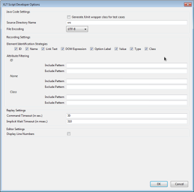 Script Developer Settings
{kind=link}
Java Code Settings
Generate JUnit wrapper class for test cases: Activates the generation of JUnit wrapper classes needed to run recorded scripts in your Java IDE. This box has to be checked if you want to run load tests using recorded test cases or if you want to automate these tests, e.g. in a build process.
Source Directory Name: The name of the directory where the generated Java source code is saved (src in most cases). The path is relative to the location of the current test suite.
File Encoding: The character encoding scheme for the JUnit wrapper classes. It should match the settings in your IDE when running test cases as JUnit tests.
Recording Settings
Element Identification Strategies: Check the boxes to select element identification strategies available during test case recording. Each web element type has a default identification strategy. If you haven’t checked it, one of the other identification strategies will be used to identify the element. For example, when you deselect the Name checkbox, the recorder will avoid command targets like name=xyz and the name attribute in XPath expressions. Note that XPath is used as a fall-back strategy and can’t be disabled.
Attribute Filtering: Include Patterns and Exclude Patterns let you filter attributes used in element locators. If an Include Pattern is defined, then only attributes matching this filter pattern are used in element locators, whereas non-matching attributes will be avoided. On the other hand, an attribute will be avoided in element locators if it matches one of the Exclude Patterns. Exclude Patterns always take precedence over Include Patterns , that is an attribute will be avoided if it matches the Exclude Pattern, even if it also matches any Include Pattern. Both pattern types are available for ID, Name, and Class attributes and must be given as regular expressions. More than one Include and Exclude Patterns can be defined, separated by whitespace.
Replay Settings
Command Timeout (in sec.): Defines the default timeout for replaying WaitForXyz commands. When this time has elapsed and the condition is still false, the command will fail with an error message. This value can be changed for particular scripts by using the setTimeout command.
Implicit Wait Timeout (in msec): This value defines the maximum time to wait for the target element to (dis)appear before the command is seen as failed. It is used by all commands that require a target element but not by assert and waitFor commands.
The implicit wait timeout is extremely useful if your web application is very dynamic and uses asynchronous JavaScript to build and modify the page. Normally, you would use a waitFor command to wait for the element to appear before you can interact with it. When an implicit wait timeout is defined, most of the waitFor commands can be omitted, making your test cases shorter and easier to maintain.
Editor Settings
Display line numbers: If checked, line numbers are shown in front of a command when a test case or module is open for editing.
User Interface Elements
The main window of Script Developer features the following sections and elements:
 Script Developer
Script Developer
Toolbar and Record/Replay Section
| Control | Description |
|---|---|
| Script Developer | Provides access to Settings, About, Manage Global Test Data, and the XLT website. |
| Replay Speed | Controls the replay speed for test cases and modules. The selected replay speed determines how long elements addressed by commands are being highlighted during replay. Please note that this does NOT affect how fast those commands are being executed. |
| Replay | Replays the currently loaded test case or module. |
| Single Step Forward | Executes the currently marked command and moves to the next command. |
| Pause | Pauses the replay of a test case, and activates the Continue Replay and Single Step Forward buttons. |
| Continue Replay | Continues replay of a paused test case or module. |
| Stop | Stops recording or replay of a test case or module. |
| Record | Starts recording your actions on the web page in your active browser tab window. |
| Save | Saves the currently open test case or module. |
| Reload | Reloads all test cases and modules in the test project. |
| Base URL | Displays the base URL that is saved for the currently open test case (in italics). You can temporarily change it by entering another one into the edit field or by selecting from the drop-down menu. If you enter a valid URL, the URL saved in the test case will be overridden by the new value. |
Project View
The project view contains a tree view, the script explorer, that lists all available test cases and modules structured in packages. Script Developer loads all test cases and modules from <test-suite>/scripts and its sub-folders. The package structure of the script explorer is reflected by the structure of the sub-folders.
The package structure in the script explorer also reflects the package structure of the generated JUnit wrapper classes.
The drop-down box includes all test suites known to Script Developer, which lets you easily switch between projects. Use the Create/Import button to import existing test projects still unknown to Script Developer.
When importing a project, make sure to choose the parent directory of the scripts directory, and not the script directory itself. To create a new project, select an existing directory from the file dialog popping up after you’ve clicked the Create/Import button.
You can filter the displayed test cases or modules using the input field below the script explorer. Click the small arrow icon on the left to filter the list either by name, description, tag, or any combination of these. Typed characters are case-insensitive. To reset the search result, click the x icon on the right side of the input field or manually delete all characters.
You may change the alphabetic sorting (A-Z or Z-A) of the packages by clicking on the header of the Name column. The second column shows a description for each test case or module. You can add or edit the description in the Edit Details dialog.
Editor Tabs
To open a test case or module for editing, double-click on a script or select the context menu option Edit. The script’s commands are listed inside the work area on the right-hand side of the developer window. The Edit Details option allows you to edit particular details and displays the test case or module in the editor window to help you recognize that something has been changed. You can open more than one script at a time and select a test case or module by clicking on the respective tab above the command list. The script editor tab displays the Name, Target, and Value attributes of each command in three adjustable columns.
Recording and Replaying Test Cases
Recording
Recording your interaction with the application you want to test is the easiest way to create test scripts. To do this, you need to:
- Open the web page you want to start with in a Firefox tab. Make sure this tab remains active, that is the foreground tab.
- Switch to Script Developer and create a new test case via the context menu in the script explorer. Provide a meaningful name. An empty script editor tab opens.
- Click the Start Recording icon in the tool bar to start recording.
- Switch back to your web page and start using it. All your interactions with the page are being recorded.
- When you’re done with your test scenario, switch back to Script Developer and click the Stop icon to stop recording.
- Don’t forget to save the new script by clicking the Save icon or by using the Ctrl+S shortcut. See Appendix for a full list of available shortcuts.
If you have the Firefox Add-on Firebug, you need to make sure it isn’t active during recording because its highlight mechanism may cause unnecessary interactions to be recorded.
Note that besides recording the normal web page flow, you can also validate the correctness of pages by using assert commands. Generally, new or changed pages emerge throughout an interaction with a web page and should thus be checked. To record assertions, do the following:
- Open the Firefox context menu and select Script Developer (available only during recording). A sub-menu opens.
- Choose an appropriate assertion from the sub-menu. See Appendix for a full list of available assertions.
- Continue interacting with the web page as defined by your test scenario.
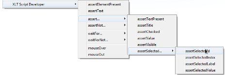 Record Commands Using the Context Menu
{kind=link}
For each assertion, there is also a variant checking whether the respective condition is not true. You can record as many assertions as you like.
Replaying a Test Case
Once you’ve recorded a test case, it can be executed inside your browser. In the script explorer, right-click the test case to open its context menu, and then click Run. Alternatively, do the following:
- Open the test case script in a test case editor tab or activate the tab if it’s already open, and
- click the Play icon in the tool bar.
The script is replayed in the active Firefox browser tab.
While the script is running, you can watch the results of the script execution. You can see how links are being clicked, input fields are being filled, buttons and checkboxes are being clicked, etc. Inside the browser tab, actions and validations the script is currently dealing with are highlighted yellow and orange, respectively. Inside the script tab, the commands are marked with a special status icon. It’s yellow as long as the command or module is being executed. When the execution is finished, the icon will either turn green in case of success or red in case of errors. Note that the script execution will immediately stop if a command fails.
If you have difficulties following the script execution, use the speed slider in the tool bar to reduce the replay speed. Increase it if you need the results as quick as possible. Be aware though that the commands are not being executed any slower or faster this way. The slider only affects the amount of time elements are being highlighted.
You may stop or pause the script execution at any time. To stop a script, click the Stop icon in the tool bar. As a result, the script is terminated. The Pause icon suspends the execution of a script (after finishing the currently running command). To continue the script execution, click the Continue Replay icon. Alternatively, you can click the Single Step Forward icon, which only causes the next command to be executed.
You can set a start point and one or more breakpoints for a test script. See Start Point for Replaying Test Cases and Breakpoints for more information.
Note that clicks on alert, confirmation, or prompt boxes are not recorded and thus don’t pop up during replay either. Instead, Script Developer simulates a return value of the alert() or confirm() function, which is equivalent to clicking “OK” or “Yes”. For prompt(), an empty string is returned as your input value.
Running Batch Tests
A sequence of test cases or an entire test suite can be run as batch test. Select the desired test cases from the script explorer by clicking them while holding the CTRL key, or, alternatively, choose one or more packages to run. Click Run as Batch Test from the script explorer context menu to start the batch test.
The selected test cases are executed consecutively. The result is displayed in a new tab in the work area with a colored bullet for each test case indicating the current state of the test execution. Grey stands for not tested, yellow for currently running test cases, green for passed and red for failed test cases. The total number of selected test cases, the number of executed test cases, an error count, and the elapsed time is shown in the header of the batch test tab.
 Batch Test
Batch Test
After the batch test is completed, the Rerun failed tests button will become active if at least one test failed. Clicking it starts a new batch test in a new tab with all test cases that failed the previous batch test. To export the batch test result to HTML, click the Export as HTML button and provide a meaningful name and a target location. You can then view the batch execution report in any web browser.
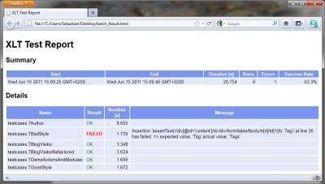 Batch Test HTML Report
{kind=link}
Editing Test Suite, Test Cases and Modules
You can modify script test cases and modules at any time. Often enough, it’s necessary to fix mistakes made during the recording of the test scenario. For example, you may have clicked a wrong link or forgotten to add an assertion. In the first case, just go back and continue with your test scenario; the unwanted or incorrect actions can be deleted later on. In the second case, manually add the appropriate assertion commands after you’ve finished recording. To modify a test case during recording, switch to the Script Developer window, make the necessary changes, and then return to the web page to continue recording.
Editing Test Suite
 Test Suite Context Menu
Test Suite Context Menu
The right-click context menu in the script explorer offers the following options for editing the test suite and scripts (test cases or modules):
| Menu Item | Description | |
|---|---|---|
| New | Test Case | Creates a new test case. You can define name, script package, tags, description, base URL, and enable test case-specific settings in the dialog that pops up. |
| Script Module | Creates a new script module. See Script Modules for details. | |
| Java Module | Creates a new custom Java module. See Creating Java Modules for details. | |
| Script Package | Creates a new script package. The complete package name must always be specified, e.g. testcases.cart.order. | |
| Run | Directly runs the selected test case without opening it in the editor. | |
| Run as Batch Test | A sequence of test cases, packages, or an entire test suite can be run as a batch test. See Running Batch Tests for details. | |
| Edit | Opens the script as a tab for editing in the work area and lists its commands. | |
| Edit Details | Opens a dialog to edit script details like name, package, tags, description, base URL, test case-specific settings, or module parameters. | |
| Refactor | Rename Script | Opens a dialog to rename the selected script. |
| Move Script(s) | Opens a dialog to move the selected script to another package. | |
| Rename Package | Opens a dialog to rename the selected script package. | |
| Enable/Disable | Enables/disables the selected tests. Disabled tests will be skipped by batch tests and annotated with @Ignore when exported to Java. | |
| Export | Opens a dialog to define settings for exporting the script to Java (XLT Scripting API or XLT Action API). See Export Test Case to Java for details. | |
| Manage Test Data | Opens a dialog to define test data you want to store in a separate file. See Manage Test Data for details. | |
| Delete | Deletes the selected script or package. | |
Editing Details
When choosing Edit Details from the context menu, a dialog opens that lets you edit details of the selected test case or module.
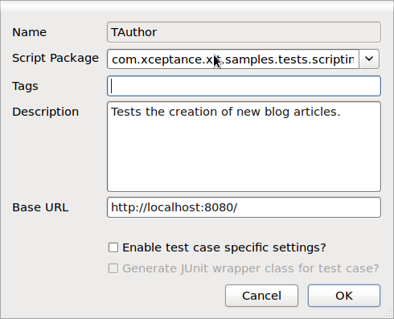 Edit Test Case Details
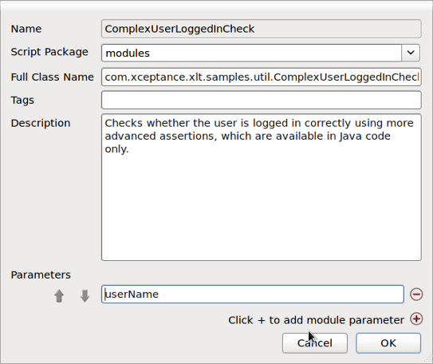 Edit Module Details
| Control | Description |
|---|---|
| Name | The name of the test case. However changing it requires to use the Rename Script refactoring operation from the context menu. |
| Script Package | The script package of the test case. However changing it requires to use the Move Script(s) refactoring operation from the context menu. |
| Tags | Tags to group several test cases and make them easier to find. Tags have to be separated by comma. The list of available test cases can be filtered by tags. |
| Description | A description of the test case. |
| Base URL | The base URL for the test case. This is only used if the base URL input field of the Script Developer toolbar is empty or contains an invalid URL. The base URL defined here is displayed in the toolbar in italics and can be overridden by entering a new value. |
| Enable test case specific settings | Enables the second checkbox Generate JUnit wrapper class for test case to define a test case-specific setting that overrides the global value. |
| Generate JUnit wrapper class for test case | If active, the global setting for generating JUnit wrapper classes will be overridden for the current test case by the value of this checkbox. See Settings for more information about the global setting. |
| Parameters | The parameters of the module. |
Depending on whether the selected element for editing its details is a test case or a module, the dialog elements Enable test case specific settings, Generate JUnit wrapper class for test case, and Parameters are shown or not shown.
Editing Scripts
After opening a script (test case or module) as a tab in the work area, you can edit it by selecting one of the options from the context menu. A script may consist of actions, commands, and module calls.
The following options for editing are available (item = action, command or module call):
| Insert | Action | Inserts an action before the selected item. See Actions for details. |
| Command | Inserts a command before the selected item. Inserting a command is an alternative to recording them on the page. | |
| Module | Inserts a module call before the selected item. Modules can also be inserted by dragging them from the script explorer to the script. | |
| Edit | Opens a dialog to edit the attributes of the selected item. Editing a module call lets you both edit its parameter values and replace the current module with another one. | |
| Extract Module | Saves the selected items as a module and replaces these items with a call to the new module. You can select several items by holding the CTRL key while clicking. Alternatively, hold the SHIFT key and select the commands with the arrow keys. | |
| Open Module | Opens the called script module in a separate tab of the work area for editing. | |
| Enable/Disable | Enables or disables the selected item. When a module call is disabled, all commands of that module will be disabled as well. | |
| Toggle Start Point | Sets/deletes a start point for replaying the script. If set, the replay starts at the marked command. | |
| Toggle Breakpoint | Sets/deletes a break point. If set, script execution will pause upon reaching the marked command. You can set multiple break points. | |
| Execute Command | Immediately executes the selected command in the currently active browser tab. | |
| Cut | Cuts the selected items from the script to insert them at another position in the same script or in another one. | |
| Copy | Copies the selected items to insert them at another position in the same script or in another one. | |
| Paste | Pastes the previously cut or copied items. | |
| Delete | Deletes the selected items. | |
Editing Commands
To edit a command, select Edit from the context menu. The XLT – Edit Command dialog opens:
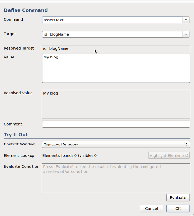 Edit Command
{kind=link}
| Control | Description | |
|---|---|---|
| Command | The name of the command to be executed (interacts with the page or executes an assertion). A drop-down box next to the command input lists all available commands with a small description. See Appendix for a full list of commands. | |
| Target | Defines the target element(s) to be addressed by the command. Not all commands require a target (e.g. open), so this may be empty. For each generated locator, Script Developer keeps a list of alternative locators in memory. If desired, you can later switch to another locator type (or xpath variant) by using the drop-down box next to the target input field. These alternatives are not part of the script file and cleared after reloading the test case. | |
| Resolved Target | Targets may contain placeholders, e.g. module parameters (@{...}), test data (${...}), and macros. Resolved Target is a read-only field that displays the target expression where all placeholders are resolved to actual characters. Variables are resolved recursively, so you can use variables within resolved content. | |
| Value | Sets a value for a command, e.g. the page title to be asserted or the text to be typed into an input element. Not all commands require a value (e.g. check or click). For commands like assertText or similar, you can define an explicit text-matching strategy. | |
| Resolved Value | Values may contain placeholders, e.g. module parameters (@{...}), test data (${...}), and macros. The Resolved Value field shows the value of the command with all placeholders resolved. Variables are resolved recursively, so you can use variables within resolved content. | |
| Comment | An optional comment for the command, used to document the purpose of this test step. | |
| Context Window | The window page to look upon. | |
| Element Lookup | Elements found | When you enter a target expression in the Target field, Script Developer will analyze the window page and display the number of found elements matching this target. It will also display how many of them are visible at the moment, e.g. Elements found: 3 (visible: 1). If more than one element can be found on the window page, the command will be executed for the first match. |
| Highlight Element(s) | Highlights all target elements found on the set window page. | |
| Evaluate | Clicking the Evaluate button executes the command and shows the result (Passed or Failed) considering the resolved target and resolved value. During script debugging and script execution, you can instantly evaluate assertions without executing the whole test case to see whether or not your verification expression matches. | |
Start Point for Replaying Test Cases
By default, the execution of a script starts at its beginning. Sometimes, however, it might come in handy to start it from a specific command. Select the respective command and press S to set a start point or, alternatively, choose Set Start Point from the context menu. A start point marker looking like the replay icon appears next to the command. Now click the Play icon in the toolbar to start the execution from the marked command.
Make sure the right page is displayed in the active Firefox tab so that the script can be started at the selected command. Otherwise, it is likely to fail.
Breakpoints
To automatically pause the script execution at a certain command, you can set a breakpoint by selecting the respective command and pressing B. A breakpoint marker appears next to the command. When the script is being replayed, execution will automatically pause upon reaching the command. You can go on replaying the script by clicking Continue Replay or Single Step Forward in the toolbar. To clear the breakpoint, mark the command again and press B. A breakpoint may also be set or deleted using the context menu or by double-clicking the breakpoint column (the grey leftmost column). When you set a breakpoint for a command inside a module that is used multiple times, the respective command in each module call will be marked with a breakpoint and the replay will pause each time one of these module calls is reached.
Breakpoints exist in memory only. Closing the appropriate script editor tab or reloading the script clears all of its breakpoints.
Actions
As you may have noticed, Script Developer automatically inserts Actions while recording. An action is a sequence of steps that belong together. For example, filling in the inputs of a form, submitting the form by clicking the submit button, and checking the resulting page with assertions is typically one action. Actions are primarily used to break the page flow down into atomic steps and to give those steps a name. Action execution times are measured and reported while running load tests.
Script Developer gives actions generic names, but you can rename them to facilitate script maintenance. You can also manually insert a new action at any position of your script (Insert > Action). The start of a new action automatically ends the previous action, even if the following action is part of a module call.
Note that actions are not meant to structure your scripts visually since they are not comments. In other words, you should not use actions to structure a long list of validations without loading a new page. Using actions in this context conflicts with their basic concept, namely that they should always load one new page. The misuse of actions in script test cases makes it difficult to analyze the test results because actions then fail to represent the page flow. Also remember to give your actions meaningful names (e.g. Search, Browse, or AddToCart).
Script Modules
Extracting a Module
Like test cases, script modules are sequences of commands, actions, and optional calls to other modules. They can be written from scratch, but it’s much easier to extract them from an existing test case. That means you record your test script first to identify reusable parts of that script afterwards. These parts are then factored out into separate modules.
To extract a module, do the following:
- Open the original test case.
- Select the groups of commands you want to extract by clicking them while holding the CTRL key.
- Choose Extract Module from the context menu.
- Provide a meaningful module name and the script package.
- Optionally provide tags, a description, and module parameters.
After confirming with the OK button, you can find the new module in the script explorer. Additionally, the original test case is modified now so that the selected items are replaced by a call to the new module.
Most editing options for test cases are available for modules as well, such as the editing of module properties and commands of a module. Therefore, Edit Test Suite and Editing Commands also apply to modules. You can open a module in a separate tab and edit its commands there. It’s also possible to edit a module’s command from within a test case using this module. When you do so, keep in mind that editing a module’s command may also affect other test cases using this module.
The script explorer context menu offers two options for creating new modules. Select New Script Module to create a new script module from scratch as an alternative to extracting it from a test case. New Java Module creates a script interface to integrate Java code into a script test case for the purpose of running the test case outside Script Developer later, but will be skipped when creating the test case using Script Developer. See Creating Java modules for more information.
Defining Module Parameters
You can parameterize modules to increase their reusability in other contexts and scenarios. For example, a module that logs in a user should be parameterized with the user name and password. Script module parameters are defined as part of the module’s meta-data. To use these parameters later in the module’s script code as target or value, you refer to them by using the special @{} placeholder notation (for example: @{userName} and @{password}) in the target and/or value of a command).
To parameterize a module, you need to:
- Select the module from the library and open the Edit Details dialog.
- Declare the module parameters. You can add parameters with the + button and delete parameters with - (see figure “Edit Module Details” below).
- After confirming the changes, open the module in an editor tab in the work area.
- Edit the commands that should use any of the defined parameters. Where needed, replace literal values in the target or value of the command with @{name} placeholders (see figure “Refer to module parameters in a command” below).
- Save the module.
Edit Module Details
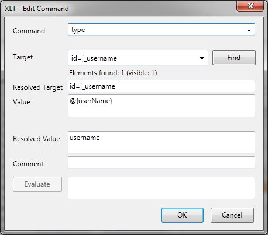 Refer to Module Parameters in a Command
For all test cases using this module, you have to provide a value for each placeholder:
- Open the test case in an editor tab.
- Select Edit from the context menu of the module call inside the test case, then open the Edit module dialog.
- Provide a valid value for each placeholder.
- Close the Edit module dialog and save the test case.
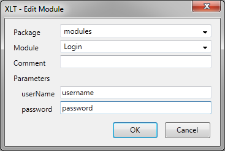 Provide Values for Module Parameters
Modules and Actions
You can extract a module from any part of the script, but there are some basic rules you should follow when extracting modules – especially when it comes to actions. Actions are important when you run load tests because load test reports are based on actions. Always keep in mind the basic concepts of XLT test cases.
In Script Developer, an action starts with an action line in the script and ends with the beginning of the next action, regardless of whether the next action is part of a module or not.
In most cases, modules are used more than once in a test suite. Be careful of actions contained in modules. If a module starts with a sequence of commands followed by an action, the commands of this module might be part of an action of a completely different module. This won’t cause your test scripts to break, but it may lead to confusion when analyzing load test reports.
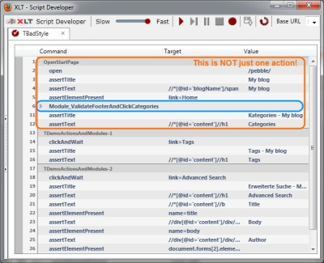 Bad style: Module call in a script test case with hidden action
{kind=link}
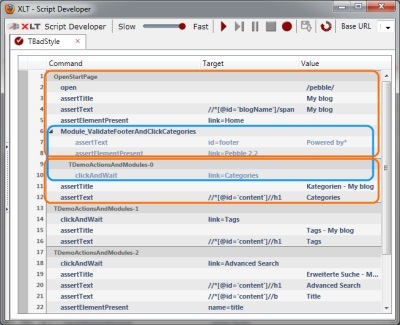 Bad style: Hidden Action in a Module Call
{kind=link}
When extracting modules, it is recommended to follow these rules to facilitate test report analyzability:
- Modules should either contain no actions at all or start with an action if they do contain one or more actions.
- If a module contains one or more actions, then the first line after the module call should also be an action.
In other words, for each module you should decide if you
- use a module as a reusable sequence of commands that will always be part of one enclosing action or
- encapsulate one or more complete actions as a module.
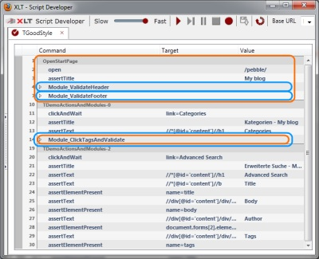 Good style : Module Calls in Script Test Case
{kind=link}
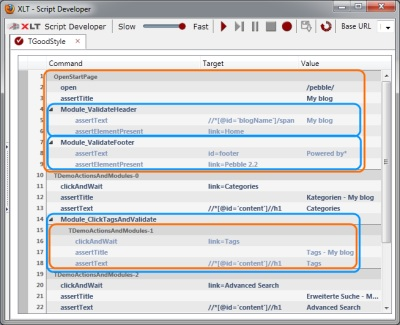 Good style: Modules with no Action at all or Completely Encapsulated Actions
{kind=link}
Managing Test Data
By default, test data is hard-coded into the test script. To simplify the changing of test data, the data values can be bound to variables and all occurrences can be replaced by references to the appropriate variables. These bounded test data values can be referred to as test data mappings since a test data variable is mapped to a certain value. All test data mappings of a script are managed using the separate data file <name>_data.xml, where <name> is the name of the corresponding script. For example, the test data file of the script TSearch is named TSearch_data.xml and stored next to the script file TSearch.xml.
To manage test data for a script test case or module, do the following:
- Select the script in the explorer.
- Choose Manage Test Data from the context menu of the script explorer’s tree view, or alternatively press ALT+D. A dialog comes up where you can add new variable mappings, edit existing ones, or remove those you don’t want to use anymore. Note that you may also use this dialog to simply check what test data mappings exist and whether they override any default value.
- Close the dialog. The data file is saved automatically.
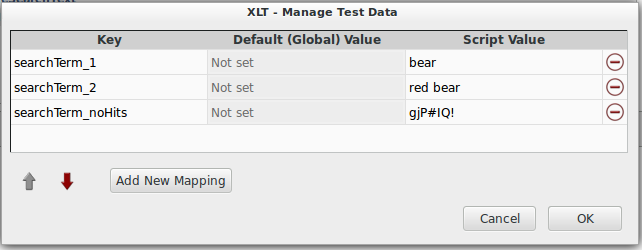 Manage Test Data
When you open the dialog the first time, it will show an empty map where you can add the mappings you want to use. Each mapping is represented as a 3-column row with the first column specifying the name of the test data variable and the third column specifying the value of the variable. The second column is a read-only field displaying the default value of the test data variable (global test data mapping) if one is set.
Each of the defined test data variables can be referenced several times in the scripts by using the ${...} syntax. For example, ${foobar} references the variable foobar.
As soon as you have a reference to a test data variable and you rename the variable in the Manage Test Data dialog, the reference is automatically adjusted to reflect the change(s) you’ve made.
Test data mappings may not only be specified for test case scripts but also for modules. If a module has a test data file and this module is called by a test case that also has a test data file, both test data files will be used to access the required values. If both test data files contain a test data mapping with the same name but different values, the test case data file will have priority.
Test data variables are scoped, that is a script cannot access test variables defined by a called script. Furthermore, the calling script may overwrite test data variables defined by the called script. This forms a scope chain that is defined by the call hierarchy of your scripts. The scope of global test data variables is always the end of this scope chain.
Global Test Data
Certain test data (such as user credentials or product data) are often the same for many or even for all test cases in a test suite. However, if the data needs to be changed, the test data mappings of all affected test cases would equally need to be adapted one by one. To minimize the effort of maintaining such data, you can define it as global test data.
Each of the global test data mappings is available to all of your scripts in the current test suite and their values serve as default values that can be overridden by a script if necessary. This way, you may also specify a test data fallback since a global test data value is used only when no script-specific test data value could be found.
To edit the global test data, go to Script Developer > Manage Global Test Data. A dialog opens that is almost identical to the Manage Test Data dialog (see above), except that each test data mapping is represented as a 2-column row instead of a 3-column one.
All global test data is stored in the file global_testdata.properties located in the root directory of the respective test suite.
Exporting Test Cases to Java
Scripting test cases using Script Developer is easy but limited. The scripts are strictly linear and the set of available commands can’t always replace a programming language. In certain cases, it is therefore useful to take advantage of powerful programming languages such as Java. Java provides both the structure to reuse code and a wide range of available libraries. Typically, you will have to switch to Java if your tests need to act randomly, for example, if you want the TBrowseCatalog test case to not always open the same catalog but a randomly chosen one instead. This behaviour is especially convenient for load tests meant to simulate realistic traffic.
The setting Generate JUnit wrapper class for test cases only lets you generate Java wrapper classes to execute the XML scripts from outside Script Developer, which is not a real export.
In contrast, Export translates the test-script file into Java syntax and generates one or more classes representing the test case and modules. When exporting to Java, you can choose the API used for the resulting code. You may either generate code based on the XLT Scripting API or code based on the XLT Action API.
To export a script test case or module to Java, follow these steps:
- Select the script(s) you want to export from the script explorer.
- Choose Export from the context menu. The XLT – Script Export dialog opens.
- Define the source directory, package prefix, and API (or accept the suggested values).
- Click OK.
As a result, you find the generated Java code in the specified packages.
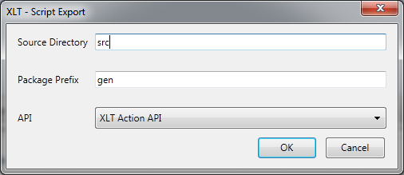 Export Script to Java
- Source Directory: The name of the directory where the generated Java source code is saved (
srcin most cases). The path is relative to the location of the current test suite. - Package prefix: The package prefix for the generated Java classes. The resulting package is composed of this prefix and the script package of the exported test case.
- API: The API for the resulting Java code, XLT Scripting API or XLT Action API.
The XLT Action API does not support Java modules. When you export to XLT Action API, possible calls to Java modules are omitted in the resulting code and a comment is inserted instead.
Export to XLT Scripting API
The following example shows the TSearch test case of the demo test suite exported to XLT Scripting API code:
/**
* Simulates storefront search including search result browsing.
*/
public class TSearch extends AbstractWebDriverScriptTestCase
{
/**
* Constructor.
*/
public TSearch()
{
super(new XltDriver(true), "http://localhost:8080");
}
/**
* Executes the test.
*
* @throws Throwable if anything went wrong
*/
@Test
public void test() throws Throwable
{
final OpenHomepage _openHomepage = new OpenHomepage();
_openHomepage.execute();
//
// ~~~ Search-NoHits ~~~
//
startAction("Search_NoHits");
// Store a search phrase that does not return any search results
store(resolve("${searchTerm_noHits}"), "searchTerm");
// Execute the search (module call)
final Search _search = new Search();
_search.execute(resolve("${searchTerm}"));
// Assert presence of info maessage element
assertElementPresent("id=infoMessage");
// Validate the 'no results' message
assertText("xpath=id('infoMessage')/div/strong", "*Sorry! No results found matching your search. Please try again.*");
//
// ~~~ Search ~~~
//
startAction("Search");
// Store a search phrase that gives results
store(resolve("${searchTerm_1}"), "searchTerm");
// Execute the search (module call)
_search.execute(resolve("${searchTerm}"));
// Validate the entered search phrase is still visible in the input
assertText("id=searchText", resolve("${searchTerm}"));
// Validate presence of the search results page headline
assertElementPresent("id=titleSearchText");
// Validate the headline contains the search phrase
assertText("id=titleSearchText", resolve("glob:*Your results for your search: '${searchTerm}'*"));
//
// ~~~ ViewProduct ~~~
//
startAction("ViewProduct");
// Assert presence of one of the product thumbnails
assertElementPresent("id=product0");
// Store the name of the first product
storeText("id=product0Name", "productName");
// Click the product ilnk to open the product detail page
clickAndWait("//*[@id='product0']//img");
// Validate it's the correct product detail page
assertText("id=titleProductName", resolve("${productName}"));
//
// ~~~ Search ~~~
//
startAction("Search");
// Store search phrase to repeat search
store(resolve("${searchTerm_2}"), "searchTerm");
// Execute the search (module call)
_search.execute(resolve("${searchTerm}"));
// Validate the entered search phrase is still visible in the input
assertText("id=searchText", resolve("${searchTerm}"));
// Validate presence of the search results page headline
assertElementPresent("id=titleSearchText");
// Validate the headline contains the search phrase
assertText("id=titleSearchText", resolve("glob:*Your results for your search: '${searchTerm}'*"));
}
This is the code for the module Search, which is called by TSearch:
/**
* Searches the specified term.
*/
public class Search extends AbstractWebDriverModule
{
/**
* {@inheritDoc}
*/
@Override
protected void doCommands(final String...parameters) throws Exception
{
final String searchTerm = parameters[0];
// Enter the search phrse into the input
type("id=searchText", searchTerm);
// Cick the the search button to submit
clickAndWait("id=btnSearch");
}
}
Note that the XLT Scripting API Java code is very similar to the script code. You can refactor the code as you like and directly use lower-level APIs, such as the WebDriver API, to implement advanced functionality. You may also add code to randomise your tests or to retrieve test data from other sources, like the GeneralDataProvider. See XLT Scripting API for details.
Export to XLT Action API
When you export to the XLT Action API, the resulting code is based on separate classes for each action of a test case. The script modules are also translated into separate classes. If a script module contains more than one action, it will be represented by a flow.
To make this approach work smoothly, it’s very important that you follow the rules for defining actions in the context of modules. If there is an action in a module and it’s not the first item of this module, then an automatically generated action will be inserted at the beginning of the exported module code.
Executing Tests outside Script Developer
As soon as your test suite is complete, you can run the test cases outside Script Developer in headless mode. This especially comes in handy for functional tests and load tests as the XLT framework then is responsible for interpreting the script test cases and sending the respective requests to the system under test.
It is always recommended to have a JUnit wrapper class for each script test case. This facilitates working with test scripts in your preferred IDE since these tools generally know how to work with JUnit classes.
Inside an IDE
To check whether your scripts are running successfully in headless mode, open the test project in your favorite IDE, navigate to the JUnit test classes, choose one of them, and then run it as JUnit test.
Within Build Scripts
To run all or selected script test cases as part of your functional tests, you need to make the corresponding JUnit classes available to your test framework, such as a junit Ant task.
Typically, it’s sufficient to add the script test case wrapper classes to the list of classes you want to be run by JUnit. If you prefer not to have a wrapper class for each test script, add the class com.xceptance.xlt.api.engine.scripting.ScriptTestCaseSuite to the list of JUnit classes. It is a generic representative for a set of test scripts. To tell the suite class which scripts are to be executed, use the property com.xceptance.xlt.api.engine.scripting.ScriptTestCaseSuite.testCases and list the script names as below:
com.xceptance.xlt.api.engine.scripting.ScriptTestCaseSuite.testCases = TSearch TAddToCart
In any case, each test script is executed once and the results are part of the JUnit test report.
See the demo test suite in directory
<xlt>/samples/testsuite-postersfor an example of how to configure Ant’sjunittask to run script test cases.
As a Load Test
Performing load tests with your script test cases is easy. Register the JUnit classes with the XLT load test framework and use them in your load tests like regular Java-based tests. Note that if you do so, you need a JUnit wrapper around your test script. See Load Testing for details.
Advanced Topics
File Generation
The figure below shows the different types of files generated by Script Developer when wrapper class generation is enabled. The files generated during the export to Java are not displayed.
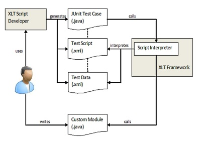 Script Developer File Generation
{kind=link}
In the following, the sample test case TSearch (available in the demo application testsuite-posters) serves as a reference to describe all of these file types in detail.
Test Script (TSearch.xml)
All the script files recorded by Script Developer are saved in XML format following the naming convention Testcasename.xml. With reference to our sample test case, TSearch.xml is the test case script file that consists of all the commands and modules calls being used. The syntax is very simple and easy to understand. See below for an example:
<?xml version="1.0" encoding="UTF-8"?>
<testcase xmlns="http://xlt.xceptance.com/xlt-script/2" version="4" baseURL="http://localhost:8080">
<description>Simulates storefront search including search result browsing.</description>
<module name="posters.functional.modules.OpenHomepage"/>
<action name="Search-NoHits"/>
<command name="store" target="${searchTerm_noHits}" value="searchTerm">
<comment>Store a search phrase that does not return any search results</comment>
</command>
<module name="posters.functional.modules.Search">
<comment>Execute the search (module call)</comment>
<parameter name="searchTerm" value="${searchTerm}"/>
</module>
<command name="assertElementPresent" target="id=infoMessage">
<comment>Assert presence of info maessage element</comment>
</command>
<command name="assertText" target="xpath=id('infoMessage')/div/strong" value="*Sorry! No results found matching your search. Please try again.*">
<comment>Validate the 'no results' message</comment>
</command>
<action name="Search"/>
<command name="store" target="${searchTerm_1}" value="searchTerm">
<comment>Store a search phrase that gives results</comment>
</command>
<module name="posters.functional.modules.Search">
<comment>Execute the search (module call)</comment>
<parameter name="searchTerm" value="${searchTerm}"/>
</module>
<command name="assertText" target="id=searchText" value="${searchTerm}">
<comment>Validate the entered search phrase is still visible in the input</comment>
</command>
<command name="assertElementPresent" target="id=titleSearchText">
<comment>Validate presence of the search results page headline</comment>
</command>
<command name="assertText" target="id=titleSearchText" value="glob:*Your results for your search: '${searchTerm}'*">
<comment>Validate the headline contains the search phrase</comment>
</command>
<action name="ViewProduct"/>
<command name="assertElementPresent" target="id=product0">
<comment>Assert presence of one of the product thumbnails</comment>
</command>
<command name="storeText" target="id=product0Name" value="productName">
<comment>Store the name of the first product</comment>
</command>
<command name="clickAndWait" target="//*[@id='product0']//img">
<comment>Click the product ilnk to open the product detail page</comment>
</command>
<command name="assertText" target="id=titleProductName" value="${productName}">
<comment>Validate it's the correct product detail page </comment>
</command>
<action name="Search"/>
<command name="store" target="${searchTerm_2}" value="searchTerm">
<comment>Store search phrase to repeat search</comment>
</command>
<module name="posters.functional.modules.Search">
<comment>Execute the search (module call)</comment>
<parameter name="searchTerm" value="${searchTerm}"/>
</module>
<command name="assertText" target="id=searchText" value="${searchTerm}">
<comment>Validate the entered search phrase is still visible in the input</comment>
</command>
<command name="assertElementPresent" target="id=titleSearchText">
<comment>Validate presence of the search results page headline</comment>
</command>
<command name="assertText" target="id=titleSearchText" value="glob:*Your results for your search: '${searchTerm}'*">
<comment>Validate the headline contains the search phrase</comment>
</command>
</testcase>
Test Data (TSearch_data.xml)
Separating test data from script code by extracting the recorded values into data files is a very useful feature. The naming convention being used is Testcasename_data.xml, so TSearch_data.xml represents the data file of the TSearch test case. A data file looks like this:
<?xml version="1.0" encoding="UTF-8"?>
<data xmlns="http://xlt.xceptance.com/xlt-script-data">
<searchTerm_1>bear</searchTerm_1>
<searchTerm_2>red bear</searchTerm_2>
<searchTerm_noHits>gjP#IQ!</searchTerm_noHits>
</data>
JUnit Test Case Wrapper (TSearch.java)
This file is generated when you enable wrapper class generation for your test cases. The generation of wrapper classes lets you run your script files outside the browser via the XLT framework that simulates a headless browser. This mode suits unattended test case execution, such as functional or load testing.
Custom Module (ComplexUserLoggedInCheck.java)
If some special constructs can’t be expressed due to the basic script syntax, you may create your own custom modules and use them inside your scripts. Custom modules are implemented in Java. See Using Java Modules for an example.
Macros
When you create and run regression tests with Script Developer, you sometimes need to have unique data available to run a test over and over again. For example, user account creation always requires a new email address since the target system accepts each address only once.
For the generation of timestamps and random strings or numbers, the following macros are available:
- NOW: returns the current time as time stamp (number of milliseconds elapsed since 1970-01-01)
- RANDOM.String(length): returns a random string of the given length
- RANDOM.Number(max): returns a randomly chosen integer between 0 (inclusive) and max (exclusive)
- RANDOM.Number(min,max): returns a randomly chosen integer between min (inclusive) and max (inclusive)
With the ${variable} notation, you can use macros in any command. If you want to input a random or unique email address, you could use one of the code lines below as a value in the type command:
${RANDOM.String(5)}@anyserver.com
or
${NOW}@anyserver.com
The resulting email addresses might look like zghfu@anyserver.com or 1295519733483@anyserver.com.
If you use one of these macros as a value for a module parameter, the random string or time stamp is created once for a test run and can then be used in several commands of the module with an identical value. For example, you can fill in a form with a random name, submit the form, and then validate the name on the confirmation page. This will only work if filling in the form, submitting it, and the validation are all part of the same module. The name has to be defined as a module parameter and referenced in the relevant commands with @{name}, where ${RANDOM.String(8)} is the provided value for the module parameter name.
Creating Java Modules
The commands supported by Script Developer are sufficient to create working test scripts. However, there are some special constructs that can’t be expressed due to its restricted script syntax, for example:
- Combining assertions by a logical OR.
- Performing advanced assertions which are not available as commands yet.
- Accessing and validating downloaded files.
To overcome such limitations, you can create custom modules for test cases meant to run outside Script Developer (as a load test, as JUnit test in Eclipse, or integrated in a build process). The Java modules are skipped when you run the test case in Script Developer.
Custom modules are written in Java by implementing the WebDriverCustomModule interface. This interface forces you to apply the required execute method. See below for an example:
public class ComplexUserLoggedInCheck implements WebDriverCustomModule
{
public void execute(final WebDriver webDriver, final String... parameters)
{
final WebElement webElement = webDriver.findElement(By.xpath("id('sidebar')/div[1]/div[1]/span"));
final String userName = parameters[0];
Assert.assertTrue("Expected user name not found: " + userName, webElement.getText().contains(userName));
}
}
Make sure the custom module class is compiled and made available on your test suite’s class path.
To integrate Java custom modules into test scripts, you first need to register them with Script Developer. You do so by creating a new Java module script:
- Choose New | Java Module from the script explorer context menu. The Edit Module Details dialog comes up (see the figure below).
- Fill out the necessary fields as described below.
- Close the dialog.
The new Java module is now available in the script explorer and can be used in other scripts (test cases or modules) just like any other script module. Note that Java modules can’t be edited and will be skipped when you run the test case inside Script Developer.
 New Java Module
New Java Module
- Name: The name of the new Java module.
- Script package: The script package for the new Java module.
- Full Class Name: The full class name (including package) of the Java class implementing the
WebDriverCustomModuleinterface. - Tags: Tags to group modules and make them easier to find. Tags have to be separated by a comma. The list of available modules can be filtered by tags.
- Description: A description of the module.
- Parameters: The name of the parameters the module expects when being executed.
If you’ve defined module parameters, you need to provide a value for each parameter when using the Java module in a test case. You access the first of these parameters in your Java code by reading the value from parameters[0], the second one by reading the value from parameters[1], and so on. The name of the parameters defined in the Java module script of Script Developer is not displayed in Java code; only the order of the parameters is relevant.
Note that you should use Java modules only if absolutely necessary because their execution will be skipped when you run the test case in Script Developer. If Script Developer comes across a Java module while replaying a script, it simply ignores it (the status icon turns grey) and continues with the next command. The next command might or might not succeed, depending on what the module does with the page. If the module leaves the page unchanged (that is it performs advanced validations only), the rest of the script will run successfully. However, if the module does change the page or loads a new page, the commands following the module are likely to fail. That’s why Java modules are mainly used for complex validations.
Feel free to let us know about extensions you create because we might include them in a future release.
Assertions on Form Controls
When making assertions on form controls, it’s very helpful to know when to choose which kind of assertion. To be more specific, for a given form control you have to decide whether to use one of the *Value commands or one of the *Text commands.
For each affected form control, the table below lists the input that will be used when checking the element either by a *Value or a *Text assertion. The input can be the element’s text content T or the element’s value attribute V.
*Value | *Text | |
|---|---|---|
| textarea | T | T |
| text-input | V | T |
| submit-input | V | - |
| button | V | T |
| option | V (T if value attribute not set) | T |
| radio-input | V | - |
| checkbox-input | V | - |
XLT Framework
Basic Concepts
When you perform web-based application tests, the possible paths from page to page define the web page flow. The web page flow can be depicted as a directed graph with the vertices representing the web pages and the transitions representing the actions to get from one page to another. Typically, a test scenario covers a certain part of the page flow only, such as a specific path through the application.
XLT provides a programming paradigm that makes use of a three-level architecture (transactions, actions, and requests). These levels are illustrated in the following sections.
Transaction
A transaction is the execution of exactly one test case or test scenario. To perform the scenario, the page flow is modeled in code. The test scenario is implemented as a test case which itself executes a sequence of one or more actions.
Action
An action can be defined as one irreducible step within a test case. Thus, an action interacts with the current page and – as a result – loads the next page. The resulting page is associated with this action and becomes the current page for the next action in the test scenario. Generally, an action triggers one or more requests.
Request
This level is equivalent to the HTTP request level used in web browsers or in any other application that relies on HTTP communication. You don’t have to deal with requests directly because they are automatically generated by the underlying HtmlUnit framework when you perform actions on HTML elements.
Validation
As you’re testing the functionality of applications or pieces of software, you have to check the correctness of all responses. It is strongly recommended that you handle all potential situations and use validations as often as possible. It’s better to have too many checks rather than too few! They can’t do any harm and will increase your confidence that your application works correctly. Thus, make sure you insert as much validation as necessary to detect any abnormal application behavior of the software being tested.
Pre-validation
Each action should have a pre-validation section that checks whether or not all of the required data is available to interact with that page and allow for the advance to the next one. From the end user’s point of view, you simply look for the information on the page that you need to continue your web experience, such as a form to fill in or a link to click. In case the required information can’t be found, an exception is thrown. If you run a load test, XLT will catch this exception and log all relevant information. This lets you evaluate the results after running the test and narrow down error conditions.
Post-validation
Post-validations work similarly to pre-validations. They are used to validate the result of the interaction and ensure that the data matches the expectations.
Example
The following example illustrates a very simple scenario to help you understand the terminology. It is based on the demo application shipped with XLT. Imagine a typical user searching the shop for products. The user will possibly:
- Open the shop’s home page,
- Search for a keyword but without results,
- Search for another keyword, this time with some results
- Select one of the shown products and open the product detail page
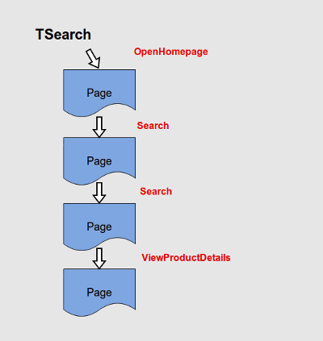 Test Case and Actions
{kind=link}
In this example, the test scenario is modeled as test case TSearch. A single execution of this test case is a single transaction. OpenHomepage, Search and ViewProductDetails are the actions of this page flow to go from one page to the next. Validations after each page transition ensure you arrived on the right page with the right content.
Available Programming Interfaces
Overview
XLT offers different approaches for writing test cases in Java. Several programming interfaces are available when using the XLT framework. Built on each other, they represent different abstraction levels.
You can extend your test suite using the XLT Scripting API. It lets you start with Java code that has automatically been generated from the recorded Script Developer test cases, and features a high-level command scripting API with a very intuitive syntax. You may also directly access the WebDriver API underlying the XLT Scripting API to write more advanced tests.
XltDriver, which is also part of the XLT framework, is a WebDriver implementation extending the HtmlUnitDriver. Both in turn are built on the HtmlUnit API. HtmlUnit is a headless browser offering a low-level API that lets you have full control when creating web tests.
To serve as the main framework when creating HtmlUnit-based tests, XLT provides the XLT Action API that structures the code in action classes and test case classes.
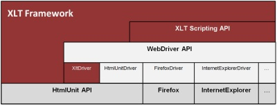 XLT Framework API
{kind=link}
XLT Test Cases are JUnit4 Tests
Except for script test cases exclusively springing from Script Developer, XLT test cases use a Java test case class with one test() method, regardless of the chosen approach for test writing.
The test() method of each test case class has a @Test annotation (see TSearch code example line 12). XLT builds upon JUnit4 principles and its annotations to implement and tag test cases. This way, each XLT test is in fact a JUnit test enabling XLT tests to be executed just like any other unit test in the IDE or within an existing build process. The sole difference between XLT and standard JUnit4 tests is that XLT tests can only take one active test method per test class. That means that, although there can be an arbitrary number of methods within a class, only one method is permitted to be annotated with @Test. However, this limitation rather serves the purpose of simplification than leading to actual restrictions.
Implementing the test case as a JUnit4 test also lets you use standard JUnit assertion to validate the page, mainly when you create test cases using the HtmlUnit API.
XLT Scripting API
When exporting a Script Developer test case to Java (see Export test cases to Java), you may choose the resulting code to be based on the XLT Scripting API. This API is an easy-to-use programming interface with a simple syntax deriving from the commands available in Script Developer.
You can write test cases from scratch using the XLT Scripting API. However, the most common way is to record a test case with Script Developer and, after exporting it to Java, extend it with the XLT Scripting API.
The following screenshot shows how the test case TSearch introduced in the section above may look like if it would have been recorded using Script Developer. Note that this test case uses validation rather poorly to keep the example short and simple; a real test should have more validations to ensure correct page display.
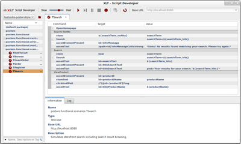 TSearch Demo Script Test Case
{kind=link}
The automatically generated Java code of the TSearch test case after the export is shown below:
/**
* Simulates storefront search including search result browsing.
*/
public class TSearch extends AbstractWebDriverScriptTestCase
{
/**
* Constructor.
*/
public TSearch()
{
super(new XltDriver(true), "http://localhost:8080");
}
/**
* Executes the test.
*
* @throws Throwable if anything went wrong
*/
@Test
public void test() throws Throwable
{
// Open the homepage and delete cookies (module call)
final OpenHomepage _openHomepage = new OpenHomepage();
_openHomepage.execute();
//
// ~~~ Search-NoHits ~~~
//
startAction("Search_NoHits");
// Store a search phrase that does not return any search results
store(resolve("${searchTerm_noHits}"), "searchTerm");
// Execute the search (module call)
final Search _search = new Search();
_search.execute(resolve("${searchTerm_hits}"));
// Assert presence of info maessage element
assertElementPresent("id=infoMessage");
// Validate the 'no results' message
assertText("xpath=id('infoMessage')/div/strong", "*Sorry! No results found matching your search. Please try again.*");
//
// ~~~ Search ~~~
//
startAction("Search");
// Store a search phrase that gives results
store(resolve("${searchTerm_hits}"), "searchTerm");
// Execute the search (module call)
_search.execute(resolve("${searchTerm_hits}"));
// Validate the entered search phrase is still visible in the input
assertText("id=searchText", resolve("${searchTerm_hits}"));
// Validate presence of the search results page headline
assertElementPresent("id=titleSearchText");
// Validate the headline contains the search phrase
assertText("id=titleSearchText", resolve("glob:*Your results for your search: '${searchTerm_hits}'*"));
//
// ~~~ ViewProduct ~~~
//
startAction("ViewProduct");
// Assert presence of one of the product thumbnails
assertElementPresent("id=product0");
// Store the name of the first product
storeText("id=product0Name", "productName");
// Click the product ilnk to open the product detail page
clickAndWait("//*[@id='product0']//img");
// Validate it's the correct product detail page
assertText("id=titleProductName", resolve("${productName}"));
}
Note that the code is structured in blocks embodying the actions. Each action starts with a startAction() command. The other commands are very similar to the commands available in Script Developer. Each Script Developer command has an appropriate counterpart in the XLT Scripting API. The generated test case class extends the abstract class AbstractWebDriverScriptTestCase; it inherits the methods that represent the scripting commands to interact with the page and perform validations.
See package com.xceptance.xlt.api.engine.scripting for more information about the available scripting commands of the XLT Scripting API.
Script Modules
You may have noticed that a Search action in TSearch appears twice, first time with no hits and then again with hits. To prevent implementing the search
related steps twice Script Developer allows to extract parts of the script as a module – a convenient feature that, in the present example, can be easily applied to the Search action.
When exporting the script to Java, XLT generates a class for each of the modules that extends AbstractWebDriverScriptModule and extracts the code to reuse it in the test case. Using the execute() method, the module can be called in the test case after creating an instance of the module class. It also possible to pass parameter to a module.
Modules can embed submodules, that is they can be called by test cases or by other modules. That’s why the module class needs two different constructors, one that takes a test case and another one that takes a module as parameter.
WebDriver API
WebDriver is a tool for automated tests of web applications. It was originally introduced by Google and features a simple and efficient API permitting control of real web browsers, such as Firefox, Internet Explorer, Safari, and the HtmlUnit headless browser.
The XLT framework incorporates the WebDriver API so that external test cases using the WebDriver API can generally run in the XLT framework as well. XLT-based WebDriver tests can’t be executed with a stand-alone WebDriver because the XLT-WebDriver API integrates the concept of action names.
When being exported from Script Developer, the generated Java code originates from the XLT Scripting API, which in turn is built upon WebDriver. When you look at the TSearch example, you may notice that its strictly linear approach is limited. Using the lower-level WebDriver API in combination with the XLT scripting API is a good way to overcome possible limitations.
When you run the TSearch example as functional or load test, your test scenario actually turns out to be somewhat unrealistic since the we open the product details page always for the same product. Randomising the ViewProductDetails action would allow you to browse to different products and select the posters randomly.
The exported code uses an XltDriver to simulate users. Additionally, the WebDriver API lets you easily switch to other WebDrivers to imitate real-world browsers, like Chrome, FirefoxDriver, or Internet Explorer. The XltDriver extends the HtmlUnitDriver implementation of the WebDriver API.
The following code is an example of how to use the WebDriver API to introduce random factors. The WebDriver functionality is refactored into a method allowing it to be reused for random product selection. The example also contains a JUnit4 assertion and shows how you can use standard Java functionality.
The refactored code described above could look like this:
/**
* Simulates storefront search including search result browsing.
*/
public class TSearch extends AbstractWebDriverScriptTestCase
{
/**
* Constructor.
*/
public TSearch()
{
super(new XltDriver(true), "http://localhost:8080");
}
/**
* This method randomly picks one of the web elements that match the given xpath
* It uses the WebDriver API and a JUnit assertion
*/
private WebElement findWebElementsAndPickOne(String xpath)
{
// get all elements that match the given expression
final List<WebElement> articleLinks = getWebDriver().findElements(By.xpath(xpath));
//Make sure there is at least one element; This is a pure JUnit assertion
Assert.assertFalse("No elements found", articleLinks.isEmpty());
// grab one of the elements randomly
WebElement element = articleLinks.get(XltRandom.nextInt(articleLinks.size()));
//return the element
return element;
}
/**
* Executes the test.
*
* @throws Throwable if anything went wrong
*/
@Test
public void test() throws Throwable
{
// Open the homepage and delete cookies (module call)
final OpenHomepage _openHomepage = new OpenHomepage();
_openHomepage.execute();
//
// ~~~ Search-NoHits ~~~
//
startAction("Search_NoHits");
// Store a search phrase that does not return any search results
store(resolve("${searchTerm_noHits}"), "searchTerm");
// Execute the search (module call)
final Search _search = new Search();
_search.execute(resolve("${searchTerm_hits}"));
// Assert presence of info message element
assertElementPresent("id=infoMessage");
// Validate the 'no results' message
assertText("xpath=id('infoMessage')/div/strong", "*Sorry! No results found matching your search. Please try again.*");
//
// ~~~ Search ~~~
//
startAction("Search");
// Store a search phrase that gives results
store(resolve("${searchTerm_hits}"), "searchTerm");
// Execute the search (module call)
_search.execute(resolve("${searchTerm_hits}"));
// Validate the entered search phrase is still visible in the input
assertText("id=searchText", resolve("${searchTerm_hits}"));
// Validate presence of the search results page headline
assertElementPresent("id=titleSearchText");
// Validate the headline contains the search phrase
assertText("id=titleSearchText", resolve("glob:*Your results for your search: '${searchTerm_hits}'*"));
//
// ~~~ ViewProduct ~~~
//
startAction("ViewProduct");
//Find all product links by xpath, pick one randomly and click the link
findWebElementsAndPickOne("id('productOverview')/div/ul[@class='thumbnails']/li/div/a").click();
}
See file <XLT>/doc/apidoc.zip for a full documentation of the XLT framework, including information on the WebDriver support.
XLT Action API
Besides the components described above, the XLT framework supports one more approach for modeling test scenarios in Java code. The test cases and action classes can be implemented in Java from scratch or they may be generated automatically while being exported from Script Developer. This approach is based on special action classes and makes use of the XLT Action API.
To test web-based applications, the XLT Action API relies on the HtmlUnit framework, which also includes the Mozilla Rhino engine for JavaScript support. Web tests are executed by a low-level web browser simulation. Basically, this means that – as in real browsers – a web page is translated into a DOM (Document Object Model) tree. Analysis, validation, and any other access is performed afterwards on this DOM tree construction.
The XLT Action API provides a programming paradigm to translate a test scenario into a unit test. The test scenario is implemented as a test case class which itself executes a sequence of one or more actions.
Test Case and Action Classes
All test case classes should inherit the abstract class AbstractTestCase which supplies some basic features, like logging the test results to disk and easy access to properties.
As a test case models a transaction and as transactions rely on actions, defining the appropriate actions is the first step.
All actions must inherit the abstract class AbstractAction which forces you to implement the three methods execute(), preValidate(), and postValidate(). As mentioned earlier, the preValidate() and postValidate() methods perform validations before and after the execution of that action itself. Therefore, the call sequence of an action generated by the XLT framework is always:
preValidate()execute()postValidate()
This call sequence will be executed exactly once when the instance method run() of an action is called.
Note that the XLT Action API forces you to implement the validation methods and that is the whole purpose of testing: validating data. Therefore, implementing the abstract validation methods in a non-trivial way (that is not leaving them empty) is strongly recommended. Otherwise, you will sacrifice test quality.
Each of the three methods may throw an exception which always indicates a problem. To check if an action can be executed safely, the abstract class AbstractAction provides a method called preValidateSafe(). This method internally calls preValidate() and catches any thrown exception. If no exception is thrown, preValidateSafe() returns true; otherwise it returns false. This helps you determine if the prerequisites are fulfilled to continue the page flow in a certain direction. A simple example is the flow through a catalog with nested categories. As you don’t know the nesting level up-front when you create a dynamic and random test, it might be necessary to call preValidateSafe() before trying to go to the next level of categories.
Note that AbstractAction doesn’t offer any web support. Therefore, any web-based test should inherit the abstract class AbstractHtmlPageAction, which is a specialization of AbstractAction and which does offer support for web testing.
Validation
Assertion
JUnit provides the concept of assertions and XLT uses this concept for all validations. Since XLT doesn’t change JUnit in any way, you can use assertions just as you’re used from JUnit.
Pre-validation
XLT offers two ways of using the preValidate() method. Any exception on the direct path stops the test with an error message. In case you just want to check whether or not a requirement is fulfilled, you can call the preValidate in a safe way (by using preValidateSafe()) so that any exception is caught and no error is reported. Should you accidentally cause a Java exception different to AssertionException, such as NullPointerException or IndexOutOfBoundException, XLT issues a warning because the code might contain a problem from a programming point of view. Errors from the application under test should always come up as assertion failures.
Post-validation
The postValidate() method works similarly to preValidate(). It is used to validate the page just loaded in execute() and ensures that the data matches the expectations. The full set of JUnit assertions is available.
You can’t explicitly call the postValidate() method; the framework does so instead. Additionally, error messages can’t be suppressed. If a page has different outcomes based on random data or states, you have to explicitly handle that in your validation code.
Validators
We strongly encourage you to write individual validation classes for easy reuse. As soon as a certain check has to be done more than once, it is suited for a validator implementation. This simplifies the maintenance of tests and makes them less error-prone because copy-paste causes typical programming errors.
Some common validation routines are already covered by default validators, such as a HTTP response code, HTML end tag, and HTTP content length validation. See package com.xceptance.xlt.api.validators in the API documentation for more information on this topic.
Example
Let’s imagine a poster search test case again to illustrate the XLT Action API. The most important action would be to “search”, that is to fill in the search phrase and then click “Go”, “Search”, or something similar that loads a list of results. The preconditions are the existence of a search input field and of an appropriate button labeled Search or Go. The execute() method should fill in the search phrase and click the button.
After the new page has been loaded, the result should be validated. This validation consists of general validation, performed by validators, and action-specific validation.
The resulting implementation of the search action would then look like this:
/**
* Enter the given search phrase in the site's search bar and submit the form.
*/
public class Search extends AbstractHtmlPageAction
{
/**
* Search phrase.
*/
private final String phrase;
/**
* Search form.
*/
private HtmlForm searchForm;
/**
* Search option ({@link SearchOption#HITS} or {@link SearchOption#NO_HITS} ).
*/
private final SearchOption searchOption;
/**
* Constructor
*
* @param previousAction
* The previously performed action
* @param phrase
* The search phrase
* @param option
* The search option that defines if we expect a hit or a no-hit
*/
public Search(final AbstractHtmlPageAction previousAction, final String phrase, final SearchOption option)
{
super(previousAction, null);
this.phrase = phrase;
searchOption = option;
}
/**
* Validation prior to execution.
* @throws Exception
* if some of the required input elements couldn't be found.
*/
@Override
public void preValidate() throws Exception
{
// Get the current page.
final HtmlPage page = getPreviousAction().getHtmlPage();
Assert.assertNotNull("Failed to get page from previous action.", page);
// Check that the search form is available
Assert.assertTrue("Search form not found.", HtmlPageUtils.isElementPresent(page, "id('search')"));
// Remember the search form
searchForm = HtmlPageUtils.findSingleHtmlElementByID(page, "search");
}
/**
* Executes the search. Primarily this includes the input of the search
* phrase and a click on the proper search button.
* @throws Exception
* if some of the inputs have become invalid or setting the
* value attribute of the search input field has failed.
*/
@Override
protected void execute() throws Exception
{
// Fill the search form with the given phrase
HtmlPageUtils.setInputValue(searchForm, "searchText", phrase);
// Submit the search
loadPageByFormSubmit(searchForm);
}
/**
* Validation after search has become complete.
* @throws Exception
* if no search result block element could be found
*/
@Override
protected void postValidate() throws Exception
{
// Get the result of the action
final HtmlPage page = getHtmlPage();
// Basic checks - see action 'Homepage' for some more details how and when to use these validators
HttpResponseCodeValidator.getInstance().validate(page);
ContentLengthValidator.getInstance().validate(page);
HtmlEndTagValidator.getInstance().validate(page);
HeaderValidator.getInstance().validate(page);
// Check that the desired option result was achieved.
switch (searchOption)
{
case HITS:
Assert.assertNotNull("Expected at least one hit for '" + phrase + "'.",
HtmlPageUtils.findSingleHtmlElementByID(page, "productOverview"));
break;
case NO_HITS:
Assert.assertFalse("Search phrase '" + phrase + "' should result in no hits.",
HtmlPageUtils.isElementPresent(page, "productOverview"));
break;
default:
Assert.fail("Unknown search option.");
break;
}
}
}
Note that the constructor of this class has two parameters. One of them is the search phrase the action has to know about. The other parameter is the previously performed action. To enable a flow, all the actions that will be used in page flows need to provide a constructor with a parameter representing the previous action. Without passing the previous action, each action would be stand-alone and behave as if you had just opened a new web browser. Normally, only the start action does so.
You’ll notice that the postValidate() method uses some of the predefined validators. XLT also offers a StandardValidator performing the most common validations in one go. This includes:
- HTTP response code validation,
- HTML end tag validation,
- content length validation, and
- XHTML validation.
Having the search action at hand, the implementation of a test case using this action is almost done. A very simple test case would be a repeated search for some phrases. These phrases can be stored in a data file and obtained using the XLT data provider mechanism:
public class TSearch extends AbstractTestCase
{
// Container that holds all the search phrases
private static CustomDataProvider phrases = null;
@Before
public void initialize() throws Exception
{
// Data container already initialized?
if(phrases != null) return;
// No. Go for it.
phrases = new CustomDataProvider(
getProperty("searchphrases.filename", "phrases.txt"),
CustomDataProvider.DEFAULT);
}
@Test
public void search() throws Throwable
{
// Start on Homepage.
Startpage start = new Startpage();
start.run();
for (int i = 0; i < XltRandom.nextInt(10); i++)
{
// Take a random search phrase.
String searchPhrase = phrases.getRandomRow(false);
// Search.
Search search = new Search(start,searchPhrase);
search.run();
}
}
}
The example above also demonstrates the use of the XltRandom class offering some convenient randomization features. See the package com.xceptance.xlt.api.util for additional functionality that may help implementing tests.
Each execution of the search action requires an appropriate search phrase obtained from a CustomDataProvider object. This class offers a generic mechanism to handle and provide test data that is stored in a text file. The name of the text file is, along with a Boolean value telling the appropriate parser whether whitespace should be removed, passed to the constructor as parameter. When the class is instantiated, all data is kept in memory, allowing easy and fast access. XLT is shipped with a predefined set of data files containing email addresses, first and last names, street and city names, and so on. This data can be acquired from the GeneralDataProvider class that uses the appropriate text files located in directory <testsuite>/config/data with <testsuite> referring to your test project directory.
Last but not least, the present example illustrates how you can use JUnit4 annotations in the standard manner.
Data-Driven Tests
Sometimes a certain test case needs to be executed not just once but multiple times, each time with a different set of test data. For instance, to check not only the “happy path” but also some border cases, you might want to specify multiple test data sets automatically recognized by the test framework and used to execute the test case once per specified data set. The test case executions are thus independent from each other and each produces a separate result in the test report. This concept can be referred to as data-driven test.
XLT will support data-driven tests for any kind of test case (plain Java and scripts) if you run them as (part of) a functional test using a JUnit test runner. Data-driven tests are neither supported when replaying script test cases in Script Developer nor can they be used during load testing. For load tests, other parameters define how long/often a test will be executed, such as measurement time and arrival rate.
Typically, test data can be classified as constant or variable test data. Constant test data is fixed for all runs of a test case in a data-driven test. It is either hard-coded into the test case or kept separate from the test code in a data file. Variable test data is different for each run of the test case, which is why it is organized as a list of separate data sets. Each data set contains all variable test data needed for exactly one test run. The number of data sets determines the number of test runs.
Where do these data sets come from? For a data-driven test, XLT retrieves test data sets from an additional source, which can be, for example, another data file or a database. To be more specific, XLT accesses a data source via data set providers that implement a uniform interface and return a data set as a simple key/value map.
During test execution, the framework reads the next data set from the configured data set provider, passes it on to the test case instance, and then runs the test. The test instance is responsible for the appropriate application of the test data. This procedure is repeated until all variable data sets have been processed.
Data Set Providers
Built-in Providers
XLT supports three common sources for test data sets out of the box:
XML Files
Data sets can be stored as XML data file with a three-level element structure. XML assigns a single top-level element. The elements on the 2nd level define the data sets, the elements on the 3rd level define the values. A data file with two sets of user data might look like this:
<?xml version="1.0" encoding="utf-8"?>
<data-sets>
<data-set>
<userName>fred</userName>
<password>topsecret</password>
</data-set>
<data-set>
<userName>wilma</userName>
<password>cantremember</password>
</data-set>
</data-sets>
Note that you can name the root element (here: data-sets) and the 2nd-level elements (here: data-set) as you like since only the structure matters. However, the tag names on the 3rd level always define the parameter names, so these tag names must be used consistently across all data sets.
CSV Files
Data sets can also be stored as CSV data files, organized as lines of separated values. The values in the 1st line define the parameter names, the values of all following lines define the values of each data set. The previous example would thus look like this:
userName,password
fred,topsecret
wilma,cantremember
You can configure the separator used in the CSV file (typically comma or semicolon) with an XLT property. For example:
## Sets the field separator character for CSV files (defaults to ",").
com.xceptance.xlt.data.dataSetProviders.csv.separator = ;
Note that there’s no way to specify character encoding information in a CSV file. By default, XLT reads CSV files using UTF-8. To override this default, use the following property:
com.xceptance.xlt.data.dataSetProviders.csv.encoding = ISO-8859-1
JDBC Data Sources
There is also a “data file” for JDBC data sources, yet it doesn’t directly specify the data sets. Instead, it contains an SQL query that retrieves the data sets when being executed. A query file for user data sets may look like this:
select login as "userName", password as "password" from users;
Each row returned from the database is converted to one data set. The alias names in the query define the resulting parameter names.
Note that the SQL data set provider needs additional setup before it can be used. First, an appropriate JDBC driver has to be present on the class path of your test suite. Copy the respective JAR file to <testsuite>/lib and you are done. Second, configure the URL and credentials of your JDBC database connection that should be used when executing the query:
com.xceptance.xlt.data.dataSetProviders.jdbc.url = jdbc:h2:tcp://localhost/test
com.xceptance.xlt.data.dataSetProviders.jdbc.userName = sa
com.xceptance.xlt.data.dataSetProviders.jdbc.password = YourPassword
Custom Data Set Providers
If the built-in data set providers are not sufficient, you can write your own. Your custom data set provider must implement the general DataSetProvider interface:
public interface DataSetProvider
{
public List<Map<String, String>> getAllDataSets(File dataFile) throws DataSetProviderException;
}
To register your own data provider implementation with XLT, add a property to your configuration:
com.xceptance.xlt.data.dataSetProviders.foo = com.yourcompany.FooDataSetProvider
This tells XLT to use the class com.yourcompany.FooDataSetProvider for data files with the extension .foo. Note that this way you can also override the built-in providers.
Test Data Set File Lookup
As outlined above, there is always some kind of “data” file involved. Typically, these data files are named after the test case (the script name for script-based test cases or the simple class name for Java-based test cases). For instance, if a test script is named TSearch, then the XLT framework will automatically look for files like TSearch_datasets.<ext>, where <ext> is one of the file extensions for which a data set provider has been registered. Accordingly, the resulting list of file name candidates is: TSearch_datasets.csv, TSearch_datasets.xml, TSearch_datasets.sql (and TSearch_datasets.foo).
The lookup order of data files is defined as:
.csv.xml.sql- (
.foo)
However, test data files can also have arbitrary names or paths. If so, you have to configure which data file belongs to which test case. Map the data set file name (or path) to the test case’s Java class using the following notation:
<class_name>.dataSetFile = <data_set_file_path>
For example:
com.mycompany.xlt.tests.MyTest1.dataSetsFile = Test1.xml
com.mycompany.xlt.tests.MyTest2.dataSetsFile = ./subdir/Test2.csv
com.mycompany.xlt.tests.MyTest3.dataSetsFile = c:/tmp/Test3.sql
Keep in mind that all property files are Java-style property files. Thus, when you use backslashes on Windows, you have to quote it with another backslash, for instance
c:\\tmp\\Test3.sql.
Regardless of the test data file being given explicitly or deriving from the test case, the XLT framework looks for such a file in several locations:
- In the current directory (typically
<testsuite>), - in the directory specified by the property
com.xceptance.xlt.data.dataSets.dir[this property is set to./config/data)but commented out by default; remove the hash character when you want to use this location], - in the default script test case directory
<testsuite>/scripts(for script-based tests only), and - in the class path (for Java-based tests only).
As soon as a suitable file is found, the lookup stops.
Note that if the test case has a qualified name, that is if it has a package part, the data set file also needs to have that package to be found. If there is a test case named your.package.TAuthor (be it a script or a Java test case), the framework will therefore search the aforementioned directories for a corresponding data set file using the file path <dir>/your/package/TAuthor_datasets.<ext> or, alternatively, the file name <dir>/your.package.TAuthor_datasets.<ext>.
Accessing Data From A Test Data Set In Your Test Case
The XLT framework makes the current test data set available to your test case. For script test cases, the key/value pairs from the test data set are automatically added to the internal pool of variables and can be accessed in your scripts using the ${varName} syntax.
If you prefer using Java as your scripting language, call the method getTestDataSet() of the super class AbstractTestCase in your test code to access the current test data set as a map of strings representing the key/value pairs. You are responsible to pass the respective values to the pieces of code where they are needed.
Executing Data-Driven Tests via JUnit
Running data-driven tests via JUnit isn’t in any different from running normal test cases. You simply add the test cases in question (directly or indirectly) to the list of classes to be run by JUnit. If XLT finds a data set file for a certain test case, it will be passed on to the right data set provider, which returns all data sets. The test case will then be executed once for each data set. This works because all test cases extend the class AbstractTestCase, and this class has all the magic built-in. The same is true for the generic script test case suite class ScriptTestCaseSuite.
See the demo test suite in directory <xlt>/samples/testsuite-posters for an example of how to configure Ant’s junit task to run XLT test cases.
If you want to temporarily disable a data-driven test and let the test cases run only once in spite of data set files, configure the following setting in default.properties:
com.xceptance.xlt.data.dataDrivenTests.enabled = false
That being the case, be aware that your test case must provide some default test data.
Demo Application and Test Suite
XLT ships with a real-world demo web application (Posters) as the system under test and a test suite to test this application. Both can be found in the directory <XLT>/samples.
Running Posters
Posters is a shop software written in Java. Being small and easy to deploy, it is well suited to demonstrate testing with XLT.
To start the demo application, use the following command:
cd <XLT>/samples/app-server/bin
./start.sh
Windows users have to use the appropriate
.cmdfile located in the same directory by enteringstart.cmdinto the command prompt.
This starts an application server containing the Posters application. To access it, open a browser with this URL: http://localhost:8080/posters/. Please take some time to become familiar with Posters.
The Posters Test Suite
XLT lets you create test cases using different approaches, that is test cases can be written directly in Java with your favourite IDE or they can be recorded as simple scripts with Script Developer. A test suite may contain test cases created with either approach, and so does the Posters test suite. Even though the number of test scenarios is limited here, our sample project perfectly demonstrates the differences between the two approaches, and – for Java-based test cases – what APIs are available to implement them.
The Directory Structure of the Test Suite
An XLT test project has a simple directory structure. The following directories have to exist in order for everything to run smoothly:
<project>/classescontains the compiled code of your project. Normally, your IDE will do the job and place the files there. You can optionally build a JAR and place it in the<project>/libdirectory.
<project>/configcontains all the properties files used to configure the project.
- There can be an optional
<project>/config/datadirectory where you can place any data file you need for the test, such as address data, logins, and so on. All files are uploaded to the agent before a load test takes place. The programming API provides easy access to this data.
- You can place all your required libraries in
<project>/lib. The content is uploaded to the runtime agent and included in the class path. For your local development within an IDE, you have to manually add the libraries to the class path of your project.
- The
<project>/srcdirectory holds the Java-based test cases of your project. This code is compiled into classes by your IDE or build environment. It’s organized in main packages, typically one package for test cases, one for actions, and one for utility classes. Make sure the compiled classes end up inproject/classesbecause this is the directory XLT configures as class path for your test.
- The
<project>/scriptsdirectory contains test scenarios as script test cases. Again, the code is organized in main packages, one package for test cases, a.k.a. scenarios, and one for reusable modules.
Understanding the Test Scenarios
Since Posters is a shop software, our test scenarios cover the typical use of an online shop:
- Visitor: A visitor arrives on the homepage, and that’s it.
- Browse: The visitor arrives on the homepage, then starts browsing some main- and sub-categories and views a random product detail page.
- Search: The visitor arrives on the homepage and enters one or more search phrases, then opens the product detail page for one of the search result items.
- Register: A visitor creates an account.
- Add To Cart: Browse extended by adding the shown product to the cart and viewing the cart.
- Guest Checkout: Add To Cart with a subsequent checkout process but without submitting the order.
- Checkout: Add To Cart with a subsequent checkout process as registered user and, again, without submitting the order.
- Guest Order: Guest Checkout with a completed checkout including submission of the order.
- Order: Checkout including submission of the order.
Note that the scenarios share some common steps, thus allowing a clear demonstration of how to reuse code across test cases.
Running Script Test Cases in Firefox
To run the script test cases in Firefox, import the test project into Script Developer first.
Importing the Posters Test Suite into Script Developer
- Open Script Developer.
- Click the folder-like toolbar button and choose ‘Import...’ to open a file system explorer window.
- Navigate to
<XLT>/samples, marktestsuite-posters, and then click Select Folder.
The tree view on the left-hand side displays all available script test cases and modules.
Executing Script Test Cases in Script Developer
Open Script Developer. All script test cases and modules are listed in the script explorer. Double-click the TSearch test case to open it and see the list of its commands and called modules inside the work area. Click the Play icon to start replaying the script in Firefox. Alternatively, right-click on the test case in the tree view and choose Run from the context menu.
Running Java Test Cases in Headless Mode
Java-based test cases are executed in headless mode, that is in a simulated browser that doesn’t perform page rendering. Script test cases may also be run in this mode via Java wrapper classes. Before you can do so, you need to import the sample test suite into your Java IDE.
Importing the Posters Test Suite into Eclipse
After starting Eclipse and creating a workspace, do the following:
- Open the import dialog (File > Import > General > Existing Project Into Workspace).
- Select the root directory to search in and point to
<XLT>/samples. - Select the test suite project
testsuite-postersfrom the list. - Click Finish.
Since the imported project has dependencies on the libraries of XLT, you have to adjust these dependencies.
- Right-click on your project and select Properties.
- Click Java Build Path.
- Select the Libraries tab, then click Add External JARs.
- Go to
<XLT>/liband select all JARs. Then click Open. - A list of all these JARs is displayed. Close the dialog with OK.
Eclipse will rebuild the project and shouldn’t report any build problems if configured properly.
Users of other IDEs have to carry out similar steps.
Executing Java Test Cases in Eclipse
Any Java test case can be directly run in Eclipse in headless browser mode. Go to package com.xceptance.xlt.samples.tests, select the test case class (e.g. TSearch), and run it as JUnit test via the Eclipse class file context menu.
Writing Web Tests
This chapter will guide you through the essential steps when you want to write web tests using XLT. It provides useful information that help you get started and make the right decisions on your test suite.
Feel encouraged to carefully study both the approach and the code illustrated in the demo test suite. As all web tests are similar in structure, you will soon get a feeling for how to write your own tests. Thus, the sample test suite may serve as a template for your own test projects.
Creating a New Test Suite
The required directory structure of XLT test suites is shown below. Note that it can’t be changed:
--+ <testsuite>
|--- classes
|--+ config
| `--- data
|--- lib
|--- results
|--- scripts
`--- src
But you don’t need to create the mandatory directory structure and configuration files from scratch. XLT ships with an empty test suite project, which can be used as a template for your own projects. This template project is located in <xlt>/samples/testsuite-template. Simply copy the complete testsuite-template directory to a location of your choice and rename it, for example c:\test-suites\testsuite-MySite. This directory is referred to as <testsuite> throughout the next sections.
It is recommended to store your test suite in a directory that is not a subdirectory of your XLT installation. This facilitates updating to newer XLT versions because it reduces the risk of overwriting your test cases during an update.
Now import your project into Eclipse and change the displayed project name testsuite_template to testsuite_MySite via Eclipse’s refactoring functionality.
If you prefer starting with a test suite that already contains working sample test cases, you may as well use the Posters demo project in
<xlt>/samples/testsuite-postersas the template for your project.
Choosing a Suitable Approach
As described in XLT Framework, you can make use of different approaches when writing your own test cases. The following questions will help you decide which approach and which API best fits your web test project:
- What is the goal of your test suite?
- Pure functional test suite
- Functional test suite with some basic load testing
- Load test project
- Time-critical load test project with heavy load
- How good are your programming skills?
- Non-programmer
- Basic programming skills
- Good Java programming skills
- Do you have to simulate different browsers in a functional test suite?
- What are the available resources to generate enough load during a load test?
- Do you need random factors in your test cases and do you have to handle conditions?
Stand-Alone Script Developer Test Suite
Recording your tests with Script Developer and continuing without using any Java code will be a good option if...
- you need a functional test suite you want to run from time to time,
- load testing is an interesting option for the future,
- you have no or just basic Java programming skills,
- it’s sufficient to use Firefox and if there’s no need to simulate other browsers,
- you’re okay with exactly repeating test cases and if you don’t have to handle conditions,
- you don’t need any advanced random factors or data-driven tests.
Script Developer lets you record and manually replay the test cases. There’s no need to write any Java code or to use any tool or IDE other than Script Developer.
Executing Plain Script Test Cases Outside Script Developer
When you need to run the tests outside Script Developer, e.g. in Eclipse or during a build process, Script Developer is the best to start with. Simply enable generating Java wrapper classes for the script test cases. With these automatically generated wrapper classes, you can also run a load test – as long as you’re fine with the limitations listed above. Again, you don’t need to write any Java code. Everything is based on Script Developer commands and Firefox context menu validations.
Note that executing script test cases outside Script Developer also allows you to run data-driven tests and to simulate different browsers.
Script Developer Export, XLT Scripting API and WebDriver
If you need to overcome the limitations of script test cases by switching to Java as the programming language, Script Developer again is the best point to start from because it easily lets you create prototype scripts you can export to Java. This results in a test case class that uses the XLT Scripting API and that can be expanded with the WebDriver API. Another option is an export with the resulting Java code being based on the XLT Action API. The TBlogVisitor test case is a good example for an export resulting in the XLT Scripting API. This approach will be a good option if...
- you want to benefit from the advantages of Script Developer,
- you want to overcome the limitations imposed by Script Developer,
- you have basic or good Java programming skills,
- you need to simulate different browsers for a functional test,
- data-driven tests are required,
- you want to handle conditions and execution branches in your test cases,
- the planned load testing profile is not causing any resource and timing problems.
WebDriver from Scratch
Within the XLT context, you can also directly resort to the WebDriver API without using the XLT Scripting API abstraction level. That’s a common approach for advanced users and will be a good option if...
- the web test project meets the requirements listed in the section above,
- you’re happy writing your test cases from scratch without any recording feature,
- you have good Java programming skills.
XLT Action API and HtmlUnit
Compared to a low-level API, high-level APIs have a certain overhead that may affect the test performance. In some situations it makes sense to skip the high-level APIs listed above and program the test using HtmlUnit, for instance, when running load tests for which heavy network traffic is required. If so, the XLT Action API serves as a framework that supports the action concept and validations as well as the structuring of your code. You don’t even need to waive the Script Developer recording feature since exporting the script test cases to Java lets you generate code based on the XLT Action API. The XLT Action API will be a good option if...
- your test suite is meant to work as a high performance load test,
- you have to carefully handle the available resources to generate enough load,
- you need full control over requests and responses on the low-level HtmlUnit API,
- it’s sufficient to use a headless browser and if there’s no need to simulate other browsers.
If you decide to use the XLT Action API as the surrounding framework, you are bound to use the HtmlUnit API to code your tests. Note that this is not true for the other way around; thus, if you use one of the other approaches as the surrounding framework, such as WebDriver, you can still go down to the HtmlUnit level for sections of your test cases.
XLT Lightweight Mode
You should choose XLT Lightweight Mode to code your test cases if...
- the XLT Action API and HtmlUnit approach is still not sufficient to meet your needs regarding resources consumption and test execution speed.
XLT provides the Lightweight Mode to code highest performance test cases. This maximum performance can be reached by omitting the creation of a DOM tree and JavaScript. Responses are available as HTML source and test cases have to be coded on this level. Some regular expression knowledge is required to identify elements and perform validations. The test cases also become more complex and you have to expect an increased programming effort.
Structuring Your Test Suite and Test Cases
Structuring in Script Developer
Naming and Tags
The easiest way for you to structure your test suite is to name the test cases according to a common naming convention. It’s common to start the name with a capitalized T and continue with the so-called “camel-case” where each element’s initial letter is capitalized within the compound word. A best-practice example is to specify the test case’s purpose by compounding single elements, for instance TCartCheckoutCancel, TCartOrder, and so on.
Script Developer allows you to tag test cases and modules. Each test case can have several tags. Tags help to group several test cases and make them easier to find. The list of available test cases can be filtered by tag and name.
Script Packages
Script Developer lets you define packages to structure your test cases and modules in the script explorer. You can use this feature to bundle test cases for similar purposes. The packages may be created having a hierarchical structure, but they are always displayed in flat representation (e.g. testcases.cart.order).
Script Modules to Structure Test Cases
To structure a single script test case, you should use modules. A module is a sequence of script commands. It can be reused in several test cases and call other modules, that is they can be nested. Using modules prevents you from writing or recording the same sequence of commands over and over again. It also helps to keep the test case clear and comprehensive because a module call can be folded to hide the contained commands and display the module’s name only.
Action Commands
While recording, Script Developer automatically inserts so-called Actions. You can also insert a new action manually at any position of your test case. Even though actions look similar to comments or other structuring elements, they are in fact not meant to visually structure your scripts. See the action-related notes in the Script Developer chapter for details.
Java Code Structuring
If you decide to choose an approach that requires to write your test cases in Java, you will have the same options to structure your code as in any other Java program or software development project. Feel free to extract sequences of your test case code to methods, to create Java classes, or to use packages to structure your test suite.
Package Suggestions
The <testsuite>/src directory contains subdirectories with the structure of your Java packages in the standard manner. Your source code should be organized in main packages. Typically, one individual package should be created for test cases, for actions, for flows, for validators, and for utility classes. The resulting directory structure might look like this:
<testsuite>/src/.../actions(only when XLT Action API is used)<testsuite>/src/.../flow<testsuite>/src/.../util<testsuite>/src/.../validators<testsuite>/src/.../tests
If you plan to use more than one of the approaches provided by XLT, it’s recommended to create packages for each of its test cases, which generates up to three additional subdirectories. Your packages could be named as follows:
<testsuite>/src/.../tests/actionbased<testsuite>/src/.../tests/scripting<testsuite>/src/.../tests/webdriver
Besides these options, each approach also introduces XLT-specific framework conditions structuring your test suite and test cases. In particular, each test case is necessarily implemented as a Java class extending an XLT test case class, which is approach-specific and contains one method annotated with @Test. See the following sections for such specific framework conditions and further ways of structuring.
Structuring Scripting API and WebDriver Test Cases
When you export a script test case from Script Developer to Java using the XLT Scripting API, it will be converted into a test case class extending AbstractWebDriverScriptTestCase. Modules are converted to classes extending AbstractWebDriverModule. The test case class and all module classes are created automatically and you generally don’t have to deal with their creation.
If you’ve decided to write the test cases from scratch using the WebDriver API, your test case class should extend AbstractTestCase. Like all test case classes, it can have several methods, but exactly one method has to be annotated with @Test. This class usually contains the statements and lines of code defining the basic structure of the test case, that is the page flow.
For both approaches, XLT Scripting API and WebDriver API, it’s recommended to structure the page flow by actions. This is especially important if you plan to run a load test because the load test reports are designed for analysis and evaluation based on XLT actions.
The XLT Scripting API offers a very simple command to start a new action: startAction("MyNewAction"). When solely using the WebDriver API, the following line of code starts a new action: Session.getCurrent().setWebDriverActionName("MyNewAction").
Again, be aware that actions should only be used to represent the page flow. See the basic concepts of the XLT framework for details.
Structuring XLT Action-Based Test Cases
Test cases based on the XLT Action API are closely related to actions. As in all other approaches, an action interacts with the current page and, as a result, loads the next page. The latter is associated with this action and becomes the current page for the next action in the test case. In contrast to previous approaches, however, an action is now implemented as a Java class extending AbstractHtmlPageAction. These XLT action classes can be seen as reusable building blocks to write your test case and define the page flow.
See XLT Action API for more information on how the API forces you to structure code and validations by implementing methods.
Creating a Flow
When creating XLT test cases, you sometimes might want to reuse blocks of code containing more than one single action. Just like for modules, you can create your own class with one method that combines a sequence of several XLT actions as a flow. Different test cases can call this method now to reuse the flow. This is a concept for code structuring you can implement if needed, yet explicit support is neither available in the XLT framework nor necessary when you manually create a flow.
Flows will be created automatically only if you export script modules containing more than one action to the XLT Action API.
Test Suite and Framework Configuration
When solely using Script Developer for recording/writing and replaying script test cases, the following section doesn’t apply. Yet a configuration of the test suite and framework by changing properties files may be necessary if you write or run test cases from inside Eclipse as JUnit tests or if you want to perform load tests.
To configure the test environment and the test suite, XLT uses Java properties files. The basic characteristics and syntax of this format are also valid for the XLT properties files.
When reading the properties, XLT distinguishes between load test mode and development mode. As its name implies, the load test mode is active when test cases are executed as load tests by the XLT master controller/agent controller. When test cases are executed as JUnit tests in Eclipse or any other JUnit test runner, they run in development mode. Even though the development mode is mainly used for test case development, it will also be active if your test suite is meant to perform an automated functional test manually triggered from time to time or integrated in a build process.
XLT makes use of a hierarchical file system so that properties can be distributed to several files with different priorities. Properties from different files complement each other. Furthermore, properties from a file with higher priority can overwrite identical properties from a file with lower priority. This mechanism allows general default values to be specialized for different test run scenarios or projects. It’s also possible to prepare several configurations in different files and activate one of these configurations by switching between the files.
All properties are read from the <testsuite>/config/ directory. The existing properties files are listed below, sorted by priority from lowest to highest. See the following sections for details.
- default.properties: default configuration of the XLT test framework
- project.properties: configuration of your test project
- test.properties: configuration of a specific load test profile
- dev.properties: properties only read in development mode
- dev-log4j.properties: log4j logger settings used in development mode
- log4j.properties: log4j logger settings used in load test mode
- jvmargs.cfg: JVM setting for the agents and therefore only used in load test mode
Default Framework Configuration – default.properties
The properties in default.properties represent the general XLT framework settings that are all set to their respective default value. They are neither specific for a single test project nor for a single test run.
If you need to change one of these properties, copy it to the project.properties or test.properties and change the value there to overwrite the value in default.properties. Each of the properties in default.properties can be overridden since they have the lowest priority.
When updating XLT to a newer version, it is recommended you update the default.properties file as well because newly available properties can be found there, along with their default value and description.
Even though this file isn’t read-only, it should be treated as such. You can use it as documentation of available XLT framework properties that also defines the default values for these properties.
The properties listed in default.properties are separated into the following groups (look into the file itself for details):
- HTTP/Protocol Settings
- Browser Emulation Settings
- JavaScript Settings
- CSS Settings
- Test Data Management Settings
- Result Settings
- Test Execution Settings
- Script Engine Settings
- Miscellaneous Settings
Test Project Configuration – project.properties
The file project.properties contains project-specific settings. The first and most important property is the reference to test.properties that should be applied (e.g. com.xceptance.xlt.testPropertiesFile = test-1.properties). Changing the value for this property, you can easily switch between different load test profiles configurations.
By default, the file stores the test case mapping that maps the test case class onto a load test name. The load test name will be referenced later in the load test configuration.
It’s also the best place for all your test case-specific custom properties, such as URLs, credentials, search phrases, or any other data you want to extract from your test cases as properties. See Demo test suite posters for examples on how to use properties in test cases.
Load Test Profile Configuration – test.properties
The settings required to configure a particular load test profile are collected in a separate file. See Load tests or the properties file itself for details of available load test settings.
The default name of this file is test.properties. However, it’s variable and several files with different load test profile configurations may exist. The one file applied for a test run is referenced by a property in project.properties mentioned above.
Development Environment Configuration – dev.properties
The file dev.properties contains development mode settings. Use this file to modify the configuration so that it suits your needs during test case development, that is when you create and debug test cases from within your IDE.
It’s read in development mode only, but not during load testing. For development mode, the values in this file have highest priority. Any setting defined here will overwrite the corresponding setting from the other properties files: “default.properties”, “project.properties”, and the test run-specific properties file, e.g. “test.properties”.
A typical example for differing development settings is com.xceptance.xlt.loadStaticContent = true to enable loading images and other static content in development mode for debugging. The default value ( =false ) for this property is switching off loading static content to save resources during load testing.
If the default values suffice as development settings for your test suite, dev.properties can also be empty.
Including Additional Property Files
When dealing with different test environments, different load profiles, and/or different test data at the same time, managing different combinations of configuration settings can be challenging. To make this easier and less error-prone, properties can be included as a set. This allows to:
- predefine the configuration of certain aspects with certain values in separate files, and
- reuse and combine the predefined settings as needed with a single statement.
To this end, the files default.properties, project.properties, test.properties (no matter if it’s been renamed using com.xceptance.xlt.testPropertiesFile), and dev.properties can include further property files. Each of these additional property files has to be placed either directly in the config folder or in one of its sub-directories. Furthermore, the name of all these files must end with .properties. Any included file may also define includes itself.
How to Include Other Properties Files
You can include another property file by adding the special include property
com.xceptance.xlt.propertiesInclude.<index> = <relativePathToPropFile>
where <index> denotes an integer number. The value of the include property is the relative path to the file to include, starting from the directory in which the current file is located. You can also include all properties files in a certain directory at once by specifying the relative path to that directory:
com.xceptance.xlt.propertiesInclude.<index> = <relativePathToDir>
In both cases, the relative path may also go upwards using “..” as long as you don’t leave the config directory of the test suite.
Include properties are treated like normal properties. Thus, if there are two include properties having an identical index, only one of them will be applied.
Processing Order of (Included) Property Files
default.properties, project.properties, test.properties, and dev.properties form a hierarchy. So the processing order is as follows:
default.properties, followed by its includesproject.properties, followed by its includestest.properties(or any other test-run-specific properties file), followed by its includesdev.properties, followed by its includes (in development mode only)
Includes will be resolved according to these rules:
- Each property include will be processed recursively in depth-first mode.
- If the include target is a directory, the properties files contained in that directory are processed in alphabetical order.
- If there’s more than one property include in a file, they will be processed in ascending order sorted by their index.
During that process, properties read in later will overwrite already existing settings.
Example
Assume the system under test is deployed to different environments, such as development, live, and pre-live. Each environment requires a different host in the start URL and different access credentials. Furthermore, different load profiles are required for certain types of load tests. Now assume the following directory layout in the test suite:
--+ <testsuite>
|--- classes
|--+ config
| |--- data
| |--- effectiveSettings
| |--+ environments
| | |--- development.properties
| | |--- live.properties
| | |--- pre-live.properties
| | `--- test.properties
| |--+ loadProfiles
| | |--- smallLoad.properties
| | |--- halfLoad.properties
| | `--- fullLoad.properties
| |--- default.properties
| |--- project.properties
| `--- test.properties
|--- lib
|--- results
|--- scripts
`--- src
As you can see, the load tester has prepared a property set for each environment and each load profile under the config directory. With these predefined property files, you can easily mix and match the environments and the load profiles as needed. For example, add/modify the following lines to your test.properties to apply the full target load to the pre-live environment:
com.xceptance.xlt.propertiesInclude.1 = environments/pre-live.properties
com.xceptance.xlt.propertiesInclude.2 = loadProfiles/fullLoad.properties
Alternatively, you may also define a certain directory to be always included:
com.xceptance.xlt.propertiesInclude.1 = effectiveSettings
To apply a certain combination of settings, simply empty this directory first and copy the respective predefined property files to this directory (pre-live.properties and fullLoad.properties, for example).
Additional Configuration Files
In addition to the files described above, you can find three other files in <testsuite>/config/:
- dev-log4j.properties: log4j logger settings used in development mode
- log4j.properties: log4j logger settings used in load test mode
- jvmargs.cfg: JVM settings for the agents and therefore only used in load test mode, e.g. settings for Java garbage collector tuning
Also see Apache Log4j API Docs for more information on log4j settings.
Property Replacements
In all XLT properties files, you can work with property replacements based on a ${} syntax. You can define a property and then assign a value to another property by referring to the first property.
This is especially convenient for project.properties where properties are often defined for each test case to gain flexibility, but where, for example, the login data is identical for all test cases by default.
username = MyUsername
password = MySecretPassword
com.xceptance.xlt.samples.tests.TSearch.username = ${username}
com.xceptance.xlt.samples.tests.TSearch.password = ${password}
com.xceptance.xlt.samples.tests.webdriver.TSearch.username = ${username}
com.xceptance.xlt.samples.tests.webdriver.TSearch.password = ${password}
Integrating XLT
To better support test projects using dependency management systems like Maven or Ivy, Xceptance offers a public repository hosting all XLT releases, including their corresponding POM files. This facilitates updating the XLT version used in test projects. See below for examples on how to configure your test project to use the Xceptance repository.
When configuring your test project to use a newer XLT version, do not forget to update XLT on your load machines as well. The version you’ve used to develop your test scripts must match the execution version of your load test environment.
Integration into Maven
To integrate XLT into your Maven project, copy and paste the following into your pom.xml file:
<repositories>
<!-- Declare Xceptance repository that hosts the XLT artifacts -->
<repository>
<id>xceptance-releases</id>
<url>https://lab.xceptance.de/nexus/content/repositories/releases/</url>
</repository>
</repositories>
...
<dependencies>
...
<!-- Declare XLT dependency -->
<dependency>
<groupId>com.xceptance</groupId>
<artifactId>xlt</artifactId>
<version>4.3.0</version>
</dependency>
...
</dependencies>
Integration into Ivy
To integrate XLT into your Ivy project, follow these steps:
- Declare the XLT repository as Maven-compatible resolver in your
ivysettings.xmlfile. - Tell Ivy that your project depends on the artifact
xltof groupcom.xceptance. This is usually done in yourivy.xmlfile.
ivysettings.xml
<ivysettings>
<settings defaultResolver="resolver-chain" />
<resolvers>
<chain name="resolver-chain">
<filesystem name="local">
<artifact pattern="${ivy.default.ivy.user.dir}/.ivy/local/[artifact]-[revision](-[classifier]).[ext]" />
</filesystem>
<!-- Declare Xceptance repository that hosts the XLT artifacts -->
<ibiblio name="xceptance-releases" root="https://lab.xceptance.de/nexus/content/repositories/releases" m2compatible="true"/>
</chain>
</resolvers>
<conflict-managers>
<compatible-cm/>
</conflict-managers>
</ivysettings>
ivy.xml
<dependencies>
...
<!-- Declare XLT dependency -->
<dependency org="com.xceptance" name="xlt" rev="4.3.0" />
...
</dependencies>
Load and Performance Testing
Overview
Load Models
A load model defines the attributes you may influence to reach a specific load and performance behavior. XLT supports two load models:
- a user count model and
- an arrival rate model.
Both have different characteristics and use cases as illustrated below.
User Count Model
The user count model is a static and non-feedback-based load model.
When you use it, the load is determined by the number of concurrent users. When you configure a load of 10 users, for instance, XLT runs 10 threads repeatedly executing this scenario. At any given time during the test, the target system has to handle 10 concurrent users, no more, no less. The number of executions (transactions) that can be achieved during a certain period of time depends on the time the target system needs to respond.
This model is suited best for:
- a simple base line test (single-user test) to assess the base performance of the system under almost no load,
- a real load or performance test to assess the performance under a high but predictable load,
- a test that should be easily repeatable and whose load factor is not influenced by the system under test.
Arrival Rate Model
The arrival rate model is a feedback-based load model.
When you use it, the target number of transactions per hour determines the load generation. For an arrival rate of 1,000 transactions per hour, XLT runs the respective scenario 1,000 times, equally distributed across a period of one hour. XLT uses as many concurrent users as necessary to fulfill the given arrival rate but no more than specified. Thus, if the time needed for a transaction is very short, only one user might suffice; if a transaction takes longer, the number of concurrent users will rise.
The number of concurrent users is not static and influenced by the response time. If the response time temporarily increases, for example due to a server-side background job, the user count may increase as well. As soon as the response times improve, the number of concurrent users will automatically decrease. This way, the generated load is somewhat unpredictable, at least in terms of concurrency.
The relationship between response times and concurrent users can lead to situations where more users cause more load and thus longer response times. Even more users are now required to run, which eventually causes the server to be overloaded. Even though this behavior appears pretty aggressive, it’s more realistic. Compare it to a real-world situation where a lot of people are waiting at the check-out counter at the end of a store, but customers are still coming in because they don’t know that people are waiting already. Or transferred to the online world: when you visit an online presence, you won’t know the system behaves poorly until you start acting.
Even though the number of concurrent users is rather a result than an input value for this load model, XLT requires you to specify a user count. This number is used to impose an upper limit to the number of concurrent users, which may help you to restrict the total load on the system if you want to avoid a total overload resulting from the feedback loop.
The arrival rate load model is suited best if the load test is meant to prove that a system is in fact able to handle a certain number of transactions per hour. Since this is the primary purpose of load and performance testing, this model is the best choice for most of your test tasks.
Load Profiles
While the load model defines what you can modify to achieve a certain load factor, the load profiles define how you apply these values over a period of time. XLT supports three different load profiles:
- static,
- ramp-up, and
- variable load.
See below for their detailed explanation.
Static Load Profile
The load parameter remains unchanged during the test. This is the simplest profile. Note that the target systems must be able to handle the full load right from the beginning.
Ramp-up Load Profile
The load parameter is steadily increased. This allows the target system to warm up before the full load hits the system, for example to compile and optimize code or to fill caches.
The ramp-up behavior of the load parameter can be controlled by the following settings:
- initial value: the load parameter value to start with,
- target value: the final load parameter as soon as the ramp-up period has finished,
- step size: the increment added to the load parameter after each ramp-up step,
- ramp-up period: the length of the ramp-up phase,
- steady period: the period to keep the current parameter value until the next ramp-up step
The steady period and the ramp-up period settings are mutually exclusive.
Use the steady period if you want to keep the load at a certain level for a defined time, no matter how long the total ramp-up phase will be. Use the ramp-up period if you want to finish the ramp-up process after a certain amount of time, no matter how long the resulting steady phases will be.
If an arrival rate is defined, the ramp-up parameters will be applied to the arrival rate. In case there’s no such definition, they will be applied to the user count.
Variable Load Profile
The variable load profile allows full control and lets you vary the load parameter freely during the test. Thus, the load may not only be constantly increased (compare ramp-up), but it can also be increased and decreased at any time.
The variable profile comes in handy when you want to combine different load levels within one test run, for example a test where phases with regular load alternate with peaks of much higher load. You can also imagine a test that models the load profile of a typical 24 hour day, maybe squeezed into a shorter period of time for a faster test turn-around.
To define how the load parameter should vary over time, you need to specify a load function. You do so by defining a sequence of time/value pairs, each denoting a point in time when the slope of the load function changes. When you connect the dots by a straight line, the final shape of the load function evolves.
Multiple time/value pairs can be specified by separating them using one or more spaces, commas, semi-colons, or tab characters. The time part can be given in all formats supported for time periods.
Imagine the following load function:
0/10, 60m/10, 60m/20, 70m/5
This sequence of time/value pairs defines a function that keeps the load parameter constant at 10 for an hour, doubles it to 20 in an instant, then immediately starts decreasing it to 5 throughout the next ten minutes, and eventually keeps it at 5 for the remaining test.
Load /\
|
20 + *
| **
| * *
| * *
10 +************************** *
| *
5 + **************************
|
+-------------------------+-----+--------------------------->
0 60 70 Time
Note that the time/value pairs must be sorted by their time in ascending order. You can also specify two pairs for a certain time span, which is useful when you want the load parameter to change immediately. If no pair is given for time 0, a pair “0/1” will be inserted automatically (implicitly causing a ramp-up behavior). Finally, if the load test runs longer than the last pair, the last known load parameter value will be kept stable.
Load Test Phases
The execution of a test scenario during a load test can be divided into different phases: the initial delay, the warm-up period, the measurement period, and the shutdown period.
The initial delay is required only if you don’t want the test scenario to run right from the beginning of the load test, which is useful if this scenario depends on the results created by another test scenario. The initial delay is optional.
To minimize discrepancies that could be caused by applications and other systems starting up and not yet operating at an optimal level, you can define a warm-up period as the time given before any measurements are taken. The warm-up period is optional. Keep in mind that it creates a period of time during which you don’t have any insights into your test. It is recommended to omit a warm-up period and modify the report later by specifying a time filter instead. This ensures that you don’t miss any important information.
The test is measured during the measurement period. As suggested by its name, this is the only time period where measurements are taken. The measurement period is a required setting.
To ensure that a test scenario runs to completion even if the measurement period is over, you can set a shutdown period throughout which the users continue to run (without taking measurements though) and try to orderly finish their current iteration. This comes in handy when things need to be cleaned up at the end of the test scenario. As soon as the last iteration is finished, the users automatically stop. If, however, it’s still not finished at the end of the shutdown period, the users will be forcibly terminated. The shutdown period is optional, but note that if no shutdown period is defined, the users are terminated right after the measurement period.
The ramp-up period (as defined above as part of the load profile) is commonly put into the warm-up period to ensure the system under test is working at an optimal level before any measurements are taken. That’s up to you though – it might as well be interesting to measure the system performance during the ramp-up phase. In that case, a warm-up period mustn’t be defined.
The following figure displays the phases in relation to the total test time:
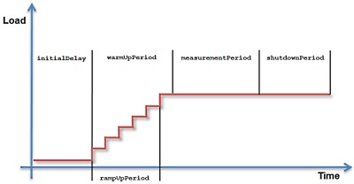 Load Test Phases
{kind=link}
Load Test Environment
Typically, a distributed load generation environment is needed to generate enough load. This requires a cluster of test machines. XLT has to be installed on each of these machines:
 Load Generation Environment
Load Generation Environment
- Master controller: The master controller can be seen as the “brain” of the load test environment. It deploys the test suite to all load machines, evenly distributes the load, and starts/stops the load test. A test cluster may only have one master controller.
- Agent controller: Since the master controller doesn’t have direct access to the remote load machines, it needs the agent controller as counterpart on these machines. It acts on behalf of the master controller.
- Agent: The agent is the component that actually executes the test suite against the system under test. It is started and stopped by the agent controller.
Load Test Environment Configuration
Before you can start the load test, configure both the XLT load generation environment and your test suite as outlined below.
These property files are used to configure the main components of the XLT load generation runtime:
<XLT>/config/agentcontroller.properties- Agent Controller Configuration<XLT>/config/mastercontroller.properties- Master Controller Configuration
Agent Controller Configuration
Inside the agent controller configuration file, you can define these properties:
Port Number
Port number the agent controller is listening on. Default is 8500. You can pick any free port number, but make sure that the corresponding master controller entry matches that number. Also ensure that the firewall rules in place allow unrestricted communication. The used protocol is HTTPS. If you want to run more than one agent controller per machine, be aware that all controllers have to use different port numbers.
com.xceptance.xlt.agentcontroller.port = <portnumber>
Key Store Credentials
The credentials your key store is encrypted with. You only need to change this if your Java key store password has been modified from the default.
com.xceptance.xlt.agentcontroller.keystore.password = <password>
com.xceptance.xlt.agentcontroller.keystore.key.password = <password>
Agent Controller Logging
The properties below serve to configure the agent controller logging facility. They only affect the agent controller output and don’t alter the logging of your test code. Most of the time, a modification is not required here.
log4j.rootLogger = info, console, file
log4j.appender.console = org.apache.log4j.ConsoleAppender
log4j.appender.console.layout = org.apache.log4j.PatternLayout
log4j.appender.console.layout.ConversionPattern = [%d{HH:mm:ss,SSS}] %-5p [%t] - %m%n
Also see Apache Log4j API Docs for more information on log4j settings.
Master Controller Configuration
Inside the master controller configuration file, you can define these properties:
Test Suite Location
To determine the test suite you want to use for the load test, you need to specify its location either as absolute path or relative to your XLT installation. It is uploaded to the agent controllers from there.
com.xceptance.xlt.mastercontroller.testSuitePath = <location>
For example:
com.xceptance.xlt.mastercontroller.testSuitePath = samples/testsuite-posters
When running the load test on and from Windows, make sure to use the correct encoding for backslashes because the property file format uses backslashes to quote other special characters. Therefore, you have to quote the backslash with an additional backslash to ensure its original meaning, e.g.
c:\\test\\mysuite.
Update Interval
Defines how often the master controller prints the status of the currently running load test to the console:
com.xceptance.xlt.mastercontroller.ui.status.updateInterval = <time in seconds>
Status Display
Whether or not to display detailed status information for each simulated test user. If set to false, status information will be aggregated into one line per user type. If you have many test users running, it can be helpful to set it to false because you might get overwhelmed by the amount of information presented otherwise. Being a display property, it doesn’t change the data collection but the final data presentation.
com.xceptance.xlt.mastercontroller.ui.status.detailedList = <true/false>
Agent Controllers
This property lists the locations of the agent controllers you want the master controller to use:
com.xceptance.xlt.mastercontroller.agentcontrollers.<id>.url = <url>
com.xceptance.xlt.mastercontroller.agentcontrollers.<id>.weight = <weight>
You can use any name for the <id> part of the property. It is recommended to resort to name and number combinations, such as ac1 for the first agent controller or blade01-02 for the second agent controller on the first blade. Make sure the agent controller IDs differ from each other because otherwise a later entry in the file will overwrite the previous one.
To simultaneously use load machines of different power in a load cluster, you may specify a “weight” for each agent controller (defaults to 1 if not set). This value influences the automatic distribution of virtual users across the load machines. A machine with a weight of 3 gets 3 times the load of a machine with a weight of 1.
com.xceptance.xlt.mastercontroller.agentcontrollers.ac1.url = https://localhost:8500
com.xceptance.xlt.mastercontroller.agentcontrollers.ac1.weight = 1
com.xceptance.xlt.mastercontroller.agentcontrollers.ac2.url = https://localhost:8501
com.xceptance.xlt.mastercontroller.agentcontrollers.ac2.weight = 3
Master Controller Logging
You can set a different logging behavior for the master controller, which helps to solve problems and provides information in case of support inquiries:
log4j.rootLogger = debug, file
log4j.appender.console = org.apache.log4j.ConsoleAppender
log4j.appender.console.layout = org.apache.log4j.PatternLayout
log4j.appender.console.layout.ConversionPattern = [%d{HH:mm:ss,SSS}] %-5p [%t] - %m%n
Test Suite Configuration
The test suite itself is configured independently from the master controller. All properties are read from the <testsuite>/config directory. The sections below outline the settings relevant to load testing. See Test Suite and Framework Configuration for details on all configuration files and properties.
Default Configuration – default.properties
Result Directory Location
Specifies the directory location where you want to store load test results. Normally, there’s no need to change it.
com.xceptance.xlt.result-dir = <directory path>
Error Behavior
Specifies the framework behavior in case of an error, that is whether or not the framework should abort a transaction if any of the following occurs:
- While loading a page – If an HTTP error occurred while loading a page.
- Page resource unavailable – If an HTTP error occurred while loading a resource embedded in a page.
- Java script error – If a JavaScript error occurred.
- Agent termination in case of server errors – Maximum number of errors allowed before an agent terminates, which helps to automatically stop unobserved, long-running test cases in the event of severe error conditions, such as unavailability of the system under test. The number of errors specified here is the error count per running agent controller.
com.xceptance.xlt.stopTestOnHttpErrors.page = <true/false>
com.xceptance.xlt.stopTestOnHttpErrors.embedded = <true/false>
com.xceptance.xlt.stopTestOnJavaScriptErrors = <true/false>
com.xceptance.xlt.maxErrors = <number of errors per agent controller>
Think Times
To specify the think time between two subsequent actions or transactions, use the properties below. If a random think time is needed, set the appropriate deviation to a value greater than 0. It specifies the maximum deviation from think time in milliseconds. The respective value is added to or subtracted from the think time using a pseudo-random, uniform distribution.
com.xceptance.xlt.thinktime.action = <time in [ms]>
com.xceptance.xlt.thinktime.action.deviation = <time in [ms]>
com.xceptance.xlt.thinktime.transaction = <time in [ms]>
com.xceptance.xlt.thinktime.transaction.deviation = <time in [ms]>
The think time configuration might look like this, for instance:
com.xceptance.xlt.thinktime.action = 100
com.xceptance.xlt.thinktime.action.deviation = 50
com.xceptance.xlt.thinktime.transaction = 0
com.xceptance.xlt.thinktime.transaction.deviation = 0
This sets the action think times between 50 and 150ms and no transaction think time whatsoever.
Note that the deviation has to be smaller than the specified base think time.
Test Project Configuration – project.properties
To configure your test project, edit the file project.properties.
Test Properties File
XLT permits to prepare and use multiple test.properties files for easy maintenance of test setups. This facilitates switching between test setups and prevents configuration errors. This property doesn’t allow the use of a path-specific file name. The test definition files reside in the same directory as the project.properties file.
com.xceptance.xlt.testPropertiesFile = <filename>.properties
Test Class Mapping
Specifies which test IDs should be used by XLT and, more specifically, which test ID uses which test case implementation. That’s why you have to specify the fully qualified class names of your tests here. Note that you can map the same class to multiple load test names if needed. This is extremely useful when you want to run the same test case in different configurations.
com.xceptance.xlt.loadtests.<name>.class = <fully qualified class name>
A test class mapping might look like this:
com.xceptance.xlt.loadtests.TVisitor.class = com.xceptance.xlt.samples.tests.TVisitor
com.xceptance.xlt.loadtests.TJSVisitor.class = com.xceptance.xlt.samples.tests.TJSVisitor
Test Class-Specific Settings
You can define project-wide settings that are test case-specific but not test run-specific by using the following syntax:
<fully-qualified class name>.<property-name> = <value>
For example:
com.xceptance.xlt.samples.tests.shop-url = http://localhost:8080/posters/
com.xceptance.xlt.samples.tests.TAuthor.username = username
com.xceptance.xlt.samples.tests.TAuthor.password = password
com.xceptance.xlt.samples.tests.webdriver.TAuthor.write-count = 2
Load Test Profile Configuration – test.properties
Test run-specific settings – You can also configure an (optional) property file containing the settings specific to a certain load test run. You may define more than one test property file, such as test-target-load.properties and test-2x-target-load.properties. This way, many configurations can be defined and prepared in advance and used as needed. You switch between these files by changing the property com.xceptance.xlt.testPropertiesFile in the project.properties file.
Load test profile configurations are done inside your test property file, which is named test.properties by default. Using the syntax below, you can define test ID, the number of virtual users, and all other load test-specific settings of tests meant to run in parallel agents:
com.xceptance.xlt.loadtests.<testID>.<setting> = <value>
For <testID>, use any appropriate name. The following table lists all supported values for <setting>; required settings are displayed in bold face:
| Setting | Description |
|---|---|
| class | Fully qualified class name of the test case (REQUIRED if not specified in project.properties) |
| users | Number of threads that run the test in parallel (REQUIRED), may be a load function |
| iterations | Number of iterations per thread |
| arrivalRate | Number of transactions per hour, may be a load function |
| initialDelay | Number of seconds to wait at the beginning |
| warmUpPeriod | Number of seconds to run without performing measurements |
| measurementPeriod | Number of seconds to perform measurements (REQUIRED) |
| shutdownPeriod | Number of seconds to continue without performing measurements |
| rampUpPeriod | Number of seconds to steadily increase the user count |
| rampUpStepSize | Number of users to stepwise increase the load during ramp-up |
| rampUpSteadyPeriod | Number of seconds between ramp-up steps |
| rampUpInitialValue | Number of users when starting ramp-up |
| loadFactor | A factor to be applied to users (and arrivalRate if defined). Use this value to scale the load up/down. |
A sample load profile configuration is given below:
com.xceptance.xlt.loadtests = TAuthor
com.xceptance.xlt.loadtests.TAuthor.users = 5
com.xceptance.xlt.loadtests.TAuthor.iterations = 100
com.xceptance.xlt.loadtests.TAuthor.arrivalRate = 3600
com.xceptance.xlt.loadtests.TAuthor.initialDelay = 0
com.xceptance.xlt.loadtests.TAuthor.warmUpPeriod = 30s
com.xceptance.xlt.loadtests.TAuthor.measurementPeriod = 10m 0s
All time period values can be specified in one of the following formats (without quotes):
- total number of seconds: ‘1234s’ or '1234'
- natural style: ‘0h 12m 0s’, ‘0h 12m’, ‘12m 0s’, or '12m'
- digit style: ‘1:23’, ‘01:23’, ‘0:1:23’, or ‘0:01:23’
If you want to run several test cases simultaneously, specify the test case names as value for the property com.xceptance.xlt.loadtests in form of a space-separated list:
com.xceptance.xlt.loadtests = TAuthor TVisitor TCrawler
com.xceptance.xlt.loadtests.TAuthor.users = 5
com.xceptance.xlt.loadtests.TVisitor.users = 3
com.xceptance.xlt.loadtests.TCrawler.users = 4
Sample Configurations
User Count Model With Constant Load Profile
com.xceptance.xlt.loadtests.TAuthor.users = 5
Runs exactly 5 users right from the beginning.
User Count Model With Ramp-Up Load Profile
com.xceptance.xlt.loadtests.TAuthor.users = 50
com.xceptance.xlt.loadtests.TAuthor.rampUpInitialValue = 10
com.xceptance.xlt.loadtests.TAuthor.rampUpPeriod = 5m
Runs exactly 50 users, but ramps up the user count from 10 to 50 over a period of 5 minutes.
User Count Model With Variable Load Profile
com.xceptance.xlt.loadtests.TAuthor.users = 0/5 1h/50 2h/50 2h/100 3h/20
Runs the TAuthor scenario with a variable number of concurrent users (5 → 50 → 100 → 20).
Arrival Rate Model With Constant Load Profile
com.xceptance.xlt.loadtests.TAuthor.users = 5
com.xceptance.xlt.loadtests.TAuthor.arrivalRate = 100
Runs the TAuthor scenario exactly 100 times per hour with at most 5 concurrent users.
Arrival Rate Model With Ramp-Up Load Profile
com.xceptance.xlt.loadtests.TAuthor.users = 5
com.xceptance.xlt.loadtests.TAuthor.arrivalRate = 100
com.xceptance.xlt.loadtests.TAuthor.rampUpInitialValue = 50
com.xceptance.xlt.loadtests.TAuthor.rampUpSteadyPeriod = 1m
com.xceptance.xlt.loadtests.TAuthor.rampUpStepSize = 10
Runs the TAuthor scenario exactly 100 times per hour with at most 5 concurrent users, but starts with an arrival rate of 50 per hour and increases it by 10 every minute until the target level of 100 is reached.
Arrival Rate Model With Variable Load Profile
com.xceptance.xlt.loadtests.TAuthor.users = 5
com.xceptance.xlt.loadtests.TAuthor.arrivalRate = 0/50 1h/100 2h/200 3h/150
Runs the TAuthor scenario with a variable arrival rate (50 → 100 → 200 → 150) and with at most 5 concurrent users.
Arrival Rate Model With Ramp-Up Load Profile and Load Factor
com.xceptance.xlt.loadtests.TAuthor.users = 5
com.xceptance.xlt.loadtests.TAuthor.arrivalRate = 100
com.xceptance.xlt.loadtests.TAuthor.rampUpPeriod = 5m
com.xceptance.xlt.loadtests.TAuthor.loadFactor = 2.4
Runs the TAuthor scenario exactly 240 times per hour with at most 12 concurrent users, but ramps up the arrival rate from 1/h to 240/h over a period of 5 minutes.
Other Settings
In case you want to modify the behavior of the logging facility of the load test agents, the test suite configuration directory contains a file named log4j.properties that can be changed to satisfy your needs.
To launch the JVM that runs the agent with additional parameters, specify them in the jvmargs.cfg file.
Run the Load Test
Running load tests consists of two steps:
- running the agent controllers and
- running the master controller.
Running the Agent Controllers
To start the agent controllers, open a command line window/console and type the following command sequence:
cd <XLT>/bin
./agentcontroller.sh
Windows users have to use the appropriate
.cmdfile located in the same directory.
The agent controller starts up and listens on the specified port. The output looks like this:
- Using "C:\Users\AppData\Local\Temp\vfs_cache" as temporary files store.
- Logging to org.slf4j.impl.Log4jLoggerAdapter(org.mortbay.log) via org.mortbay.log.Slf4jLog
- jetty-6.1.19
- Started SslSocketConnector@0.0.0.0:8500
Running the Master Controller
Before starting the master controller, make sure all agent controllers are running on all respective load test machines. The master controller cannot be started if the agent controllers aren’t running. Also check that the test suite has been compiled successfully to avoid errors when uploading it.
You can start the master controller in one of the following modes:
- Interactive mode: typical sequence of steps to be executed to run a load test
- Auto mode: load test is started automatically, without user interaction
- Embedded mode: running a load test where master controller and agent controller run inside the same JVM
Interactive Mode
To start the master controller in interactive mode, use this command line:
cd <XLT>/bin
./mastercontroller.sh
Windows users have to use the appropriate
.cmdfile located in the same directory.
A screen appears that displays the command line menu as below:
Xceptance LoadTest 4.2.0
Copyright (c) 2005-2012 Xceptance Software Technologies GmbH. All rights reserved.
Basic License (5 virtual users). This license does not expire.
(u) Upload test suite
(s) Start agents
(a) Abort agents
(r) Show agent status
(d) Download test results
(c) Create load test report
(q) Quit
=>
The following options are offered:
- Upload agent files (u): Choose this option to upload your test suite (code, data, and configuration) to all configured agent controllers. This is required at the very beginning and each time you’ve modified your test suite. XLT will only upload files that have been changed to speed up testing.
- Start agents (s): All agent controllers will receive a start command to spin off an agent executing its configured tests. This effectively starts the load test.
- Abort agents (a): Choose this option to immediately terminate any running load agent.
- Show agent report (r): The current status of the load agents can be monitored by choosing this option. Depending on the configuration, either a short summary (per test case) or a detailed list (per test user) is shown. In either case you get information about:
- test case name on which you are running the load test,
- how many users are running,
- how often a test case has been executed so far,
- how long it took on average to execute the test case,
- how many events and errors occurred, and
- the overall progress.
- Download test results (d): Each load agent writes log files and runtime data files. Choose this option to download this data from all configured agent controllers. After entering the d command, a menu appears where you can choose the amount of data to download. Press 1, 2 or 3 here. The files are saved to a newly created directory at the location specified in
default.properties. By default, the result directory is set to<XLT>/results. The name of the new directory is given by the current date and time, for example:20110501-161718.
- Create report (c): Generates a load test report of the last downloaded test results.
- Quit (q): Shuts down the master controller and closes its connections to the agent controllers. Note that this will not stop any running load test. The load agents continue to execute the load test until they have finished. To regain control, reconnect to the test cluster by restarting the master controller.
As soon as you’ve chosen an option (by pressing the associated key followed by ENTER), the appropriate action is executed. Afterwards, you immediately return to the menu (unless you’ve chosen to quit, of course).
A typical usage scenario for a load test is reflected by the order of the master controller menu items and might look like this:
- Upload the test suite (using (u) shortcut)
- Start the agents (using (s) shortcut)
- Check the agent status regularly (using (r) shortcut)
- Download the test results as soon as the test has finished (using (d) shortcut)
- Create a report of the downloaded results (using (c) shortcut)
- Quit the master controller (using (q) shortcut)
Auto Mode
As outlined in the previous sections, there is a typical sequence of steps to be executed when running a load test. It may quickly become tedious and error-prone to type the necessary keys over and over again. To avoid this repetition, XLT provides another operating mode: the auto mode. In this mode, all the steps mentioned above are executed automatically, without any user interaction. To start XLT in this operating mode, use the following command line:
Unix-based systems:
cd <XLT>/bin
./mastercontroller.sh -auto
Windows:
cd <XLT>\bin
mastercontroller.cmd -auto
If the test suite files were uploaded and the load agents started successfully, XLT automatically refreshes the agent status on a regular basis. As soon as the test has finished, the test results are downloaded and XLT quits.
If the command is followed by the option -report, a load test and performance report will be automatically generated after the test has finished and the results have been downloaded.
cd <XLT>\bin
mastercontroller.cmd -auto -report
See below for what the screen displays in auto mode:
Xceptance LoadTest 4.2.0
Copyright (c) 2005-2012 Xceptance Software Technologies GmbH. All rights reserved.
Basic License (5 virtual users). This license does not expire.
Uploading test suite ...
0% ... 10% ... 20% ... 30% ... 40% ... 50% ... 60% ... 70% ... 80% ... 100% - OK
Starting agents ...
0% ... 100% - OK
Test Case State Running Users Iterations Last Time Avg. Time Total Time Events Errors Progress
------------- -------- ---------------- ---------- --------- --------- ---------- --------- ------ --------
TAddToCart_lw Running 10 of 10 0 0,00 s 0,00 s 0:00:00 0 0 0%
TAddToCart Running 10 of 10 0 0,00 s 0,00 s 0:00:00 0 0 0%
TCreateUser Running 10 of 10 1 0,72 s 0,72 s 0:00:01 0 0 0%
Test Case State Running Users Iterations Last Time Avg. Time Total Time Events Errors Progress
------------- -------- ---------------- ---------- --------- --------- ---------- --------- ------ --------
TAddToCart_lw Running 10 of 10 72 0,67 s 0,77 s 0:00:06 0 2 5%
TAddToCart Running 10 of 10 55 0,70 s 1,03 s 0:00:06 0 0 5%
TCreateUser Running 10 of 10 83 0,95 s 0,67 s 0:00:06 0 17 5%
.
.
.
Test Case State Running Users Iterations Last Time Avg. Time Total Time Events Errors Progress
------------- -------- ---------------- ---------- --------- --------- ---------- --------- ------ --------
TAddToCart_lw Running 10 of 10 1.472 0,69 s 0,66 s 0:01:37 17 65 96%
TAddToCart Running 10 of 10 1.412 0,66 s 0,68 s 0:01:37 0 0 96%
TCreateUser Running 10 of 10 1.525 0,91 s 0,63 s 0:01:37 0 316 96%
Test Case State Running Users Iterations Last Time Avg. Time Total Time Events Errors Progress
------------- -------- ---------------- ---------- --------- --------- ---------- --------- ------ --------
TAddToCart_lw Finished 0 of 10 1.533 1,16 s 0,65 s 0:01:41 17 65 100%
TAddToCart Finished 0 of 10 1.476 1,17 s 0,68 s 0:01:40 0 0 100%
TCreateUser Finished 0 of 10 1.590 0,79 s 0,63 s 0:01:41 0 325 100%
Downloading test results ... (Please be patient, this might take a while)
0% ... 30% ... 60% ... 100% - OK
To abort the test prematurely, press CTRL-C to terminate the master controller. This terminates all running agents as well and triggers the download of all test results generated so far. Note that it’s therefore impossible to disconnect the master controller from the test cluster while keeping the load test running.
For long-running load tests, it is recommended to run the test without the
-autooption because this allows a disconnect from the test and inhibits accidental test termination.
Embedded Mode
Both interactive mode and auto mode can be combined with the command line option -embedded. It starts the master controller together with an internal agent controller.
This is useful if you want to run load tests without a distributed load test environment, but run just one agent controller together with the master controller on the same machine. There’s no need to manually start an agent controller before you run the load test, which facilitates the handling of automated load tests started from within a build process. This option is also recommended when playing around with the posters demo for training purposes because it simplifies the process of running a load test.
When you use the
-embeddedoption, the local agent controller settings will override the set of agent controllers configured inmastercontroller.properies.
Test Results and Reports
Collected Values
When running a load test, the XLT framework automatically collects a lot of information about the transactions, actions, and requests being executed and certain events. Additional custom timers and events can be added programmatically using the XLT API. Last but not least, each agent process monitors its resource usage and logs these values as well. All this data will later be the source for the XLT load test report.
These values are stored — separately for each test case and each virtual user — in a file named results/<TestCaseName>/<UserNo>/timers.csv. Agent resource usage data will be written to results/Agent-JVM-Monitor/0/timers.csv. As the name already suggests, the file format is CSV. See the following snippet for an example:
R,PublishArticle.1,1366360224994,25,false,566,48930,200,http://localhost:8080/pebble/manageBlogEntry.secureaction,text/html,0,0,15,8,15,23
R,PublishArticle.7,1366360225027,19,false,456,653,200,http://localhost:8080/pebble/dwr/interface/Pebble.js,text/plain,0,0,2,0,2,2
R,PublishArticle.3,1366360225027,22,false,446,43876,200,http://localhost:8080/pebble/dwr/engine.js,text/javascript,0,0,5,0,5,5
E,Failed to download resource,1366360225027,TAuthor,==[404]== http://localhost:8080/themes/default/images/favicon.ico
A,PublishArticle,1366360224993,76,false
R,ConfirmPublishing.1,1366360225141,62,false,609,134,302,http://localhost:8080/pebble/publishBlogEntry.secureaction,,0,0,60,0,60,60
R,ConfirmPublishing.2,1366360225189,15,false,462,55555,200,http://localhost:8080/pebble/2013/04/19/1366360200018.html,text/html,0,0,9,5,9,14
R,ConfirmPublishing.8,1366360225221,15,false,457,653,200,http://localhost:8080/pebble/dwr/interface/Pebble.js,text/plain,0,0,2,0,2,2
R,ConfirmPublishing.4,1366360225221,16,false,447,43876,200,http://localhost:8080/pebble/dwr/engine.js,text/javascript,0,0,3,0,3,3
A,ConfirmPublishing,1366360225141,108,false
R,Logout.1,1366360225348,19,false,489,200,302,http://localhost:8080/pebble/logout.action?redirectUrl=http://localhost:8080/pebble/,,0,0,3,0,3,3
R,Logout.2,1366360225364,35,false,477,51601,200,http://localhost:8080/pebble/,text/html,0,0,15,8,15,23
R,Logout.8,1366360225395,5,false,471,653,200,http://localhost:8080/pebble/dwr/interface/Pebble.js,text/plain,0,0,1,0,1,1
R,Logout.4,1366360225395,6,false,461,43876,200,http://localhost:8080/pebble/dwr/engine.js,text/javascript,0,0,2,0,2,2
A,Logout,1366360225347,74,false
T,TAuthor,1366360222893,2599,false,
As you can see, the lines can have a different number of columns as they represent different types of information. The following table explains the meaning of each column depending on the data record type:
| Column | Transaction | Action | Request | Custom Timer | Event | Agent Resource Usage |
|---|---|---|---|---|---|---|
| 1 | type code (T) | type code (A) | type code (R) | type code (C) | type code (E) | type code (J) |
| 2 | name | name | name | name | name | agent name |
| 3 | start time | start time | start time | start time | time | time |
| 4 | run time [ms] | run time [ms] | run time [ms] | run time [ms] | transaction name | current CPU usage (agent only) [%] |
| 5 | failed flag | failed flag | failed flag | failed flag | event message | used main memory (absolute) |
| 6 | exception stack trace if failed | - | bytes sent | - | - | current main memory usage (relative) [%] |
| 7 | - | - | bytes received | - | - | used heap memory (absolute) |
| 8 | - | - | response code | - | - | total heap memory (absolute) |
| 9 | - | - | request URL | - | - | current heap memory usage (relative) [%] |
| 10 | - | - | response content type | - | - | threads in state "runnable" |
| 11 | - | - | connect time [ms] | - | - | threads in state "blocked" |
| 12 | - | - | send time [ms] | - | - | threads in state “waiting” or "timed waiting" |
| 13 | - | - | server busy time [ms] | - | - | minor GC cycles since start |
| 14 | - | - | receive time [ms] | - | - | minor GC time since start [ms] |
| 15 | - | - | time to first bytes [ms] | - | - | current minor GC CPU usage [%] |
| 16 | - | - | time to last bytes [ms] | - | - | full GC cycles since start |
| 17 | - | - | request ID | - | - | full GC time since start [ms] |
| 18 | - | - | - | - | - | current full GC CPU usage [%] |
| 19 | - | - | - | - | - | minor GC time since last update [ms] |
| 20 | - | - | - | - | - | full GC time since last update [ms] |
| 21 | - | - | - | - | - | minor GC cycles since last update |
| 22 | - | - | - | - | - | full GC cycles since last update |
| 23 | - | - | - | - | - | current CPU usage (total) [%] |
Note that the file format might be changed or extended in future XLT releases.
XLT Result Browser
When running test cases outside Script Developer, that is either in Eclipse as a load test or as an Ant build, you can save the page output to disk. The relevant property is com.xceptance.xlt.output2disk. By default, it is set to never. If you want to enable page output to disk, copy the following lines to dev.properties or test.properties:
## Enables page output to disk. Possible values are:
## - never ..... pages are never logged
## - onError ... pages are logged only if the transaction had errors
## - always .... pages are logged always
com.xceptance.xlt.output2disk = always
All saved results can be found in the <testsuite>/results directory. See the lines below for details of the results subdirectory structure:
---+ results
`---+ [testcase]
`---+ [virtual-user]
`---+ output
`---+ [transaction-ID]
|---- css
|---- images
|---+ pages
| `--- cache
`---- responses
In the folders for each test run (results/[testcase]/[virtual-user]/output/[transaction-ID]), you find an index.html containing the XLT Result Browser. The result browser offers an integrated navigation to browse the complete page output of the transaction and to look at every single request in detail. The file last.html in the output folder results/[testcase]/[virtual-user]/output references the result browser for the last executed transaction of this virtual user.
The result browser navigation will only permit access to the pages of a transaction if they are directly related to actions. Therefore, defining actions correctly is very important to make the most effective use of the result browser. For details on how to structure test cases and create actions, also see Basic Concepts and Code Structuring Recommendations.
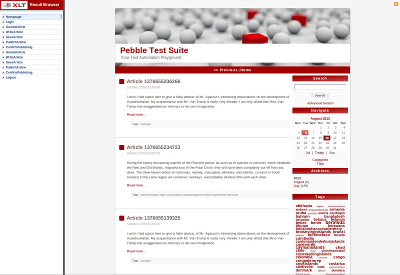 XLT Result Browser – Page Output
{kind=link}
If you click on one of the action names in the navigation, the result browser will show the respective page. When you double-click an action name, the navigation will expand to list all related requests. The listed requests are color-coded with black, grey, red, blue, lilac and green based on the following algorithm:
- If the request’s status code is 301 or 302 then set its color to grey since it is a Redirect.
- If the request’s status code is 0 or greater than equal to 400 then set its color to red because it is an Error.
- Set the color initially to black and check the content type of the response if it matches the following criteria:
- It contains the string
javascriptor is equal toapplication/json. If this is the case, change the color to lilac. - It starts with the string
image. In this case change the color to green. - It is equal to
text/css. This content type denotes CSS and thus change the color to blue.
- It contains the string
Please note that the content type is determined by the appropriate HTTP response header value. Thus, if an JavaScript file is delivered as content type
text/plainthen this request will be color-coded with black.
When you select one of the requests from the navigation, the page content will be replaced by detailed information about the request and the related response that you can access via the four tabs on top of the page. The following information is available:
- Request/Response Information
- General Information
- Request and Response Headers
- URL Query and POST Parameters (if any)
- Request Body (Raw)
- Response Content
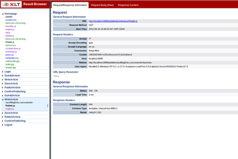 XLT Result Browser – Request Details
{kind=link}
Creating and Evaluating Load Test Reports
As the most important tool for analyzing the results of a load test run, XLT offers three types of load test reports, which are thoroughly illustrated in the sections below:
- Load and Performance Test Report
- Performance Comparison Report
- Performance Trend Report
To create the reports, download all load test results from the agent controllers to the master controller. See Run The Load Test for details.
As soon as you’ve downloaded the load test results to your local disk, you can create the test reports with the XLT report generator. Enter a command in the console following this pattern:
cd <XLT>/bin
./<report-shortname>.(sh/cmd) ../results/<downloaded-results-dir> [options]
The <downloaded-results-dir> and <report-shortname> have to be replaced with the appropriate values. For example:
./create_report.sh ../results/20110503-152920
This tells the report generator to take the specified results directory as input for the report. By default, the generated report is saved to <XLT>/reports. The report subdirectory is named after the respective results directory.
The report generator supports these options:
-o <dir>: an alternative output directory (optional)-from <time>: ignore results generated before the given time (optional)-to <time>: ignore results generated after the given time (optional)
Using the -o option, you can specify an alternative output directory. Keep in mind that you have to specify a target directory name including the final directory for your report. With -o, the directory name is not automatically set but your specified directory will be created instead. For example:
./create_report.sh ../results/20110503-152920 -o D:/Test_Reports/MyLatestReport
If you’re only interested in creating a report for a particular time range, do the following:
./create_report.sh ../results/20110503-152920 -from 20110503-152600 -to 20110503-152800
Note that
<time>has to be specified in the format yyyyMMdd-HHmmss and that it has to match the time zone of your local machine. By default, the resulting report is rendered using your machine’s time zone.
All this information is transferred to HTML pages that you can view using a standard web browser. When the report is generated, which may take a while depending on the amount of data gathered during the load test, you will find the file index.html in the root of the appropriate test report directory. Open it in a web browser to view the report.
Load and Performance Test Report
The Load and Performance Test Report gives you all the information needed for a detailed analysis of a load test run. It provides several sections, each consisting of at least one table and one or more charts visualizing the graphic development of relevant measurements over time.
 Load and Performance Test Report
Load and Performance Test Report
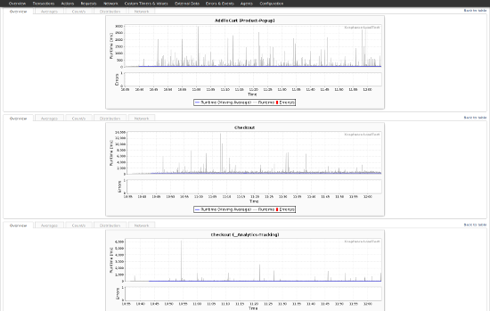 Load and Performance Test Report – Charts
{kind=link}
- Overview: This section shows some general information about the load test (e.g. start and end time, duration), the load profile and the test comment (if any was given). It also displays a performance summary and network statistic for HTTP/HTML-based load tests.
- Transactions: A transaction is a completed test case. The test case consists of one or more actions. The displayed transaction runtime includes the runtime of all actions within the test case, think times, and the processing time of the test code itself. If the test path of the test case is heavily randomized, the runtime of transactions might vary significantly. The average runtime shows the development of tests over time and especially helps to evaluate the outcome of long-running tests.
- Actions: An action is part of a test case and consists of prevalidation, execution, and postvalidation. The data shown here indicates the time spent in the execution routine of an action. Therefore, its runtime includes the runtime of a request, e.g. an HTTP operation, and the time necessary to prepare, sent, wait, and receive the data.
- Requests: The request section is the most important statistics section when testing web applications. It directly reflects the loading time of pages or page components. Each row holds the data of one specific request. Its name is defined within the test case as timer name. The Count section of the table shows the total number of executions (Total), the calculated executions per seconds (1/s), minute (1/min), as well as projections or calculations of the executions per hour (1/h) and day (1/d). The Error section displays the total amount (Total) of errors that occurred throughout page or page component loading. The error count doesn’t include errors detected during the post-validation of the data received. Typical error situations are HTTP response codes such as 404 and 505, timeouts, or connection resets. The runtime section of the table shows the median, the arithmetic mean, the minimum and maximum runtime encountered as well as the standard deviation of all data within that series. The runtime segmentation sections depicts several runtime segments and the number of requests within the segment’s definition. If the runtime of the test case is shorter than the displayed time period, e.g. test runtime was 30 min and the time period is hour, the numbers will be a linear projection. That means they will show a possible outcome of a longer test run if load and application behavior remained the same.
- Network: The network section covers the areas of incoming and outgoing traffic during the load test. Sent Bytes is an estimated number based on the data given to the network layer. Cookies, for instance, are not included. Received Bytes is an accurate number because it’s based on the data received and includes HTTP header information. Depending on the test runtime, the numbers per hour and per day might be estimations based on a linear projection of the available data. If the test run included web activities or other activities returning an HTTP response code, it can be found here as well. Furthermore, all hosts that participated in the test run are listed in a separate table along with the appropriate number of requests that hit this host. Last but not least, this section contains a table that breaks down the received content to their announced type.
- Custom Timers & Values: The custom timers includes all timers that have been placed individually within the test code. The chart and data description is identical to the request section. In case custom samplers have been run during the test, the collected data is shown in the Custom Values subsection below.
- External Data: All external data gathered by other tools during the test run is shown here according to the configuration. Please see External Data for details on how to include external data in the report.
- Errors & Events: As its name suggests this section is made up of two parts: Errors and Events (events are used to indicate that the test has encountered a special situation that is not an error but too important to ignore or to write to the log only). The first part – Errors – shows a table that contains all errors and their stack traces thrown by the test cases along with an overview of all error types. The second part – Events – consists of a single table that lists all events that occurred during the test run including their name, amount, detail message and the name of the test case that produced this event.
- Agents: This section reports the resource utilization of each user agent in terms of CPU and memory usage. It helps to identify potential resource bottlenecks that might have influenced the load test. Note that all data is local to the JVM of the agent and therefore only covers a process view.
- Configuration: The configuration section lists the test configuration as well as the load profile used to run the test. It facilitates test reproduction and preserves the test settings for later test evaluation.
Create A Load And Performance Test Report
To generate a load and performance test report, use this command:
create_report.(sh/cmd) ../results/<testDataDir> [options]
For example:
./create_report.sh ../results/20110503-160520
As an alternative to the command above, you can also create a load and performance test report with the (c) shortcut from the master controller’s command line menu. It creates a report of the least recently downloaded results.
Configuring the Report Generator
Linking to Result Browser Directories
If an error occurred during the load test run, the corresponding error message and stack trace will be displayed in the Errors section of the load test report. If you enabled storing the visited pages to disk, you will also find a directory name as part of the error information. To view the visited pages, use this directory name to locate the corresponding result browser in the results directory of the load test.
You can also access the result browsers directly from the load test report. This greatly speeds up error analysis because you would just have to click the directory name next to an error entry to open the respective result browser. To make this work, you first need to ensure that:
- the results will be provided at the target location, and
- the results directory will never be renamed oder moved.
Otherwise, viewers of the report experience broken links.
To let the report generator create links from the load report to the result browsers, set the property com.xceptance.xlt.reportgenerator.linkToResultBrowsers in <XLT>/config/reportgenerator.properties to true.
By default, the report generator calculates the path from the report to the result browsers based on the results directory (given on the report generator’s command line) and the reports directory (either being the default directory or the one explicitly given as command line argument). The computed path will be a relative path if possible and an absolute path otherwise (on Windows, if report and results are on different drives).
Sometimes the relative path approach is not suitable, for example, if you only send the report to your team members, not the results. In that case, the results must be made available somewhere on the net. Furthermore, the report generator needs to know about this location to appropriately generate the links. To this end, you configure a results base URI, for instance http://myhost/results. The URI is a base URI as it’s common for the results of all your load tests. The report generator automatically appends the name of the results directory (for example 20121106-111751) to this URI when generating the links to the result browsers, so the resulting link might look like this: http://myhost/results/20121106-111751/ac01_00/TSearch/126/output/1352194484275/index.html
Using a base URI, you don’t need to reconfigure the report generator when generating the report for another load test, unless you choose to publish the results at a totally different location. To configure the base URI, set the property com.xceptance.xlt.reportgenerator.resultsBaseUri in <XLT>/config/reportgenerator.properties to the appropriate value.
Charts Scaling and Boundaries
Sometimes the runtime charts have extremely high peaks. By default, the charts are scaled such that the y-axis goes up to slightly more than the maximum value. However, in case of such peaks, the area of interest the big majority of the values falls into may be extremely compressed into the chart because the scale has a really large maximum value. To get more significant charts, the properties
com.xceptance.xlt.reportgenerator.charts.scaleMode
and
com.xceptance.xlt.reportgenerator.charts.capAtMultipleOfAverage
have been introduced.
Use the first property to set the mode for the y-axis scale of the runtime charts. By default, a linear scale is used. If you set this property, a logarithmic mode will be used alternatively. The allowed values for this property are “linear” and “logarithmic”, any other value results in an exception. When you use this approach, the graphs in the charts are flattened and extreme peaks are compressed in their representation.
Example: To have runtime charts with a logarithmic scale on the y-axis, use
com.xceptance.xlt.reportgenerator.charts.scaleMode = logarithmic
Use the second property to define the upper bound of the y-axis in the charts. As the values in different charts may extremely differ, the given value is interpreted as multiple of the average. Any double value is allowed. By default, there is no capping at all.
Example: The average runtime for a request is 250 milliseconds, but a few requests ran into a timeout with 30 seconds. Then setting a value of 3 for this property results in the y-axis being capped at 750 milliseconds (3 times the average value).
com.xceptance.xlt.reportgenerator.charts.capAtMultipleOfAverage = 3
Hint: To indicate fractional numbers, make sure to not use commas but points, for example 3.5 to denote 3 and a half.
To avoid useless capping, all current values are checked. There’s no capping if all values in the measured data are smaller than the average value multiplied with the configured factor. If capping has been applied, a magenta line will be drawn and an entry will be made in the legend of the chart.
Hint: This property only takes integers as arguments.
Performance Comparison Report
The Performance Comparison Report gives you a quick overview on performance improvements (green color tones) and performance declines (red color tones) between two test runs. The initial test run is labeled baseline. The test run being compared to the baseline is labeled measurement run.
Every section of the comparison report displays a table with performance changes and is divided into three parts:
- Count: The percentage values show the development of the performance in comparison to the baseline. Positive numbers in the count section indicate an improvement of the throughput over the baseline. Negative values indicate a decrease in throughput.
- Errors: Positive numbers indicate an increase in the number of errors, negative numbers a decrease. An infinite sign indicates the occurrence of errors in comparison to an error-free baseline.
- Runtime: Positive values indicate a poorer performance, negative values an improvement (smaller runtime values) over the baseline.
When you hover the mouse over the columns of the report table, you can see the actual measurement results, which lets you determine whether or not the reported percentage change is significant.
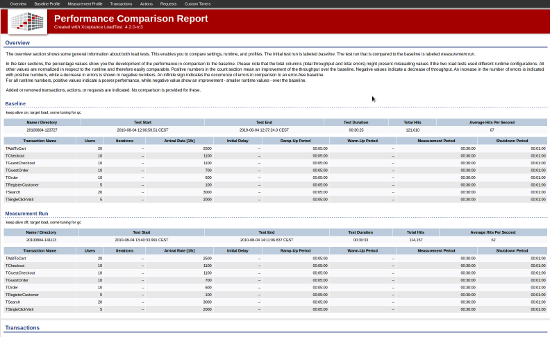 Performance Comparison Report – Overview
{kind=link}
 Performance Comparison Report
Performance Comparison Report
The Performance Comparison Report contains the following sections:
- Overview: The overview section shows general information about both load tests. It lets you compare settings, runtime, and profiles. In the later sections, the percentage values depict the development of the performance in comparison to the baseline. Note that the total columns (total throughput and total errors) might present misleading values if the load tests used different runtime configurations. All other values are normalized with respect to the runtime and therefore easily comparable. Positive numbers in the count section stand for an improvement of the throughput over the baseline, negative values for a decrease in throughput. An increase in the number of errors is indicated with positive numbers, a decrease with negative numbers. An infinite sign indicates the occurrence of errors in comparison to an error-free baseline. For all runtime numbers, positive values signify a poorer performance, negative values an improvement, or smaller runtime values, over the baseline. Added or removed transactions, actions, or requests are displayed, but for them no comparison is provided.
- Transactions
- Count
- Errors
- Runtime
- Actions
- Count
- Errors
- Runtime
- Requests
- Count
- Errors
- Runtime
- Custom Timers
- Count
- Errors
- Runtime
Create a Performance Comparison Report
A performance comparison report can only be generated between two existing load and performance test reports. That is, you first have to create both of these reports.
Then you can generate a performance comparison report using the following command:
create_diff_report.(sh/cmd) <testReportDir_1> <testReportDir_2> [options]
For example:
./create_diff_report.sh ../reports/20110503-152920 ../reports/20110503-160520
Performance Trend Report
A trend report depicts the development of the performance over time. Multiple measurements are taken into account and evaluated against each other. It shows how your system performs over time, how your tuning effort pays out, and how your live environment acts under a changing load situation if used as monitoring.
Two trend report types are available:
- Difference to First Run and
- Difference to Previous Run.
The Difference to the First Run reports the changes compared to your first test run, mostly referred to as baseline. Each table column displays the difference between your baseline run and the run you’re interested in. The quality of your baseline run defines how valuable this report may be. You can also look at it as a long-term performance trend report.
The Difference to Previous Run visualizes the improvements between two adjacent test runs, which lets you recognize how your last change or tuning effort payed out in comparison to the previous run. It helps you to see whether or not you are on the right track regarding the improvement of your application’s performance. It also emphasizes sudden improvements or set-backs and can be seen as a short-term performance trend report.
When you hover the mouse over the columns of the trend report table, you can see the actual measurement results. This will will give you a better idea whether or not the reported percentage change is significant. Please keep in mind that changes up to 10% are measurement fluctuation most of the time.
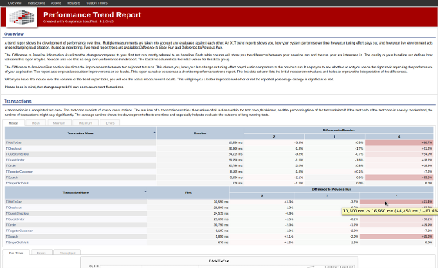 Performance Trend Report – Overview
{kind=link}
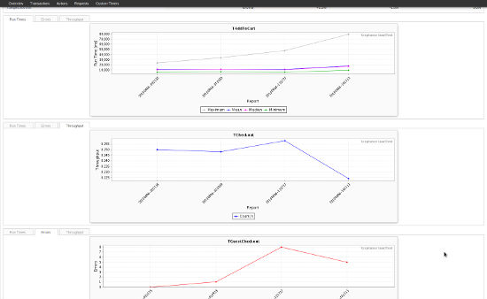 Performance Trend Report
{kind=link}
Similar to the other reports, the trend report is divided into the following sections, each containing the tables and charts mentioned above:
- Overview
- Transactions
- Actions
- Requests
- Custom Timers
Create a Performance Trend Report
To generate a performance trend report on several test reports, use the command below:
create_trend_report <testReportDir_1> ... <testReportDir_n> [options]
For example:
./create_trend_report.sh ../reports/20110503-152920 ../reports/20110503-160520 ../reports/20110503-161030
Custom Values
During a load test, XLT is logging a large amount of data relevant to the test run. Nevertheless, sometimes it comes in handy to log additional information about the system under test (SUT) directly during the load test run. For this purpose, XLT provides custom values.
Example: An eCommerce application is typically connected to several third-party systems to use external services like credit-worthiness check. The response time of these third-party systems can have a major impact on the SUT’s response to the client request. By default, this application-internal information isn’t visible to XLT during a load test. A typical example for custom values in this context is logging the response time of requests to third-party systems. To do so, you have to write custom code to access the relevant sources, for instance via remote connection to the application server. The additional data can then be logged by XLT during the load test runtime and is automatically integrated into the load and performance test report.
Sampler
Custom Samplers let you query custom sources and log data (samples) during the load test runtime. To this end, provide a custom sampler class extending com.xceptance.xlt.api.engine.AbstractCustomSampler. The sampler gets configured in the test suite configuration files. The recommended location for the relevant configuration is project.properties.
The provided sampler must override the execute() method that is called after each interval time (see configuration). Furthermore, the sampler might override the methods initialize() or shutdown() getting called just once for the sampler. While initialize() is called before the first call of execute(), shutdown() is called on shutdown.
The logged custom value is the return value of the execute() method.
The AbstractCustomSampler can store any ‘double’ value. The stored value indicates the absolute value at a certain point in time. The corresponding report chart directly shows the logged value.
Configuration
To configure samplers, provide these properties:
com.xceptance.xlt.customSamplers.1.class = com.xceptance.xlt.samples.ValueSamplerDemo
com.xceptance.xlt.customSamplers.1.name = ValueSamplerDemo
com.xceptance.xlt.customSamplers.1.description = This sampler logs a custom value which is just a random number
com.xceptance.xlt.customSamplers.1.interval = 1000
com.xceptance.xlt.customSamplers.1.chart.title = ValueSamplerDemo
com.xceptance.xlt.customSamplers.1.chart.yAxisTitle = Value
#com.xceptance.xlt.customSamplers.1.property.foo = 123
#com.xceptance.xlt.customSamplers.1.property.bar = abc
...
com.xceptance.xlt.customSamplers.9.class = ...
com.xceptance.xlt.customSamplers.9.name = ...
...
- com.xceptance.xlt.customSamplers.n. is the saved key for custom sampler properties. Each sampler configuration block must have a unique number (called n in this example). The numbers don’t need to be in strictly successive order.
- class points to the sampler class (including full package path).
- name is a customizable name of the sampler. This name must be used when instantiating a sample class (it’s recommended to use the method
getSamplerName()). - interval defines the period the sampler is started at (unit of time is milliseconds). The value must be positive (including 0). A new sampler will be started only if it is executed for the first time or if the previous sampler has come to an end.
- Providing a chart title is optional. By default, the sampler name is used. yAxisTitle defines the title of the y-axis for the rendered chart.
- Providing further sampler properties is optional. The properties can be accessed by calling the methods
getProperties()orgetProperty(key)(where key is the string in the configuration between com.xceptance.xlt.customSamplers.n.property. and the equals sign (=). In the present example, the keys are foo and bar with the value 123 and abc). Sampler property keys must not contain dots or whitespace. Apart from that they are free in name and count.
Example
The code below shows an example of a very simple custom sampler logging random values:
public class ValueSamplerDemo extends AbstractCustomSampler
{
public ValueSamplerDemo()
{
super();
}
@Override
public void initialize()
{
// initialize
}
@Override
public double execute()
{
// generate random value based on the configured limits
// get properties
final String lowerLimitProp = getProperties().getProperty("generatedValueLowerLimit");
final String upperLimitProp = getProperties().getProperty("generatedValueUpperLimit");
// convert to integer
try
{
final int lowerLimit = Integer.valueOf(lowerLimitProp);
final int upperLimit = Integer.valueOf(upperLimitProp);
// return the value to be logged
return XltRandom.nextInt(lowerLimit, upperLimit) + XltRandom.nextDouble();
}
catch (final NumberFormatException e)
{
// log 0 in case of an exception
return 0;
}
}
@Override
public void shutdown()
{
// clean up
}
}
The resulting chart is automatically integrated into the XLT performance and load test report and can be accessed via the report navigation menu item Custom Values.
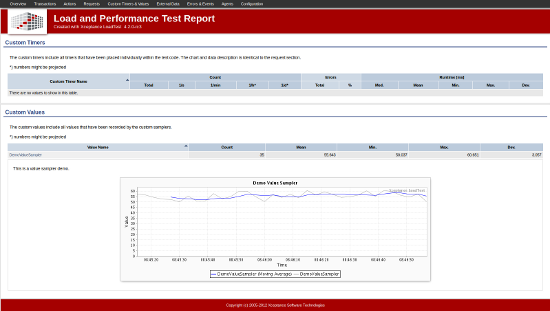 Custom Sampler Report
{kind=link}
External Data Report
As an alternative to custom values, the XLT report generator lets you include external data files in the report. This can be used if it’s impossible to access the external data source directly during the load test runtime.
Parser
To read the external files and integrate them into the load test report, a Parser class is needed for each type of file or format. XLT provides a set of predefined parsers for CSV files. If you plan to integrate some other file formats or reports, you have to write your own parser class extending AbstractLineParser in com.xceptance.xlt.api.report.external.
- SimpleCsvParser: Extracts the data by splitting each line into the comma-separated values.
- HeadedCsvParser: Like SimpleCsvParser, but additionally names the values by the column value in the first line.
XLT ships with a demo test suite demo-external-data to demonstrate the use of external data in load test reports. As an example of advanced parser classes, two parsers for handling logs of the command line tool iostat can be found in the source directory of the test suite project <XLT>\samples\demo-external-data\src in package com.xceptance.xlt.report.external.
- IostatCpuParser: parses the CPU section of a log of command line tool iostat (with parameter -t to log time stamps).
- IostatDeviceParser: parses the Device section of a log of command line tool iostat (with parameter -t to log time stamps).
Configuration
Location
The configuration file externaldataconfig.xml is expected in the result directory of the respective load test run. If you can’t locate it there, it will get looked up in the master controller’s config directory. See the provided sample file <XLT\config\externaldataconfig.xml.sample and adapt it to your needs after removing the .sample extension. At least adapt the source file and columns/indexes. The configuration file modified for the demo-external-data project is located at <XLT>\samples\demo-external-data\results\20110621-101041.
Structure
The configuration defines files to parse by a specified parser and the column indexes to mark relevant data and other settings like headlines, descriptions, or colors to enrich the chart/table information for the report.
file: Define which file gets processed by which parser. If you don’t set a file encoding, the default encoding UTF-8 will be used.charts: You can configure one or more charts. The minimum chart configuration requires the chart title and the column indexes of the series. See the following list of available attributes and their default values:- Chart defaults:
- title [mandatory and unique] (chart title)
- yAxisTitle/yAxisTitle = "Values" (title of the 1st/2nd y-axis (value axis))
- xAxisTitle = "Time" (title of the x-axis (time axis))
- Series defaults:
- valueName [mandatory] (e.g. column index for SimpleCvsParser or column headline for HeadedCsvParser)
- title = [_valueName]_ (series title)
- axis = "1" (number of axes (1 or 2))
- color/averageColor = [a color of internal default color set] (hex based RGB color e.g. “#1a2b3f”)
- average = [no average] (percentage of data used to build an average value)
- Chart defaults:
tables: You can configure one or more tables. The minimum table configuration requires the table title and the column indexes of the rows. See the following list of available attributes and their default values:- Table defaults:
- title [mandatory] (table title)
- type = "minmaxavg" (currently, there is only this type supported printing the minimum, maximum and average of read column values)
- Row defaults:
- valueName [mandatory] (e.g. column index for SimpleCvsParser or column headline for HeadedCsvParser)
- title = [_valueName]_ (table title)
- description = [no description]
- unit = [no unit] (unit of measurement for parsed data)
- Table defaults:
properties: You may provide properties to the report generation. In case you extend a parser or write your own, this is a good way to provide some free properties.
Currently, two properties are supported by the framework to convert a human readable date/time to a time stamp (parser.dateFormat.pattern and parser.dateFormat.timeZone). If the time stamp is already a UNIX time stamp, the pattern isn’t required. It’s strictly recommended to adapt these properties to your needs. See java.text.SimpleDateFormat for more information on date/time patterns.
Another supported property is parser.csv.separator that describes the expected field separator character in CSV files. By default, it’s a comma (,).
For Tab separated CSV files, use	as the value of parser.csv.separator.
Command Reference
This chapter thoroughly illustrates the commands available in XLT when you either use the Scripting API or Script Developer. As both these components almost support the exact same commands with the same syntax, they are subsumed under this chapter. It provides useful information on the general structure of commands as well as tables and examples for each command. If you plan on using the XLT Scripting API, see the additional hints at the end of this chapter. For information on the other XLT components, see the chapters named after them.
Command Structure
Commands have a name and may have a target parameter and/or a value parameter, depending on the command in question. Most commands somehow deal with parts of an HTML page, so the target of the command is taken to identify the element on the page. A command may contain a delay, for example the number of milliseconds to wait to continue the test after clicking on an element. A command may also deal with some text that should be matched and that is given as argument.
The exact parameters are given for each command in the command’s description. In general, a command takes on the following forms:
- CommandName(),
- CommandName(Target),
- CommandName(Value), or
- CommandName(Target, Value)
The target is used to identify a part of an HTML page and the value is some string or numerical value.
The parameters define:
- which element of an HTML page should be identified and how it should be identified (see Locators ),
- which text should be matched and how it should be matched (see Text Matching ),
- other parameters, such as a delay.
Note that even with the three parameter types listed above, a command has at most two parameters.
A command may interpret its parameters differently and deal with them in a very specific way. For example, the command “storeEval(target, value)” interprets its target as JavaScript expression.
Locators
Almost all commands operate on a certain item. Most of the time, this item is an element on a page, but it may also be a window or a frame. To identify, or locate, the item in question, you can specify locator expressions defining which item should be located and by which means.
The general syntax of a locator expression is: <strategy>=<value>
The strategy defines how to search for an item, the value defines which item is to be addressed. For instance, to locate an element with ID attribute “foo”, you would specify this locator: id=foo
Note that the strategy (including the following equal sign) can be omitted. In that case, a built-in default strategy is used. However, it is recommended not to omit the strategy. It may save you some characters to type, but at the same time you would always need to remember the default strategy for a certain locator type.
If the evaluation of the locator results in no elements being identified, the command will fail. If, on the other hand, the locator identifies more than one element, the first element found will be used.
Currently, there are four types of locators:
- element locators: locate elements on an HTML page
- attribute locators: locate element attributes
- option locators: locate
<option>elements inside a<select>element on an HTML page - window locators: locate a browser window
- frame locators: locate a frame window on an HTML page
See the sections below for their detailed explanation.
Element Locators
Elements can be identified by one of the following strategies:
| css | Identifies the first element matching the passed CSS selector. The syntax is: css=<CSS selector> |
| dom | Identifies the first element matching the passed DOM expression. The syntax is: dom=<DOM expression> |
| id | Identifies the first element matching the passed ID. The syntax is: id=<element id> |
| identifier | Identifies an element by its ID, and then by name. The syntax is: identifier=<element id/name> |
| link | Identifies the first link matching the passed link text. The syntax is: link=<link text>Note that the text of a hidden link is empty! |
| name | Identifies the first element matching the passed name. The syntax is: name=<element name> |
| xpath | Identifies the first element matching the passed XPath expression. The syntax is: xpath=<XPath expression> |
| (default) | When no locator strategy is specified, it will behave the same as
|
Note that not all strategies are applicable to all elements. For instance, the link strategy makes only sense when locating <a> elements.
Attribute Locators
When accessing an element’s attribute, you need to specify two things: where the element itself can be found and the name of the attribute. When you know both of them, you just need to put them together with an @-character.
Thus, all attribute locators have the form: <Element Locator>@AttributeName, where <Element Locator> is an arbitrary element locator as defined above.
Option Locators
When dealing with select boxes, you will need two locators: one that identifies the select element, and one that identifies the option element(s) in question. The first locator is a normal element locator. For an option locator, you can use the following strategies:
| id | Same as for the element locator strategy id. |
| index | Identifies the option with the passed index (counting starts with 0). The syntax is: index=<element index> |
| label | Identifies the option with the passed text label. The syntax is: label=<element label>Note that the label of a hidden option is empty! |
| value | Identifies the option with the passed value. The syntax is: value=<element value> |
| (default) | Same as label strategy. The syntax is: <element label> |
When you use any of the commands addSelection or removeSelection, be aware that all options identified by the given option locator will be processed, not just the first one.
Window Locators
Windows can be identified by one of the following strategies:
| name | Identifies the window with the passed name. The syntax is: name=<window name> |
| title | Identifies the window with the passed title text. The syntax is: title=<window title> |
| (default) | Tries to find a window by name first, then by title. The syntax is: <window name/title> |
Frame Locators
Frames can be identified in two ways:
- locating the frame via special document properties, or
- locating the corresponding
<frame>element on the page.
The latter can be achieved by a regular element locator; the other strategies work as follows:
| index | Identifies the frame having the passed index (counting starts with 0) relative to the current page. The syntax is: index=<frame index> |
| relative=parent | Identifies the parent window of the current frame. |
| relative=top | Identifies the top level window of the current frame. |
| See Element Locators for additional strategies. | |
Text Matching
Many commands check for the presence of some text on the page or wait for some text to appear. Since the text displayed on the page may not always be static but contain dynamic parts (such as the user name in “Welcome, Mr. John Smith!”), the provided validation text needs to be somewhat blurry as well (for example, “Welcome, Mr. *!”). This is where text-matching expressions come into play.
The general syntax of a text-matching expression is: <strategy>:<text pattern>
The strategy defines which pattern syntax is used in the text pattern following the colon. For instance, if you want to use the famous “?” and “*” wildcard characters in the text pattern, you need to specify an expression such as this one: glob:Welcome, Mr. *!
Note that the strategy (including the subsequent colon) can be omitted. In that case, a built-in default strategy is used.
Currently, there are three text-matching strategies:
| glob | The asterisk and question mark are meta-characters, everything else is treated as normal character. A question mark indicates that there has to be exactly one character and that it may be an arbitrary one, an asterisk indicates an arbitrary number (including zero) of arbitrary characters. For example, use “?all*” to match “ball”, “wall”, “+all” regardless of what follows, and not to match “small” (which required “??all” or “??all*”). Meta-characters can be used at arbitrary positions inside the text. For instance, use link=result*.css to find the first link starting with “result” and ending with “.css”, regardless of what there is between “result” and “.css”. |
| regexp | Indicates that the given text is a regular expression that has to be matched by the inspected text. For example, use link=regexp:\d+ to find the first link with the link’s text consisting of an arbitrary number of digits. |
| regexpi | Indicates that the given text is a regular expression that has to be matched by the inspected text. However, in contrast to regexp, the case of the inspected text is ignored when checking for a match. |
| exact | Indicates that the given text has to exactly match. For instance, use link=exact:?all to find the link with the text “?all”. |
| (default) | Same as glob. |
If your text pattern text contains a colon, you have to specify an appropriate text-matching strategy since the colon character is used as separator to parse the text-matching strategy and text pattern from the input string.
Be aware that prior to comparing the actual text with the expected text, each sequence of whitespace (spaces, non-breaking spaces, line breaks, or tabs) is replaced by a single space in both the actual text and the expected text. This way, comparisons are independent of the actual amount of whitespace.
Further note that depending on the command in question, the same expression is treated slightly different. Some commands check whether the text (of the located element / page) matches the expression, while others check that the text contains a subsequence (may be the text itself) matching the expression. For instance, with exact=user the text No users found! may or may not match depending on the command.
Commands
Commands can be categorized. Some of them interact with the elements of an HTML page (for example, clicking on a button), some verify things (for example, that the page’s title matches the expected one), some wait for a condition to be fulfilled (for example, waiting for a specific element to become visible), and some store data in variables so that it can be reused later on. Finally, there is a left-over category for miscellaneous commands.
Commands in different categories may nevertheless be somehow related. Assume, for instance, you want to do something with the text shown on an HTML page. Then you can use assertText to check whether the text occurs on the current page, but you can also use waitForText to wait for the text to show up on the page (it may be inserted by an AJAX call). Furthermore, storeText lets you store the text of the targeted element in a variable for later access.
The following section explains the available commands and their respective categories. Within each category, they are listed in alphabetical order; examples are provided for better comprehension.
Note that each of the assertXXX and waitForXXX commands has the negated counterparts assertNotXXX, and waitForNotXXX, respectively. In these cases, references to previously explained commands are used to avoid lengthy repetitions.
Commands That Interact With A Page
Commands that change the page or trigger events (for example, by clicking on a link).
addSelection
Selects options in a multi-selection element. It selects all options that match the command value, so it may select several! Will abort the test with an error if no option matching the command value is found, the element is no multi-selection element, the multi-select element is disabled, or if it doesn’t support multi-selection. Accepts any element locator except the link locator for the multi-select item and any option locator for the value.
Example: adddSelection(id=RadioChannel,index=1)
check
Checks the targeted element. The element must be an input element, of type radio or checkbox , and enabled. Will abort the test with an error otherwise. Accepts any element locator.
Example: check(id=beautifulWrapping)
checkAndWait
Same as check but waits until page load triggered by checking the targeted input element is completed or until the configured timeout is reached. Will abort the test with an error if no page load is triggered and/or the timeout is reached.
Example: checkAndWait(id=beautifulWrapping)
click
Clicks on the targeted element. Be aware that the click command doesn’t wait for a page to be loaded, so don’t use it to click on a link. In that case, use clickAndWait (otherwise, you’re likely to end up with only a few parts of the new parts being loaded). Will abort the test with an error if there is no element matching the given locator. Accepts any element locator.
Example: click(id=productsLink)
clickAndWait
Same as click but waits until page load triggered by clicking the targeted element is completed or the configured timeout is reached. Will abort the test with an error if no page load is triggered and/or the timeout is reached.
Example: clickAndWait(id=productsLink)
doubleClick
Double-clicks the targeted element. Will abort the test with an error if there is no element matching the given locator. Accepts any element locator.
Example: doubleClick(id=confirm)
doubleClickAndWait
Same as doubleClick but waits after the double-click for the page load triggered by this action to be completed. Will abort the test with an error if no page load is triggered and/or the configured timeout is reached.
Example: doubleClickAndWait(id=confirm)
mouseDown
Clicks on the targeted element with the left mouse button and doesn’t release it. Will abort the test with an error if there is no element matching the given locator or the element is not visible. Accepts any element locator.
Example: mouseDown(id=confirmationButton)
mouseDownAt
Clicks with the left mouse button on the targeted element at the given offset position and doesn’t release it. Will abort the test with an error if there is no element matching the given locator, the element is not visible or the given offset position is invalid.
Accepts any element locator. The offset position has to be specified as x,y where x and y denote the offsets (number of pixels) to add to the x- and y-coordinate of the target element position.
Example: mouseDownAt(id=confirmationButton, 0,0)
mouseMove
Moves the mouse to the targeted element. Will abort the test with an error message if there is no element matching the given locator or the element is not visible. Accepts any element locator.
Example: mouseMove(id=confirmationButton)
Note that the mouse is not actually moved but the proper JavaScript event is triggered.
mouseMoveAt
Moves the mouse to the targeted element at the given offset position. Will abort the test with an error message if there is no element matching the given locator, the element is not visible or the given offset position is invalid.
Accepts any element locator. The offset position has to be specified as x,y where x and y denote the offsets (number of pixels) to add to the x- and y-coordinate of the target element position.
Example: mouseMoveAt(id=confirmationButton, 0,0)
mouseOut
Moves the mouse away from the targeted element. The mouse hovers to the current page’s body and the locator is ignored. However, still trying to identify an element using the locator, it will abort the test with an error if such an element can’t be found or the element is not visible. Accepts any element locator. Note that you cannot move the mouse outside the current page’s HTML body.
Example: mouseOut(id=confirmationButton)
mouseOver
Hovers the mouse over the targeted element. Will abort the test with an error if there is no element matching the given locator or the element is not visible. Accepts any element locator.
Example: mouseOver(id=confirmationButton)
Note that CSS hover events are not triggered by mouserover since these are implemented using native browser events.
mouseUp
Releases the left mouse button on the targeted element. Will abort the test with an error if there is no element matching the given locator or the element is not visible. Accepts any element locator.
Example: mouseUp(id=confirmationButton)
mouseUpAt
Releases the left mouse button on the targeted element at the given offset position. Will abort the test with an error if there is no element matching the given locator, the element is not visible or the given offset position is invalid.
Accepts any element locator. The offset position has to be specified as x,y where x and y denote the offsets (number of pixels) to add to the x- and y-coordinate of the target element position.
Example: mouseUpAt(id=confirmationButton, 0,0)
removeSelection
Deselects options in the targeted multi-selection element. Deselects all options matching the command value, so it may deselect several! Will abort the test with an error if no option matching the command value is found, the element is no multi-selection element, the multi-select element is disabled, or if it doesn’t support multi-selection. Accepts any element locator except the link locator for the multi-select element and any option locator for the value.
Example: removeSelection(id=RadioChannel,index=1)
select
Selects options in the targeted element. Will abort the test with an error if no element matches the given locator, the element is not an HTML select element, or if it is disabled. Doesn’t affect disabled options. If the targeted element is a multi-select element, all other options except the ones identified by the locator will be deselected. Accepts any element locator for the target and any option locator for the command value.
Example: select(id=RadioChannel,index=1)
selectAndWait
Same as select but waits for the page load triggered by the selection to be completed or for the configured timeout to be reached. Will abort the test with an error if no page load is triggered and/or the configured timeout is reached.
Example: selectAndWait(id=RadioChannel,index=1)
submit
Submits the targeted form. Will abort the test with an error if the element is not an HTML form. Accepts any element locator.
Example: submit()
submitAndWait
Same as submit but waits for the page load triggered by the form submit to be completed or for the configured timeout to be reached. Will abort the test with an error if the targeted form can’t be found, if no page load is triggered, and/or if the configured timeout is reached.
Example: submitAndWait()
type
Types the command value into the targeted element. Will abort the test with an error if no element can be identified using the locator. Accepts any element locator.
Example: type(id=quantity,1)
typeAndWait
Same as type but waits for the page load triggered by typing the given string to be completed. Will abort the test with an error if no page load is triggered and/or if the configured timeout is reached.
Example: typeAndWait(id=quantity,1)
uncheck
Deselects the targeted checkbox or radio button. Will abort the test with an error if no element matches the given locator, the element is not an input element, not of type checkbox or radio, or if it is disabled. Accepts any element locator.
Example: uncheck(id=birthdayWrapping)
uncheckAndWait
Same as uncheck but waits for the page load triggered by uncheck to be completed. Will abort the test with an error if no page load is triggered and/or the configured timeout is reached.
Example: uncheckAndWait(id=birthdayWrapping)
Commands That Make An Assertion
See below for an explanation of all assertXXX and assertNotXXX commands. While assertXXX commands check that the given condition evaluates to true, assertNotXXX commands check that the given condition evaluates to false.
assertAttribute
Asserts that an element’s attribute value matches the given expression. Will abort the test with an error message in case there is no element matching the given locator, the element doesn’t have the requested attribute set or the value of the attribute doesn’t match the given text expression.
Example: assertAttribute(id=logo@title,glob:Link to*)
assertChecked
Asserts that an element is checked. Will abort the test with an error if there is no element matching the element locator, the found element is neither a checkbox nor a radio element, or if it is not checked.
Example: assertChecked(id=termsAndConditions)
assertClass
Asserts that the class attribute of the element in question contains the given class(es). Multiple classes have to be specified as white-space separated string. Will abort the test with an error if there is no element matching the given element locator, the found element doesn’t have a class attribute or its class attribute doesn’t contain (any of) the given class(es).
Example: assertClass(id=header,emphasized clearfix)
assertElementCount
Asserts that the number of matching elements is equal to the given value. Will abort the test with an error message if the number of matching element is not equal to the given value. Accepts any element locator.
Example: assertElementCount(css=.small3.span4, 4)
assertElementPresent
Asserts that an element is present on the page. Will abort the test with an error if there is no element matching the element locator. Accepts any element locator.
Example: assertElementPresent(id=ProductDetails)
assertEval
Asserts that the result of evaluating the command’s target as javascript expression matches the given text pattern. Will abort the test with an error message if the result of the evaluation doesn’t match the given text pattern.
Example: assertEval(window.location,regexp:^https?://)
assertLoadTime
Asserts that the time needed to load the current page doesn’t exceed the given value. Will abort the test with an error if page loading lasts too long. Has no target (because it aims at the current page) but only a mandatory value representing the number of milliseconds the page load may last at most.
Example: assertLoadTime(15000)
assertNotAttribute
Asserts that an element’s attribute value does not match the given expression. Will abort the test with an error message in case there is no element matching the given locator, the element doesn’t have the requested attribute set or the value of the attribute matches the given expression.
Example: assertNotAttribute(id=logo@title,glob:Return to*)
assertNotChecked
Asserts that the given element is not checked. Will abort the test with an error if there is no element matching the given element locator, the found element is neither a checkbox nor a radio element, or if it is checked.
Example: assertNotChecked(name=sameAsBilling)
assertNotClass
Asserts that the class attribute of the element in question does not contain (any of) the given class(es). Will abort the test with an error if there is no element matching the given element locator, the found element doesn’t have a class attribute or its class attribute contains (any of) the given class(es).
Example: assertNotClass(id=header,odd hotfix)
assertNotElementCount
Asserts that the number of elements matching the given element locator is not equal to the given value. Will abort the test with an error message if the number of matching elements is equal to the given value.
Example: assertNotElementCount(xpath=/html/body, 2)
assertNotElementPresent
The inversion of assertElementPresent, thus the syntax is the same except the command name.
Example: assertNotElementPresent(id=ProductDetails)
assertNotEval
The inversion of assertEval, thus the syntax is the same except the command name.
Example: assertNotEval(document.title,Homepage)
assertNotSelectedId
Asserts that the ID of no selected option of the given select element matches the argument pattern. Will abort the test with an error if no element is found, the found element is not an HTML select, or if it has no options. Accepts any element locator for the target and any text-matching approach for the command value.
Example: assertNotSelectedId(id=shippingMethod,UPS)
assertNotSelectedIndex
Asserts that the index of no selected option of the given select element matches the argument index. Will abort the test with an error if no element is found, the found element is not an HTML select, or if it has no options. Accepts any element locator for the target. The indices start with 0.
Example: assertNotSelectedIndex(id=shippingMethod,1)
assertNotSelectedLabel
Asserts that the label of no selected option of the given select element matches the argument pattern. Will abort the test with an error if no element is found, the found element is not an HTML select, or if it has no options. Accepts any element locator for the target and any text-matching approach for the command value.
Example: assertNotSelectedLabel(id=shippingMethod,UPS)
assertNotSelectedValue
Asserts that the value of no selected option of the given select element matches the argument pattern. Will abort the test with an error if no element is found, the found element is not an HTML select, or if it has no options. Accepts any element locator for the target and any text-matching approach for the command value.
Example: assertNotSelectedValue(id=shippingMethod,UPS)
assertNotStyle
Asserts that the actual element’s style doesn’t match the given CSS style declaration(s). Will abort the test with an error message if there is element matching the given locator or the element’s actual style matches (any of) the given CSS style declaration(s).
Please notice that any size must be given in pixels and colors must be specified in rgb notation. Furthermore, browser-specific style rules may apply which might add a browser dependency to your tests. Also keep in mind that an element’s actual style may be influenced by the browser’s viewport properties (height, width etc.).
Example: assertNotStyle(id=headline,color:rgb(255, 0, 0))
assertNotText
Asserts that the command value (=text) doesn’t match the text of the identified element. Will abort the test with an error if the element’s text matches the value text or if there is no element matching the target expression. Accepts any element locator for the command target and any text-matching approach for the command value. Note that hidden elements have an empty string as text!
Example: assertNotText(id=availability,regexp:.*out of stock.*)
assertNotTextPresent
Asserts that there is no text on the page matching the command value (=text). Will abort the test with an error if the page’s text matches the text. Has no target (because it aims at the current page). Accepts any text-matching approach for the value. Differs to assertNotText in so far that the text value is matched if the page does contain a text snippet matching the text value, even if you use the exact text-matching approach.
Example: assertNotTextPresent(exact:? results returned) (also matches if the text is “No results returned!” because “o results returned” is exactly matched by the command value)
assertNotTitle
Asserts that the page title doesn’t match the command value. Like for assertNotTextPresent, there is no target because it aims at the current page’s title. Unlike assertNotTextPresent, however, the text must strictly match the command value (which nevertheless may contain wildcards and such things). Will abort the test with an error if the current page’s title matches the command value. Accepts any text-matching approach.
Example: assertNotTitle(exact:? results returned) (doesn’t match if the title is “0 results returned!” due to the exclamation mark)
assertNotValue
Asserts that the value of the element identified by the locator doesn’t match the command value. Accepts any element locator for the target and any text-matching approach for the command value.
Example: assertNotValue(id=shippingMethods,UPS)
assertNotVisible
Asserts that the element identified by the locator is currently not displayed. Accepts any element locator.
Example: assertNotVisible(id=shippingMethods)
assertNotXpathCount
Asserts that the number of elements matching the locator doesn’t equal the command value. Will abort the test with an error if the number of matching elements equals the command value. Only accepts an xpath expression for the locator.
Example: assertNotXpathCount(xpath=a[.=‘continue’],1)
assertPageSize
Asserts that the size of the current page doesn’t exceed the given number of bytes specified in the command value. Will abort the test with an error if the page size is greater than the given value. Just as for the other page-related commands, there is no locator. Make sure to specify the value using an integer number, floating-point numbers result in an error and test abortion.
Example: assertPageSize(1024)
assertSelectedId
The exact inversion of assertNotSelectedId (regarding the behavior, not the syntax).
Example: assertSelectedId(id=shippingMethod,UPS)
assertSelectedIndex
Asserts that the index of at least one selected option of the given select element matches the argument index. Will abort the test with an error if no element is found, the found element is not an HTML select, or if it has no options. Accepts any element locator for the target; also accepts any text-matching approach for the command value, but it only makes sense to give integers as arguments. The indices start with 0.
Example: assertSelectedIndex(id=shippingMethod,1)
assertSelectedLabel
The exact inversion of assertNotSelectedLabel (regarding the behavior, not the syntax).
Example: assertSelectedLabel(id=shippingMethod,UPS)
assertSelectedValue
The exact inversion of assertNotSelectedValue (regarding the behavior, not the syntax).
Example: assertSelectedValue(id=shippingMethod,UPS)
assertStyle
Asserts that the actual element’s style matches the given CSS style declaration(s). Multiple style declarations have to be specified as semicolon-separated string. Will abort the test with an error message if there is element matching the given locator or the element’s actual style doesn’t match (any of) the given CSS style declaration(s).
Example: assertStyle(xpath=/html/body,font-size:12px)
assertText
The exact inversion of assertNotText. The syntax remains the same except the command name.
Example: assertText(id=availability,regexp:.* in stock.*)
assertTextPresent
The exact inversion of assertNotTextPresent. The syntax remains the same except for the command name.
Example: assertTextPresent(exact:? results returned)
assertTitle
The exact inversion of assertNotTitle. The syntax remains the same except for the command name.
Example: assertTitle(? results returned)
assertValue
Asserts that the value of the element identified by the locator matches the command value. Accepts any element locator for the target and any text-matching approach for the command value.
Example: assertValue(id=shippingMethods,UPS)
assertVisible
Asserts that the element identified by the locator is currently displayed. Accepts any element locator.
Example: assertVisible(id=shippingMethods)
assertXpathCount
The exact inversion of assertNotXpathCount. The syntax remains the same except for the command name.
Example: assertXpathCount(xpath=a[.=‘continue’], 1)
Commands That Wait For A Condition To Become True/False
See below for a description of all waitForXXX and waitForNotXXX commands. While waitForXXX commands wait for the condition to become true, waitForNotXXX commands wait for the condition to become false. The waiting time has a default value that can be overridden using the setTimeout command (see here ).
waitForAttribute
Waits for the element’s attribute value to match the given text pattern. Will abort the test with an error message if there is no element found, the element doesn’t have the requested attribute set or the attribute value doesn’t match the given text pattern after the timeout is reached.
Example: waitForAttribute(id=logo@title,Homepage)
waitForChecked
Waits for the given element to be checked. Will abort the test with an error if the timeout is reached and there is no such radio or checkbox element that is checked.
Example: _waitForChecked(name=shipAsGift)
waitForClass
Waits until the given element’s class attribute contains (all of) the given class(es). Will abort the test with an error message if there is no element found, the found element doesn’t have the class attribute set or the value of the class attribute doesn’t contain (any of) the given class(es) after the timeout is reached.
Example: waitForClass(id=errormessage,hidden)
waitForElementCount
Waits until the number of elements matching the given locator is equal to the given value. Will abort the test with an error message if the number of matching elements is not equal to the given value after the timeout is reached.
Example: waitForElementCount(link=More, 3)
waitForElementPresent
Waits for the targeted element to be present on the current page. Will abort the test with an error if the timeout is reached and no such element is present. Accepts any element locator.
Example: waitForElementPresent(id=shippingPanel)
waitForEval
Waits for the result of evaluation the command’s target as javascript expression to match the given text pattern. Will abort the test with an error message if the evaluation result doesn’t match the given text pattern after the timeout is reached.
Example: waitForEval(document.forms.item(0).name,Search)
waitForNotAttribute
The exact inversion of waitForAttribute (regarding the behavior, not the syntax).
Example: waitForNotAttribute(link=Toddler@style, regexp:display\s*:\s*none)
waitForNotChecked
Waits for the given element to be unchecked. Will abort the test with an error if the timeout is reached and there is no such radio or checkbox element that is not checked.
Example: _waitForNotChecked(name=newsletter)
waitForNotClass
Waits until the given element’s class attribute does not contain (any of) the given class(es). Will abort the test with an error message if there is no element found, the found element doesn’t have the class attribute set or the value of the class attribute contains (any of) the given class(es) after the timeout is reached.
Example: waitForNotClass(id=errormessage,hidden)
waitForNotElementCount
Waits until the number of elements matching the given locator is not equal to the given value. Will abort the test with an error message if the number of matching elements is equal to the given value after the timeout is reached.
Example: waitForNotElementCount(link=More, 3)
waitForNotElementPresent
The exact inversion of waitForElementPresent (regarding the behavior, not the syntax).
Example: waitForNotElementPresent(id=minicart)
waitForNotEval
The exact inversion of waitForEval (regarding the behavior, not the syntax).
Example: waitForNotEval(window.frames.length,3)
waitForNotSelectedId
Waits for no selected option of the given select element to match the argument pattern as ID. The test will abort with an error if no element is found, the found element is not an HTML select, or if it has no options. Accepts any element locator for the target and any text-matching approach for the command value.
Example: waitForNotSelectedId(id=shippingMethod,UPS)
waitForNotSelectedIndex
Waits for no selected option of the given select element to match the argument index. Will abort the test with an error if no element is found, the found element is not an HTML select, or if it has no options. Accepts any element locator for the target. The indices start with 0.
Example: waitForNotSelectedIndex(id=shippingMethod,1)
waitForNotSelectedLabel
Waits for no selected option of the given select element to match the argument pattern as label. Will abort the test with an error if no element is found, the found element is not an HTML select, or if it has no options. Accepts any element locator for the target and any text-matching approach for the command value.
Example: waitForNotSelectedLabel(id=shippingMethod,UPS)
waitForNotSelectedValue
Waits for no selected option of the given select element to match the argument pattern as value. Will abort the test with an error if no element is found, the found element is not an HTML select element, or if it has no options. Accepts any text-matching approach for the command value.
Example: waitForNotSelectedValue(id=shippingMethod,UPS)
waitForNotStyle
Waits for the actual style of the given element to not match (any of) the specified CSS style declaration(s). Will abort the test with an error message if element is found or the actual style of the element matches (any of) the given CSS style declaration(s) after the timeout is reached.
Example: waitForNotStyle(name=email,color:rgb(255, 0, 0))
waitForNotText
The exact inversion of waitForText (regarding the behavior, not the syntax).
Example: waitForNotText(id=current,regexp::.* rainy.*)
waitForNotTextPresent
The exact inversion of waitForTextPresent (regarding the behavior, not the syntax).
Example: waitForNotTextPresent(weather forecast)
waitForNotTitle
The exact inversion of waitForTitle (regarding the behavior, not the syntax).
Example: waitForNotTitle(exact:Product Details Page)
waitForNotValue
Waits for the targeted element to have its value not matching the command value. Will abort the test with an error if the timeout is reached and no element is found for the given element locator or the value of the found element does match the command value.
Example: waitForNotValue(name=surname,Doe)
waitForNotVisible
Waits for the targeted element to become invisible. Will abort the test with an error if the timeout is reached and no element is found for the given element locator or the found element is visible.
Example: waitForNotVisible(id=DialogOverlay)
waitForNotXpathCount
The exact inversion of waitForXpathCount (regarding the behavior, not the syntax).
Example: waitForNotXpathCount(id('lines'),5)
waitForPageToLoad
Waits for the page to load. Aborts the test with an error if the timeout is reached and page load hasn’t been completed. Has neither a target nor a command value.
Example: waitForPageToLoad()
waitForPopUp
Waits for the first pop up to be completely loaded. Will abort the test with an error if the timeout is reached and no pop up has been loaded.
Example: waitForPopUp()
waitForPopUp
Same as waitForPopUp but uses the given value as timeout instead.
Example: waitForPopUp(,5000)
waitForPopUp
Same as the no parameter-variant of waitForPopUp but waits for the targeted pop up instead. Accepts any window locator.
Example: waitForPopUp(name=popUpConfirmation)
waitForPopUp
Same as the variant of waitForPopUp having a target only but also has a value that is interpreted as timeout to use. Accepts any window locator.
Example: waitForPopUp(name=popUpConfirmation,5000)
waitForSelectedId
The exact inversion of waitForNotSelectedId (regarding the behavior, not the syntax).
Example: waitForSelectedId(id=shippingMethod,UPS)
waitForSelectedIndex
Waits for the index of at least one selected option of the given select element to match the argument index. Will abort the test with an error if no element is found, the found element is not an HTML select element, or if it has no options. Accepts any element locator for the target; also accepts any text-matching approach for the command value but it only makes sense to give integers as arguments. The indices start with 0.
Example: waitForSelectedIndex(id=shippingMethod,1)
waitForSelectedLabel
The exact inversion of waitForNotSelectedLabel (regarding the behavior, not the syntax).
Example: waitForSelectedLabel(id=shippingMethod,UPS)
waitForSelectedValue
The exact inversion of waitForNotSelectedValue (regarding the behavior, not the syntax).
Example: waitForSelectedValue(id=shippingMethod,UPS)
waitForStyle
The exact inversion of waitForStyle (regarding the behavior, not the syntax).
Example: waitForStyle(name=phone,font-style:italic)
waitForText
Waits for the targeted element to have its text matching the command value (text matching is done the same way as in assertNotText). Will abort the test with an error if the timeout is reached and the text doesn’t match the command value. Accepts any element locator and any text-matching approach.
Example: waitForText(id=registerButton,Register)
waitForTextPresent
Waits for the current page’s text to have its text matching the command value. Will abort the test with an error if the timeout is reached and the text doesn’t match the command value. Accepts any text-matching approach. As with assertTextPresent, it’s sufficient for the page to contain a text snippet such that the snippet matches the command value.
Example: waitForTextPresent(exact:Registration completed)
waitForTitle
Waits for the page’s title to match the command value. Will abort the test with an error if the timeout is reached and the title doesn’t match the command value. Has no target and accepts any text-matching approach in the command value.
Example: waitForTitle(exact:Registration completed)
waitForValue
Waits for the targeted element to have its value matching the command value. Will abort the test with an error if the timeout is reached and no element is found for the given element locator or the value of the found element doesn’t match the command value.
Example: waitForValue(phone,regexp:\d+)
waitForVisible
Waits for the targeted element to become visible. Will abort the test with an error if the timeout is reached and no element is found or the found element is visible.
Example: waitForVisible(id=minicart_items)
waitForXpathCount
Waits for the page to have exactly the number of elements matched by the command value. Will abort the test with an error if the timeout is reached and the number of elements that can be identified using the locator doesn’t match the command value. Accepts only XPath expressions as locators.
Example: waitForXPathCount(//*[contains(., ‘offer’)],3)
Commands That Store Data
Store commands are used to store data in variables for later reuse. For example, you may click on a link pointing to the details of a specific product in an online store. To check that the details page for the correct product is shown, you need the product name from the previous page. If you define a variable productName with a store command, you can use it later on by typing ${productName}.
Note that for all store commands the variable name is given as the command’s value. Thus, for the simple store command the variable value is given as the command target, for the storeEval command it is the expression to evaluate.
store
Stores the text given as command target in the variable named after the command value. Can be used to define a value once and use it in several places. If you use random numbers, you may need an opportunity to access the randomly generated value again for checks (calling for a random again will only give the same value by coincidence).
Example: store(MICHAEL,foo)
storeAttribute
Stores the value of the given element’s attribute into the variable named after the command value.
Example: storeAttribute(name=cal@data-uuid, uuid)
storeElementCount
Stores the number of elements that match the given locator into the variable named after the command value.
Example: storeElementCount(css=.active, nbActives)
storeEval
Has no real target, but interprets it as JavaScript that is executed instead. Uses the command value as name of the variable in which to store the result of the JavaScript execution. Note that this will only have an effect if JavaScript is enabled during the test run!
Example: storeEval(SOME_JAVASCRIPT, foo)
storeText
Stores the text of the targeted element in the variable named after the command value. Accepts any element locator.
Example: storeText(id=cartBalance, foo)
storeValue
Stores the value (in case of a <textarea> the contained text) of the element identified by the given locator in the variable named after the command value.
Example: storeValue(id=cartBalance, foo)
storeXpathCount
Stores the number of elements identified by using the locator in the variable named after the command value. Interprets the whole target as XPath that should be used to identify elements.
Example: storeXpathCount(id(‘emptyDiv’), foo)
Miscellaneous Commands
close
Closes the browser window and thus aborts the test (if the browser has remaining tabs, the test will just pause, but it doesn’t make any sense to continue it). This is likely to be changed such that the close command may only be called as the last statement in a test. Has neither a target nor a command value.
createCookie
Creates a cookie. This command is exceptional such that it neither has a “normal” target nor a “normal” command value, but takes two arguments instead. The first one has to be in the form key=_value_, the second one can be max_age=an integer or path=a path or another arbitrary expression. If the second argument has the form max_age=an integer, the cookie will be stored with an expiration of the given integer value as seconds in the future. If the second argument has the form path=a path, the cookie will be visible to a path (default is /) only. If the second argument has another form, it will be ignored.
Example: createCookie(stokkeMovieShown=true,max_age=123456789000)
deleteAllVisibleCookies
Deletes all cookies for the current domain. Has neither a target nor a value.
Example: deleteAllVisibleCookies()
deleteCookie
Deletes the cookie named after the first argument. Similar to createCookie, this instruction has two arguments. Currently, the second argument is ignored, the first one has to be a valid cookie name.
Example: deleteCookie(stokkeMovie,isIgnored)
open
Opens the URL given as command value. Has no target. The URL can be relative or absolute.
If you specify a relative URL, it will be resolved using the currently active base URL, which is usually the test case’s base URL.
Example: open(article.php?story=2012020309143182) (where the base URL is http://www.groklaw.net/)
pause
Causes the test to pause the given amount of time in milliseconds. Has no target. The time to pause has to be given as integer number as command value.
Example: pause(5000)
selectFrame
Switches to the targeted frame. The relative approaches will never cause the test to abort with an error. The other approaches will do so if no frame is identified using them. Accepts any frame locator. Furthermore, you can simply use the frame’s name or ID.
Example: selectFrame(index=1)
selectWindow
Similar to selectWindow below but has no parameter. Instead, it searches for the window having no name or no title, which is often the top-level window. Will abort the test with an error if there is no such window.
Example: selectWindow()
selectWindow
Switches to the targeted window. Accepts any window locator. Will abort the test with an error if no window is found using the given window locator.
Example: selectWindow(title=customerAccount)
setTimeout
Sets the timeout used by ...AndWait and waitFor.... The new timeout (in milliseconds) has to be given as integer number as command value.
Example: setTimeout(30000)
Command Short Reference
While the previous section is meant to provide a thorough understanding of commands and how they work, the command short reference below aims at a formal and concise presentation. The following abbreviations and terms are used:
- “EL” indicates any element locator in accordance with “OL” (any option locator), “AL” (any attribute locator), “WL” (any window locator), and “FL” (any frame locator). If there are further restrictions, for example just some of the element locators are allowed, the allowed ones are given by their identifier as “name”, “link”, and so on.
- “Text matching” indicates any of the text-matching approaches that, in accordance with the locators “glob”, “exact” and “regexp”, are used if just a subset of them is allowed.
- “Integer” indicates an arbitrary integer within the range of 0 to 2147483647, “JS expression” indicates a valid JavaScript expression, “XPath expression” a valid XPath expression (be careful not to mix it up with the XPath element locator!).
- “Variable” indicates an arbitrary variable name. A valid variable name is a non-empty string matching the regular expression: [A-Za-z]([A-Za-z0-9_])*
- “Class List” refers to a non-empty list of CSS class names separated by whitespace (e.g.: foo bar baz).
- “Style” refers to a non-empty list of CSS style declarations separated by semicolon (e.g.: display:block; font-weight:bold; cursor:pointer).
- “Arbitrary” indicates an arbitrary text (a text that should be typed into a form, for instance). Be aware that “arbitrary” doesn’t mean there are no restrictions. Thus, a web application may require a password to have a minimum length or the text is interpreted as a path on a file system, for example.
Interacting Commands
| Command | Target | Value |
|---|---|---|
| addSelection | EL | OL |
| check | EL | - |
| checkAndWait | EL | Integer |
| click | EL | - |
| clickAndWait | EL | Integer |
| doubleClick | EL | - |
| doubleClickAndWait | EL | Integer |
| mouseDown | EL | - |
| mouseDownAt | EL | Integer,Integer |
| mouseMove | EL | - |
| mouseMoveAt | EL | Integer,Integer |
| mouseOut | EL | - |
| mousOver | EL | - |
| mouseUp | EL | - |
| mouseUpAt | EL | Integer,Integer |
| removeSelection | EL | OL |
| select | EL | OL |
| selectAndWait | EL | OL |
| submit | EL | - |
| submitAndWait | EL | - |
| type | EL | Arbitrary |
| typeAndWait | EL | Arbitrary |
| uncheck | EL | - |
| uncheckAndWait | EL | - |
Assert Commands
| Command | Target | Value |
|---|---|---|
| assertAttribute | AL | Text Pattern |
| assertChecked | EL | - |
| assertClass | EL | Class List |
| assertElementCount | EL | Integer |
| assertElementPresent | EL | - |
| assertEval | JS Expression | Text Pattern |
| assertLoadTime | - | Integer |
| assertNotAttribute | AL | Text Pattern |
| assertNotChecked | EL | - |
| assertNotClass | EL | Class List |
| assertNotElementCount | EL | Integer |
| assertNotElementPresent | EL | - |
| assertNotEval | JS Expression | Text Pattern |
| assertNotSelectedId | EL | Text Pattern |
| assertNotSelectedIndex | EL | Text Pattern |
| assertNotSelectedLabel | EL | Text Pattern |
| assertNotSelectedValue | EL | Text Pattern |
| assertNotStyle | EL | Style |
| assertNotText | EL | Text Pattern |
| assertNotTextPresent | - | Text Pattern |
| assertNotTitle | - | Text Pattern |
| assertNotValue | EL | Text Pattern |
| assertNotVisible | EL | - |
| assertNotXpathCount | xpath | Integer |
| assertPageSize | - | Integer |
| assertSelectedId | EL | Text Pattern |
| assertSelectedIndex | EL | Text Pattern |
| assertSelectedLabel | EL | Text Pattern |
| assertSelectedValue | EL | Text Pattern |
| assertStyle | EL | Style |
| assertText | EL | Text Pattern |
| assertTextPresent | - | Text Pattern |
| assertTitle | - | Text Pattern |
| assertValue | EL | Text Pattern |
| assertVisible | EL | - |
| assertXpathCount | xpath | Integer |
Wait Commands
| Command | Target | Value |
|---|---|---|
| waitForAttribute | AL | Text Pattern |
| waitForChecked | EL | - |
| waitForClass | EL | Class List |
| waitForElementCount | EL | Integer |
| waitForElementPresent | EL | - |
| waitForEval | JS Expression | Text Pattern |
| waitForNotAttribute | AL | Text Pattern |
| waitForNotChecked | EL | - |
| waitForNotClass | EL | Class List |
| waitForNotElementCount | EL | Integer |
| waitForNotElementPresent | EL | - |
| waitForNotEval | JS Expression | Text Pattern |
| waitForNotSelectedId | EL | Text Pattern |
| waitForNotSelectedIndex | EL | Text Pattern |
| waitForNotSelectedLabel | EL | Text Pattern |
| waitForNotSelectedValue | EL | Text Pattern |
| waitForNotStyle | EL | Style |
| waitForNotText | EL | Text Pattern |
| waitForNotTextPresent | - | Text Pattern |
| waitForNotTitle | - | Text Pattern |
| waitForNotValue | EL | Text Pattern |
| waitForNotVisible | EL | |
| waitForNotXpathCount | xpath | Integer |
| waitForPageToLoad | - | Integer |
| waitForPopUp | WL | - |
| waitForSelectedId | EL | Text Pattern |
| waitForSelectedIndex | EL | Text Pattern |
| waitForSelectedLabel | EL | Text Pattern |
| waitForSelectedValue | EL | Text Pattern |
| waitForStyle | EL | Style |
| waitForText | EL | Text Pattern |
| waitForTextPresent | - | Text Pattern |
| waitForTitle | - | Text Pattern |
| waitForXpathCount | xpath | Integer |
| waitForValue | EL | Text Pattern |
| waitForVisible | EL | - |
Store Commands
| Command | Target | Value |
|---|---|---|
| store | Arbitrary | Variable |
| storeAttribute | AL | Variable |
| storeElementCount | EL | Variable |
| storeEval | JS expression | Variable |
| storeText | EL | Variable |
| storeValue | EL | Variable |
| storeXpathCount | xpath | Variable |
Miscellaneous Commands
| Command | Target | Value |
|---|---|---|
| close | - | - |
| createCookie | Arbitrary=Arbitrary | max_age=Delay path=Arbitrary |
| deleteAllVisibleCookies | - | - |
| deleteCookie | Arbitrary | Arbitrary |
| open | - | Arbitrary |
| pause | - | Integer |
| selectFrame | FL | - |
| selectWindow | WL | - |
| setTimeout | - | Integer |
Using the XLT Scripting API
Looking at the command examples provided above, you may have noticed their notation:
- xpath=//a[contains(@href,‘1423033.html’)]
- assertTextPresent(exact:Any Questions?)
- clickAndWait(link=Samsung)
- pause(5000)
However, this notation neither matches Script Developer nor the XLT Scripting API. Script Developer provides a GUI with fields into which the parts of the commands can be entered and fields that are disabled since they are invalid for the chosen command. Thus, depending on the command in question, you may not be able to enter a target or a value.
Using the Scripting API, you write Java code where strings have to start and end with double quotes, meta-characters have to be escaped, and statements have to end with a semicolon. However, XLT ignores all this and uses a notation close to Java instead. We think of this as the best readable notation that is intuitively understandable without giving lengthy formal definitions.
For instance, consider this command: assertTextPresent(regexp:“\\home”)
It checks if the text "\home" is present on the current page. When using it in Java, do three things:
- Escape characters appropriately. In the present case, you have to escape the double quote AND the backslash characters.
- The whole argument string has to be enclosed in double quotes.
- The Java statement has to end with a ‘;’.
As a result, you end up with (added characters are red): assertTextPresent("regexp:\"\\\\home\"");
Note that in the Script Developer GUI, you don’t see any opening or closing parentheses for commands. In the XLT Scripting API, however, you need to use parentheses because commands are actually calls to Java methods.
As scripts are stored as XML files, each command has an appropriate XML representation where the name attribute specifies the command type, the target attribute specifies the command’s target, and the value attribute specifies the command’s value. If the command doesn’t have a target or value, the appropriate XML attribute will be omitted.
The XML representation of the command above looks like this:
<command name="assertTextPresent" value="regexp:"\\home""/>
Note that the double quotes have been escaped in XML.
Appendix
Script Developer Keyboard Shortcuts
| Context | Command | Keyboard Shortcut |
|---|---|---|
| Global | Increase Replay Speed | + |
| Decrease Replay Speed | - | |
| Replay | Alt+F5 | |
| Single Step Forward | Alt+F6 | |
| Pause | Alt+F7 | |
| Stop | Alt+F8 | |
| Record | Alt+F9 | |
| Reload Active Script | F5 | |
| Reload All Scripts | Shift+F5 | |
| Save Active Script | Ctrl+S | |
| Save All Scripts | Ctrl+Shift+S | |
| Close Active Tab | Ctrl+W | |
| Close All Tabs | Ctrl+Shift+W | |
| Script Explorer | Edit | Return |
| Edit Details | Alt+Return | |
| Manage Test Data | Alt+D | |
| Delete | Del | |
| Script Editor | Insert New Command (before currently selected command) | Insert |
| Insert New Command (after currently selected command) | Shift+Insert | |
| En/Disable Module/Command | Ctrl+Shift+C | |
| Toggle Start Point | S | |
| Toggle Breakpoint | B | |
| Cut | Ctrl+X | |
| Copy | Ctrl+C | |
| Paste | Ctrl+V | |
| Delete | Del | |
| Select All Commands | Ctrl+A | |
| Move Command Up | Alt+Up | |
| Move Command Down | Alt+Down | |
| Multiple Select | Shift+Up/Down | |
| Multiple Select Selective | Ctrl+Up/Down/Spacebar |
Terminology
- Action: An Action represents a self-contained logical step in a test case. Typically, actions are re-usable building blocks which can be used across multiple test cases. Actions themselves may issue one or more requests.
- Agent: An Agent simulates a group of virtual users, which repeatedly execute certain test cases against the system under test.
- Agent Controller: An Agent Controller controls one or more agents.
- Master Controller: The Master Controller controls all agent controllers and gets the results, the logs and the pages generated by the agents from the storage of the agent controller machines.
- Property File: Property Files are text files that contain Java properties. A Java property represents a mapping from a symbol (property name) to a value (property value).
- Request: Typically, a Request represents one call to a (remote) server. It does not matter what protocol is used to contact the server.
- System under Test: The System Under Test is the application being tested. In the XLT demo, for example, this is the poster shop application.
- Test Case: A Test Case is the program that models a transaction.
- Transaction: A Transaction represents one execution of a certain test case. Typically, a transaction uses multiple actions to model the test scenario.
- User: A User is one incarnation of a client that interacts with a server. During a load test, multiple users will operate in parallel to simulate a multitude of human or technical users interacting with the target system at the same time. Typically, users are configured to execute a certain test case repeatedly.
- Virtual User: See User.
Acknowledgments
- This product includes software developed by Andy Clark.
- This product includes software developed by The Apache Software Foundation.
- This product includes software developed by Caucho Technology.
- This product includes software developed by Gargoyle Software Inc..
- This product includes software developed by Harald Kirschner.
- This product includes software developed by The jQuery Team under MIT license.
- This product includes software developed by Alex Gorbatchev.
- This webpage features jQuery LightBox developed by Warren Krewenki published under BSD license.
- The documentation uses icons from the Tango Icon Library.
Please see the directory doc/3rd-party-licenses/ for more third party license information.
Copyright © 2014 by Xceptance Software Technologies. All rights reserved.